Before the computer
Water, DNA and a sequencing machine
Every living thing sheds DNA into the water around it — skin cells, mucus, waste, whole tiny bodies. A single bottle of lake water therefore carries a genetic trace of the community living there. This approach is called environmental DNA (eDNA).
Deepor Beel lies right beside Guwahati’s municipal solid-waste dumping ground, while Chandubi Beel has no comparable pressure — so comparing the two shows what that pressure does to the life in the water. No water chemistry was measured; instead, the organisms themselves serve as indicators of water condition (Steps 9 and 11).
Water was collected on 29 March 2026 — Chandubi Beel at 25.881015° N, 91.422898° E and Deepor Beel at 26.10953° N, 91.70818° E — the DNA extracted, and two short barcode genes copied millions of times and read by an Illumina MiSeq sequencer at Eurofins Genomics:
18S rRNA
A barcode shared by almost all complex life. It catches microscopic algae, protists and fungi as well as small animals — the base of the food web.
COI
The classic “animal barcode”. It catches zooplankton — rotifers, water fleas, copepods, mites and insect larvae.
The machine returns its output as text files of DNA letters (A, C, G, T). Everything below is about turning those raw files into a clean, trustworthy list of the distinct DNA signatures present in each lake.
Step 1
Checking the raw data
In plain wordsBefore using any data you check it arrived intact and is of good quality — like checking a set of photos for damage and blur before choosing which to print.
Each file’s digital fingerprint (checksum) was compared to the one supplied by the lab: all eight match, so nothing was corrupted in transfer. Each DNA fragment is read from both ends, giving two 301-letter reads per fragment. The machine’s confidence is high for most of the read but fades towards the end, especially on the second read — so the tail ends will be trimmed in step 3.
8 / 8files intact620,380DNA fragments read2 × 301letters per fragment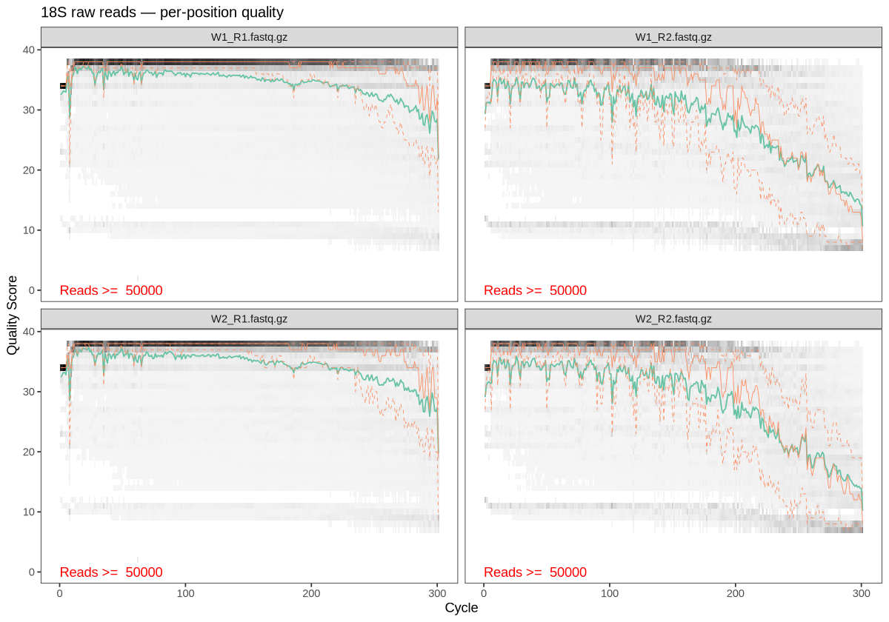
How to read this: left to right is position along the read; height is the machine’s confidence (above 30 = fewer than 1 error in 1,000 letters). The green line holds up on the left panels (first read) but sinks on the right (second read) after about letter 230. For specialists — scripts, parameters & full tables
Checksums vs vendor
MD5SUM_Raw.txt; FastQC + MultiQC; per-file read statistics; DADA2 quality profiles (50,000 reads per file). All files come from one MiSeq run,M04635:72:000000000-MDYKK.Script
scripts/01_qc.sh#!/usr/bin/env bash # Step 1 — Raw read QC: checksum verification, FastQC + MultiQC, per-file read stats, # and DADA2 quality profiles. Inputs: NEW/<marker>/<site>/*.fastq.gz set -euo pipefail cd "$(dirname "$0")/.." OUT=results/01_qc mkdir -p "$OUT" work/01_fastqc docs/img # 1a. MD5 verification against the vendor checksum files : > "$OUT/md5_check.tsv" for m in 18S COI; do while read -r hash file; do path=$(ls NEW/"$m"/*/"$file") got=$(md5sum < "$path" | cut -d' ' -f1) status=$([ "$got" = "$hash" ] && echo OK || echo FAIL) printf '%s\t%s\t%s\n' "$m" "$path" "$status" >> "$OUT/md5_check.tsv" done < NEW/"$m"/MD5SUM_Raw.txt done # 1b. FastQC on every raw file, summarised with MultiQC find NEW -name '*.fastq.gz' -print0 | xargs -0 fastqc -q -t 8 --outdir work/01_fastqc multiqc -q -f -o "$OUT/multiqc" -n multiqc_raw.html work/01_fastqc # 1c. Read count / length / GC / mean quality per file printf 'marker\tsite\tsample\tread\treads\tmean_len\tgc_pct\tmean_q\n' > "$OUT/read_stats.tsv" for f in NEW/*/*/*.fastq.gz; do marker=$(echo "$f" | cut -d/ -f2); site=$(echo "$f" | cut -d/ -f3) base=$(basename "$f" .fastq.gz); sample=${base%_R*}; read=${base##*_} zcat "$f" | awk -v m="$marker" -v s="$site" -v sm="$sample" -v r="$read" ' BEGIN { for (i = 33; i < 127; i++) ord[sprintf("%c", i)] = i - 33 } NR % 4 == 2 { n++; len += length($0); gc += gsub(/[GCgc]/, "") } NR % 4 == 0 { for (i = 1; i <= length($0); i++) q += ord[substr($0, i, 1)]; qn += length($0) } END { printf "%s\t%s\t%s\t%s\t%d\t%.1f\t%.1f\t%.1f\n", m, s, sm, r, n, len/n, 100*gc/len, q/qn }' \ >> "$OUT/read_stats.tsv" done # 1d. Per-position quality profiles (DADA2) Rscript scripts/01_quality_profiles.RScript
scripts/01_quality_profiles.R# Step 1d — DADA2 per-position quality profiles of the raw reads (R1 and R2, both sites). suppressPackageStartupMessages({ library(dada2); library(ggplot2) }) for (marker in c("18S", "COI")) { files <- sort(list.files(file.path("NEW", marker), pattern = "fastq.gz$", recursive = TRUE, full.names = TRUE)) p <- plotQualityProfile(files, n = 50000) + ggtitle(sprintf("%s raw reads — per-position quality", marker)) + theme(plot.title = element_text(size = 12)) ggsave(sprintf("docs/img/01_quality_%s.png", marker), p, width = 10, height = 7, dpi = 120) }18S NEW/18S/Chandubi/W1_R1.fastq.gz OK 18S NEW/18S/Chandubi/W1_R2.fastq.gz OK 18S NEW/18S/Dipor Beel/W2_R1.fastq.gz OK 18S NEW/18S/Dipor Beel/W2_R2.fastq.gz OK COI NEW/COI/Chandubi/W1_R1.fastq.gz OK COI NEW/COI/Chandubi/W1_R2.fastq.gz OK COI NEW/COI/Dipor Beel/W2_R1.fastq.gz OK COI NEW/COI/Dipor Beel/W2_R2.fastq.gz OK marker site sample read reads mean length GC % mean Q 18S Chandubi W1 R1 166,108 301.0 44.4 34.4 18S Chandubi W1 R2 166,108 301.0 43.1 28.5 18S Dipor Beel W2 R1 143,035 301.0 47.2 34.3 18S Dipor Beel W2 R2 143,035 301.0 44.7 28.5 COI Chandubi W1 R1 167,886 301.0 38.6 34.8 COI Chandubi W1 R2 167,886 301.0 38.8 29.4 COI Dipor Beel W2 R1 143,351 301.0 39.0 34.9 COI Dipor Beel W2 R2 143,351 301.0 39.1 29.2 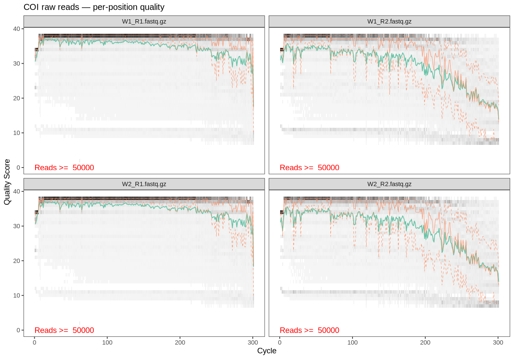
COI quality profiles. Step 2
Removing the copying labels
In plain wordsTo copy a barcode gene, the lab uses short “starter” pieces of DNA called primers — think of them as address labels stuck to each end. They are not part of the organism’s DNA, so they are cut off. Any fragment missing its labels was copied by mistake and is thrown away.
Nearly nine in ten fragments carried both labels exactly where expected — a sign the lab work went well. The primers were identified by reading the data itself, not taken on trust.
89%fragments kept2primer pairs found~280letters left per read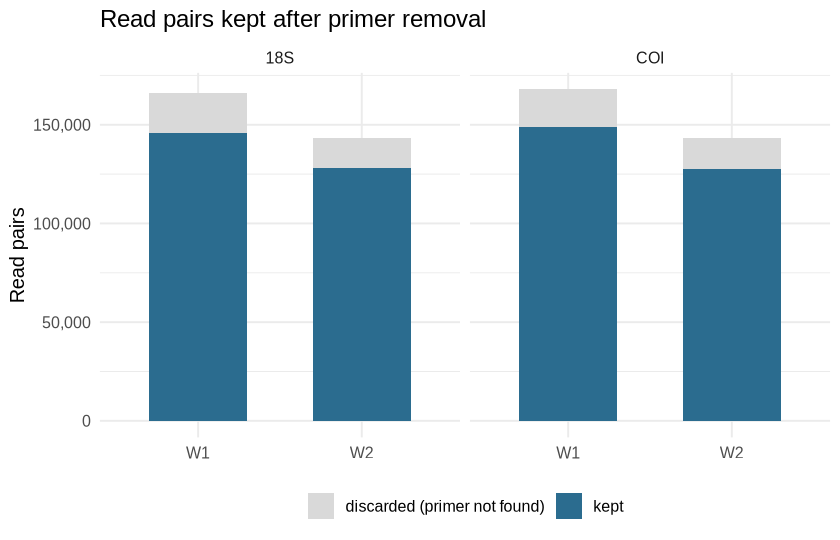
Blue: fragments that carried both labels and were kept. Grey: discarded. Both lakes and both barcodes behave alike. For specialists — scripts, parameters & full tables
Marker Forward Reverse Reference 18S V4 E572F CYGCGGTAATTCCAGCTCE1009R AYGGTATCTRWTCRTCTTYGComeau et al. 2011 COI mlCOIintF GGWACWGGWTGAACWGTWTAYCCYCCjgHCO2198 TANACYTCNGGRTGNCCRAARAAYCALeray et al. 2013 Cutadapt linked adapters: 5′ primer anchored and required, read-through primer optional; max error 0.15; untrimmed pairs discarded.
Script
scripts/02_primer_removal.sh#!/usr/bin/env bash # Step 2 — Primer removal with Cutadapt. # Each read must start with its primer (anchored 5'); pairs where either primer is # missing are discarded. If a read runs through into the opposite primer, that # (reverse-complemented) primer and everything after it is trimmed too. # 18S V4 : E572F CYGCGGTAATTCCAGCTC / E1009R AYGGTATCTRWTCRTCTTYG (Comeau et al. 2011) # COI : mlCOIintF GGWACWGGWTGAACWGTWTAYCCYCC / jgHCO2198 TAIACYTCIGGRTGICCRAARAAYCA (Leray et al. 2013; I -> N) set -euo pipefail cd "$(dirname "$0")/.." OUT=results/02_primer_removal mkdir -p "$OUT" work/02_trimmed revcomp() { echo "$1" | rev | tr ACGTRYKMBVDHN TGCAYRMKVBHDN; } declare -A FWD=( [18S]=CYGCGGTAATTCCAGCTC [COI]=GGWACWGGWTGAACWGTWTAYCCYCC ) declare -A REV=( [18S]=AYGGTATCTRWTCRTCTTYG [COI]=TANACYTCNGGRTGNCCRAARAAYCA ) printf 'marker\tsample\tpairs_in\tpairs_with_both_primers\tpct_kept\n' > "$OUT/cutadapt_summary.tsv" for m in 18S COI; do F=${FWD[$m]}; R=${REV[$m]} mkdir -p "work/02_trimmed/$m" for r1 in NEW/"$m"/*/*_R1.fastq.gz; do s=$(basename "$r1" _R1.fastq.gz); r2=${r1/_R1/_R2} cutadapt -j 8 --discard-untrimmed -e 0.15 --minimum-length 50 \ -g "^${F};required...$(revcomp "$R");optional" -G "^${R};required...$(revcomp "$F");optional" \ --json "$OUT/${m}_${s}.cutadapt.json" \ -o "work/02_trimmed/$m/${s}_R1.fastq.gz" -p "work/02_trimmed/$m/${s}_R2.fastq.gz" \ "$r1" "$r2" > "$OUT/${m}_${s}.cutadapt.log" python3 - "$OUT/${m}_${s}.cutadapt.json" "$m" "$s" >> "$OUT/cutadapt_summary.tsv" <<'PY' import json, sys j = json.load(open(sys.argv[1]))["read_counts"] print(f"{sys.argv[2]}\t{sys.argv[3]}\t{j['input']}\t{j['output']}\t{100*j['output']/j['input']:.1f}") PY done done # Post-trim length distribution (input to choosing DADA2 truncation lengths) printf 'marker\tsample\tread\tlength\tcount\n' > "$OUT/trimmed_lengths.tsv" for f in work/02_trimmed/*/*.fastq.gz; do m=$(basename "$(dirname "$f")"); b=$(basename "$f" .fastq.gz) zcat "$f" | awk -v m="$m" -v s="${b%_R*}" -v r="${b##*_}" \ 'NR%4==2{c[length($0)]++} END{for(l in c) printf "%s\t%s\t%s\t%d\t%d\n", m, s, r, l, c[l]}' \ >> "$OUT/trimmed_lengths.tsv" done Rscript scripts/02_plot_lengths.RScript
scripts/02_plot_lengths.R# Step 2 — Plot read-retention after primer removal and trimmed read-length distribution. suppressPackageStartupMessages({ library(ggplot2); library(data.table) }) s <- fread("results/02_primer_removal/cutadapt_summary.tsv") s[, discarded := pairs_in - pairs_with_both_primers] long <- melt(s, id.vars = c("marker", "sample"), measure.vars = c("pairs_with_both_primers", "discarded"), variable.name = "fate", value.name = "pairs") long[, fate := factor(fate, levels = c("discarded", "pairs_with_both_primers"), labels = c("discarded (primer not found)", "kept"))] p1 <- ggplot(long, aes(sample, pairs, fill = fate)) + geom_col(width = 0.6) + facet_wrap(~marker) + scale_fill_manual(values = c("#d9d9d9", "#2b6c8f")) + scale_y_continuous(labels = scales::comma) + labs(x = NULL, y = "Read pairs", fill = NULL, title = "Read pairs kept after primer removal") + theme_minimal(base_size = 12) + theme(legend.position = "bottom") ggsave("docs/img/02_primer_retention.png", p1, width = 7, height = 4.5, dpi = 120) l <- fread("results/02_primer_removal/trimmed_lengths.tsv") p2 <- ggplot(l[length >= 150], aes(length, count, colour = sample)) + geom_line() + facet_grid(read ~ marker, scales = "free_y") + scale_y_log10(labels = scales::comma) + scale_colour_manual(values = c(W1 = "#2b6c8f", W2 = "#c2662d"), labels = c(W1 = "Chandubi (W1)", W2 = "Deepor Beel (W2)")) + labs(x = "Read length after primer removal (bp)", y = "Reads (log scale)", colour = NULL, title = "Trimmed read-length distribution") + theme_minimal(base_size = 12) + theme(legend.position = "bottom") ggsave("docs/img/02_trimmed_lengths.png", p2, width = 8, height = 5, dpi = 120)marker sample pairs in kept % kept 18S W1 166,108 145,813 87.8 18S W2 143,035 128,222 89.6 COI W1 167,886 148,980 88.7 COI W2 143,351 127,418 88.9 results/02_primer_removal/cutadapt_summary.tsv
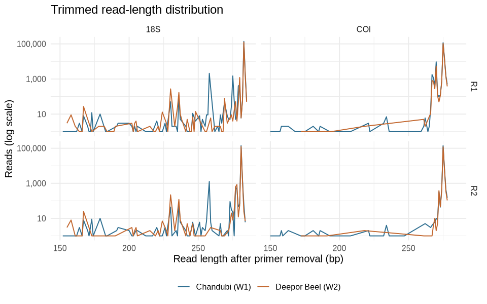
Read lengths after primer removal (log scale). Step 3
Separating real DNA from typos
In plain wordsSequencers make occasional typos. If you counted every slightly different spelling as a new organism you would invent thousands of species that don’t exist. This step learns the machine’s typo habits from the data itself, then decides which sequences are real and which are just misspellings of them.
What survives is a list of ASVs (amplicon sequence variants) — each one an exact, unique DNA signature, roughly “one distinct kind of organism”. The two reads of each fragment are then joined into one full sequence, and chimeras — artificial sequences glued together from two different organisms during copying — are removed.
Importantly, both lakes were processed together, so the same organism gets the same signature in both lakes and they can be compared fairly.
1,03518S signatures376COI signatures9.32%18S reads were chimeras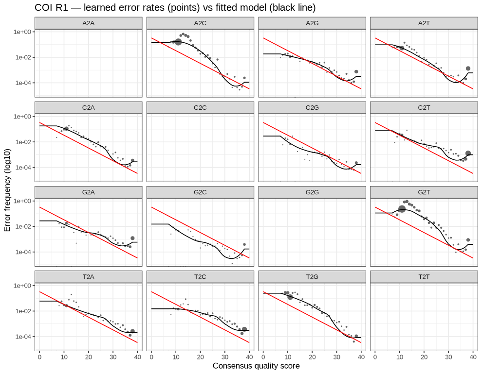
The typo model. Each panel is one kind of substitution (e.g. A read as C). Dots are observed error rates; the black line is the model learned from the data. They agree, and errors fall as the machine’s confidence (x-axis) rises — the model can be trusted. For specialists — scripts, parameters & full tables
Parameter 18S COI truncLen (R1, R2) 270, 210 250, 200 maxEE (R1, R2) 2, 4 2, 4 Denoising pooled across both sites ( pool = TRUE)Merging minOverlap 12, maxMismatch 0 ASVs before → after chimera removal 2043 → 1035 481 → 376 Script
scripts/03_dada2.R# Step 3 — DADA2: filter/trim, learn errors, denoise both sites JOINTLY (pool = TRUE), # merge pairs, remove chimeras. One run per marker so ASVs are comparable across sites. # Usage: Rscript scripts/03_dada2.R <marker> <truncF> <truncR> <maxEE_F> <maxEE_R> suppressPackageStartupMessages({ library(dada2); library(ggplot2); library(data.table) }) args <- commandArgs(trailingOnly = TRUE) marker <- args[1] truncLen <- as.integer(args[2:3]) maxEE <- as.numeric(args[4:5]) set.seed(2026) inDir <- file.path("work/02_trimmed", marker) filtDir <- file.path("work/03_filtered", marker) out <- file.path("results/03_dada2", marker) dir.create(filtDir, recursive = TRUE, showWarnings = FALSE) dir.create(out, recursive = TRUE, showWarnings = FALSE) fnF <- sort(list.files(inDir, "_R1.fastq.gz$", full.names = TRUE)) fnR <- sort(list.files(inDir, "_R2.fastq.gz$", full.names = TRUE)) samples <- sub("_R1.fastq.gz$", "", basename(fnF)) filtF <- file.path(filtDir, paste0(samples, "_F.fastq.gz")) filtR <- file.path(filtDir, paste0(samples, "_R.fastq.gz")) names(filtF) <- names(filtR) <- samples # 3a. Quality filtering filt <- filterAndTrim(fnF, filtF, fnR, filtR, truncLen = truncLen, maxEE = maxEE, maxN = 0, truncQ = 2, rm.phix = TRUE, compress = TRUE, multithread = TRUE) # 3b. Error models errF <- learnErrors(filtF, multithread = TRUE, randomize = TRUE, verbose = FALSE) errR <- learnErrors(filtR, multithread = TRUE, randomize = TRUE, verbose = FALSE) for (d in list(list(errF, "R1"), list(errR, "R2"))) { p <- plotErrors(d[[1]], nominalQ = TRUE) + ggtitle(sprintf("%s %s — learned error rates (points) vs fitted model (black line)", marker, d[[2]])) ggsave(sprintf("docs/img/03_errors_%s_%s.png", marker, d[[2]]), p, width = 9, height = 7, dpi = 110) } # 3c. Joint denoising of both sites dadaF <- dada(filtF, err = errF, pool = TRUE, multithread = TRUE, verbose = FALSE) dadaR <- dada(filtR, err = errR, pool = TRUE, multithread = TRUE, verbose = FALSE) # 3d. Merge pairs, build table, remove chimeras mergers <- mergePairs(dadaF, filtF, dadaR, filtR, minOverlap = 12, maxMismatch = 0) seqtab <- makeSequenceTable(mergers) nochim <- removeBimeraDenovo(seqtab, method = "consensus", multithread = TRUE) # 3e. Outputs: ASV table, ASV FASTA, length table, read tracking getN <- function(x) sum(getUniques(x)) track <- data.table(marker = marker, sample = samples, input = filt[, 1], filtered = filt[, 2], denoisedF = sapply(dadaF, getN), denoisedR = sapply(dadaR, getN), merged = sapply(mergers, getN), nonchim = rowSums(nochim)) fwrite(track, file.path(out, "track.tsv"), sep = "\t") asv_seqs <- colnames(nochim) asv_ids <- sprintf("%s_ASV%04d", marker, seq_along(asv_seqs)) counts <- data.table(asv = asv_ids, t(nochim)) setnames(counts, c("asv", rownames(nochim))) counts[, length := nchar(asv_seqs)][, sequence := asv_seqs] fwrite(counts, file.path(out, "asv_table.tsv"), sep = "\t") writeLines(paste0(">", asv_ids, "\n", asv_seqs), file.path(out, "asv_seqs.fasta")) lens <- data.table(length = nchar(colnames(seqtab)), reads = colSums(seqtab), chimera = !colnames(seqtab) %in% asv_seqs) fwrite(lens[, .(asvs = .N, reads = sum(reads)), by = .(length, chimera)][order(length)], file.path(out, "merged_lengths.tsv"), sep = "\t") summary <- list(marker = marker, truncLen = truncLen, maxEE = maxEE, asvs_before_chimera = ncol(seqtab), asvs_final = ncol(nochim), chimeric_read_pct = round(100 * (1 - sum(nochim) / sum(seqtab)), 2)) jsonlite::write_json(summary, file.path(out, "summary.json"), auto_unbox = TRUE, pretty = TRUE) print(track); str(summary)18S read tracking
marker sample input filtered denoisedF denoisedR merged nonchim 18S W1 145,813 115,951 114,021 113,934 104,117 93,012 18S W2 128,222 101,027 99,064 99,785 88,768 81,898 results/03_dada2/18S/track.tsv
COI read tracking
marker sample input filtered denoisedF denoisedR merged nonchim COI W1 148,980 125,051 124,414 124,337 123,126 117,653 COI W2 127,418 107,049 106,932 106,813 106,300 102,969 results/03_dada2/COI/track.tsv
Output files
Step 4
Weeding out fakes
In plain wordsThe COI barcode is a recipe for a protein. A genuine recipe reads like a sentence with no “STOP” in the middle. Sequences that contain a stop, or whose length breaks the three-letter rhythm of the code, are broken copies (old “ghost” genes or errors) and are removed. For 18S, sequences far too short or too long to be the real barcode are removed.
Very little had to go — the data was already clean after step 3.
31COI fakes removed5318S off-length removed1,327signatures kept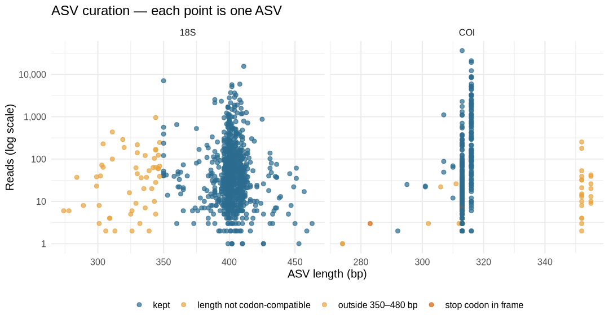
Each dot is one DNA signature: how long it is (x) and how common (y, log scale). Blue were kept. The kept COI signatures line up neatly at 313 and 316 letters — exactly the expected size, differing by one three-letter “word”. For specialists — scripts, parameters & full tables
COI: length must differ from 313 bp by whole codons (±10) and translate stop-free under NCBI genetic code 5 (invertebrate mitochondrial); coi coding frame: +2. 18S: 350–480 bp.
Script
scripts/04_asv_curation.R# Step 4 — ASV curation. # COI : a real COI ASV is protein-coding. Keep ASVs whose length differs from the 313 bp # Leray fragment by whole codons (±10 codons) AND translate with no stop codon # under the invertebrate mitochondrial code (NCBI table 5). Others are likely # NUMTs / pseudogenes or artefacts. # 18S : keep ASVs within the expected V4 (E572F–E1009R) length window, 350–480 bp. suppressPackageStartupMessages({ library(Biostrings); library(data.table); library(ggplot2) }) out <- "results/04_curation" dir.create(out, recursive = TRUE, showWarnings = FALSE) read_asv <- function(m) fread(file.path("results/03_dada2", m, "asv_table.tsv")) # ---- COI ---- coi <- read_asv("COI") dna <- DNAStringSet(coi$sequence) code5 <- getGeneticCode("5") stops_in_frame <- sapply(1:3, function(f) vcountPattern("*", suppressWarnings(translate(subseq(dna, f), genetic.code = code5, if.fuzzy.codon = "X")))) # The coding frame is the one that is stop-free for the most reads frame <- which.max(colSums((stops_in_frame == 0) * (coi$W1 + coi$W2))) coi[, `:=`(stops = stops_in_frame[, frame], codon_ok = abs(length - 313) %% 3 == 0 & abs(length - 313) <= 30)] coi[, keep := codon_ok & stops == 0] coi[, reason := fifelse(keep, "kept", fifelse(!codon_ok, "length not codon-compatible", "stop codon in frame"))] # ---- 18S ---- s18 <- read_asv("18S") s18[, keep := length >= 350 & length <= 480] s18[, reason := fifelse(keep, "kept", "outside 350–480 bp")] # ---- Write curated tables + summary ---- summ <- rbindlist(lapply(list(COI = coi, `18S` = s18), function(d) d[, .(asvs = .N, W1_reads = sum(W1), W2_reads = sum(W2)), by = reason]), idcol = "marker") fwrite(summ, file.path(out, "curation_summary.tsv"), sep = "\t") fwrite(coi[, .(asv, length, stops, reason)], file.path(out, "COI_frame_check.tsv"), sep = "\t") cat(sprintf("COI coding frame: +%d\n", frame), file = file.path(out, "COI_frame.txt")) for (m in c("COI", "18S")) { d <- if (m == "COI") coi else s18 k <- d[keep == TRUE] fwrite(k[, .(asv, W1, W2, length, sequence)], file.path(out, sprintf("%s_asv_table_curated.tsv", m)), sep = "\t") writeLines(paste0(">", k$asv, "\n", k$sequence), file.path(out, sprintf("%s_asv_seqs_curated.fasta", m))) } # ---- Plot: ASV length vs reads, coloured by curation outcome ---- both <- rbind(coi[, .(marker = "COI", length, reads = W1 + W2, reason)], s18[, .(marker = "18S", length, reads = W1 + W2, reason)]) p <- ggplot(both, aes(length, reads, colour = reason)) + geom_point(alpha = 0.7, size = 1.8) + facet_wrap(~marker, scales = "free_x") + scale_y_log10(labels = scales::comma) + scale_colour_manual(values = c(kept = "#2b6c8f", `stop codon in frame` = "#d95f02", `length not codon-compatible` = "#e7a33e", `outside 350–480 bp` = "#e7a33e")) + labs(x = "ASV length (bp)", y = "Reads (log scale)", colour = NULL, title = "ASV curation — each point is one ASV") + theme_minimal(base_size = 12) + theme(legend.position = "bottom") ggsave("docs/img/04_curation.png", p, width = 9, height = 4.8, dpi = 120) print(summ)marker reason asvs Chandubi reads Deepor reads COI kept 345 116,954 102,761 COI length not codon-compatible 29 690 207 COI stop codon in frame 2 9 1 18S kept 982 88,564 81,828 18S outside 350–480 bp 53 4,448 70 results/04_curation/curation_summary.tsv
Output files
Step 5
What we ended up with
In plain wordsA final check: how much of the raw data made it through, how many signatures each lake has, and — the key question — did we sequence deeply enough to find nearly everything?
63%of raw data used98218S signatures345COI signatures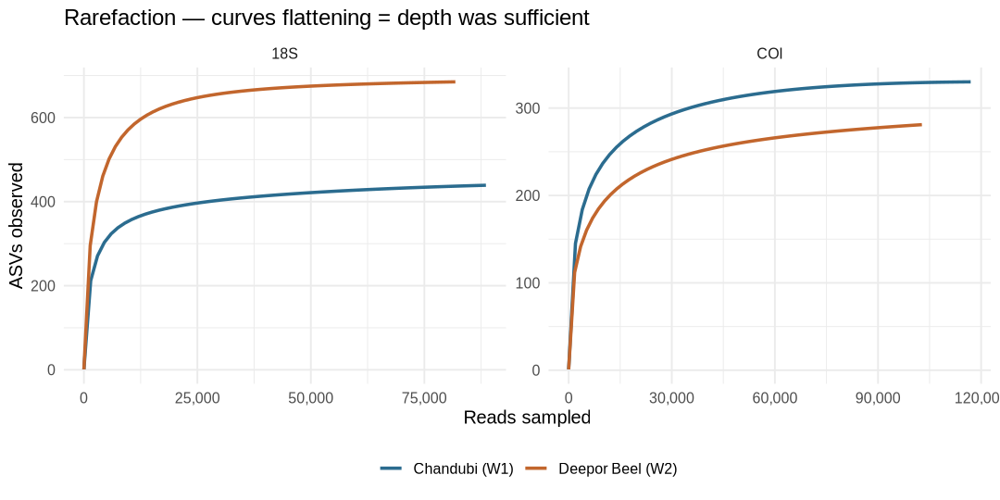
Did we look hard enough? Like a birdwatcher counting new species: at first every few minutes brings a new one, later almost none. Each line climbs quickly then flattens — sequencing more would have found very few new signatures. Depth was sufficient in both lakes for both barcodes. 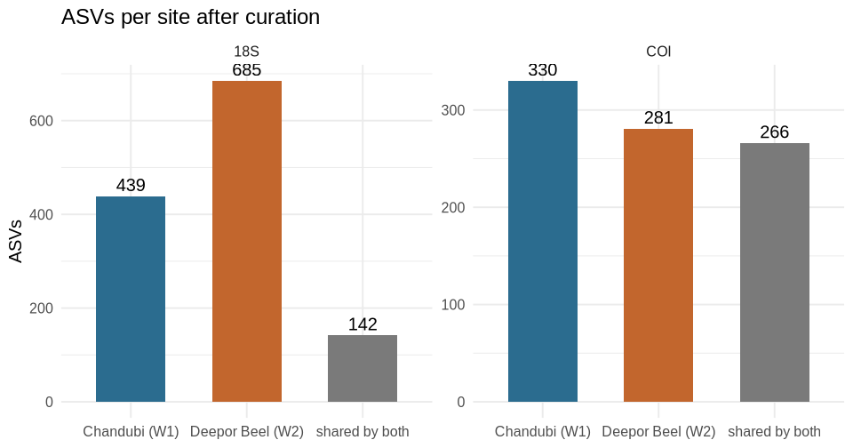
Signatures found only in Chandubi (blue), only in Deepor (orange), and the ones in both lakes (grey). 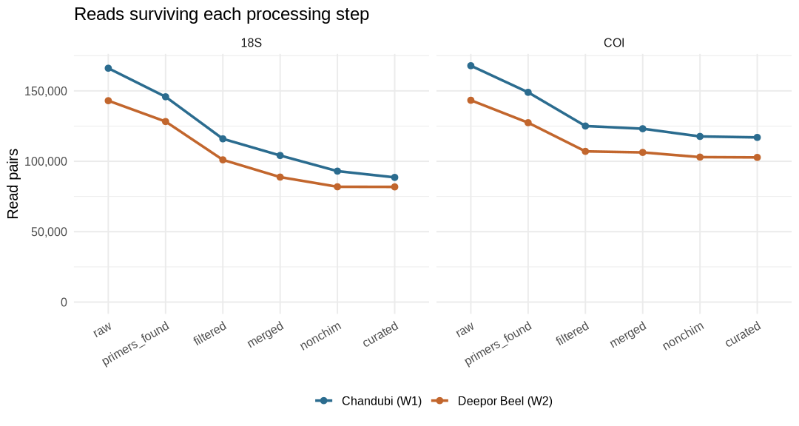
How many DNA fragments remained after each step. For specialists — scripts, parameters & full tables
Script
scripts/05_summary.R# Step 5 — Processing summary: reads surviving each step, ASVs per site and shared # between sites, and rarefaction curves (was sequencing depth sufficient?). dir.create("work/plots", recursive = TRUE, showWarnings = FALSE) suppressPackageStartupMessages({ library(data.table); library(ggplot2); library(vegan) }) out <- "results/05_summary" dir.create(out, recursive = TRUE, showWarnings = FALSE) raw <- fread("results/01_qc/read_stats.tsv")[read == "R1", .(marker, sample, raw = reads)] site_of <- c(W1 = "Chandubi (W1)", W2 = "Deepor Beel (W2)") rows <- list() for (m in c("18S", "COI")) { tr <- fread(file.path("results/03_dada2", m, "track.tsv")) cur <- fread(file.path("results/04_curation", sprintf("%s_asv_table_curated.tsv", m))) tr[, curated := c(W1 = sum(cur$W1), W2 = sum(cur$W2))[sample]] rows[[m]] <- merge(raw[marker == m], tr, by = c("marker", "sample")) } track <- rbindlist(rows)[, .(marker, sample, raw, primers_found = input, filtered, merged, nonchim, curated)] track[, pct_retained := round(100 * curated / raw, 1)] fwrite(track, file.path(out, "read_tracking.tsv"), sep = "\t") tl <- melt(track, id.vars = c("marker", "sample"), measure.vars = c("raw", "primers_found", "filtered", "merged", "nonchim", "curated"), variable.name = "step", value.name = "reads") tl[, site := site_of[sample]] tl[, step := factor(step, levels = c("raw", "primers_found", "filtered", "merged", "nonchim", "curated"), labels = c("Raw", "Primers found", "Filtered", "Merged", "Non-chimeric", "Curated"))] p1 <- ggplot(tl, aes(step, reads, group = site, colour = site)) + geom_line(linewidth = 1) + geom_point(size = 2) + facet_wrap(~marker) + scale_y_continuous(labels = scales::comma, limits = c(0, NA)) + scale_colour_manual(values = c("#2b6c8f", "#c2662d")) + labs(x = NULL, y = "Read pairs", colour = NULL, title = "Reads surviving each processing step") + theme_minimal(base_size = 12) + theme(legend.position = "bottom", axis.text.x = element_text(angle = 30, hjust = 1)) saveRDS(p1, "work/plots/05_read_tracking.rds") ggsave("docs/img/05_read_tracking.png", p1, width = 9, height = 4.8, dpi = 120) asv_stats <- list(); curves <- list() for (m in c("18S", "COI")) { cur <- fread(file.path("results/04_curation", sprintf("%s_asv_table_curated.tsv", m))) asv_stats[[m]] <- data.table(marker = m, W1_asvs = sum(cur$W1 > 0), W2_asvs = sum(cur$W2 > 0), shared_asvs = sum(cur$W1 > 0 & cur$W2 > 0), total_asvs = nrow(cur), shared_reads_pct_W1 = round(100 * sum(cur$W1[cur$W2 > 0]) / sum(cur$W1), 1), shared_reads_pct_W2 = round(100 * sum(cur$W2[cur$W1 > 0]) / sum(cur$W2), 1)) mat <- t(as.matrix(cur[, .(W1, W2)])) asv_stats[[m]][, `:=`( bray_curtis = round(as.numeric(vegdist(decostand(mat, "total"), "bray")), 3), jaccard = round(as.numeric(vegdist(mat, "jaccard", binary = TRUE)), 3))] for (s in rownames(mat)) { depth <- unique(round(seq(1, sum(mat[s, ]), length.out = 60))) curves[[paste(m, s)]] <- data.table(marker = m, site = site_of[s], depth = depth, asvs = as.numeric(rarefy(mat[s, ], depth))) } } asv_stats <- rbindlist(asv_stats) fwrite(asv_stats, file.path(out, "asv_counts.tsv"), sep = "\t") p2 <- ggplot(rbindlist(curves), aes(depth, asvs, colour = site)) + geom_line(linewidth = 1) + facet_wrap(~marker, scales = "free") + scale_x_continuous(labels = scales::comma) + scale_colour_manual(values = c("#2b6c8f", "#c2662d")) + labs(x = "Reads sampled", y = "ASVs observed", colour = NULL, title = "Rarefaction — curves flattening = depth was sufficient") + theme_minimal(base_size = 12) + theme(legend.position = "bottom") saveRDS(p2, "work/plots/05_rarefaction.rds") ggsave("docs/img/05_rarefaction.png", p2, width = 9, height = 4.5, dpi = 120) al <- melt(asv_stats, id.vars = "marker", measure.vars = c("W1_asvs", "W2_asvs", "shared_asvs"), value.name = "asvs") al[, variable := factor(variable, labels = c("Chandubi (W1)", "Deepor Beel (W2)", "shared by both"))] p3 <- ggplot(al, aes(variable, asvs, fill = variable)) + geom_col(width = 0.6, show.legend = FALSE) + geom_text(aes(label = asvs), vjust = -0.4) + facet_wrap(~marker, scales = "free_y") + scale_fill_manual(values = c("#2b6c8f", "#c2662d", "#7a7a7a")) + labs(x = NULL, y = "ASVs", title = "ASVs per site after curation") + theme_minimal(base_size = 12) ggsave("docs/img/05_asv_counts.png", p3, width = 8, height = 4.2, dpi = 120) print(track); print(asv_stats)marker sample raw primers found filtered merged non-chimeric curated % of raw retained 18S W1 166,108 145,813 115,951 104,117 93,012 88,564 53.3 18S W2 143,035 128,222 101,027 88,768 81,898 81,828 57.2 COI W1 167,886 148,980 125,051 123,126 117,653 116,954 69.7 COI W2 143,351 127,418 107,049 106,300 102,969 102,761 71.7 results/05_summary/read_tracking.tsv
marker Chandubi Deepor shared total % Chandubi reads shared % Deepor reads shared Bray–Curtis Jaccard 18S 439 685 142 982 36.5 24.6 0.955 0.855 COI 330 281 266 345 99.4 99.9 0.235 0.229 Step 6
Putting names to the signatures
In plain wordsEach signature is still just a string of DNA letters. To name it, we compare it with large public libraries of DNA from organisms that experts have already identified — like matching a fingerprint against a database. A name is accepted only when the match is both confident and close enough: a species name, for example, needs the sequence to be at least 97–99% identical to a known one. If the match is weaker, we only claim a broader group (a family, or just “a rotifer”).
87–93%18S reads named to major group11018S genera named8COI genera namedWhat lives where (18S — the microscopic community)
Chandubi Beel
Rich in green algae (Chlorophyceae, ~14% of reads), diatoms (Cyclotella, Aulacoseira, Nitzschia), small amoeboid cercozoans, ciliates and rotifers.
Deepor Beel
Dominated by fungi (incl. chytrids that infect algae), desmids — ornate green algae such as Staurastrum and Cosmarium (~15%), water moulds (oomycetes), gastrotrichs and nematodes.
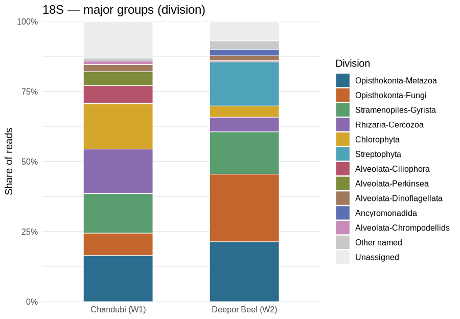
Share of 18S reads in each major group. The two lakes look strikingly different: Chandubi is algae-and-protist rich, Deepor fungus- and desmid-rich. Zooplankton (COI)
Rotifers dominate the named animals in both lakes — Brachionus caudatus, B. calyciflorus, Keratella tropica and Polyarthra vulgaris among them. Copepods are present: Mesocyclops (both lakes), Microcyclops and Eucyclops appear in the 18S data and a trace of Mesocyclops in COI — the lab’s earlier report found none. Water fleas (cladocerans) were not detected.
But most COI reads could not be named at all: only 31% (Chandubi) and 42% (Deepor) reach even phylum level. Their closest library matches are only 70–85% identical — too distant to name. Step 7 looks into them.
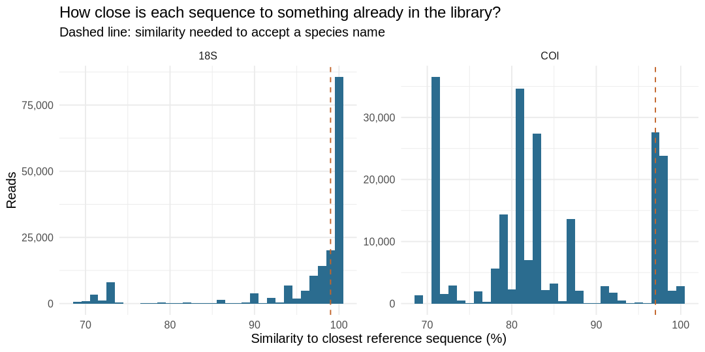
How similar each sequence is to its closest relative in the library (bars weighted by reads). 18S piles up near 100% — well known organisms. COI is split: one peak near 98% (named rotifers) and a large mass between 70 and 85% — organisms with no close relative in the library. 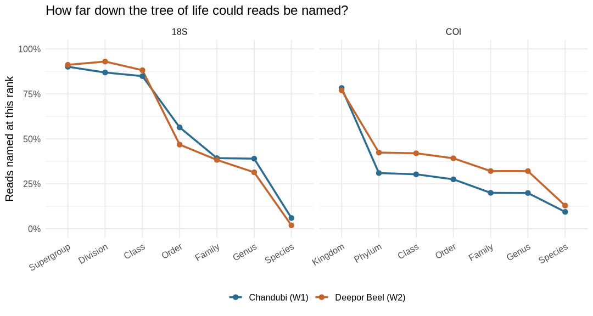
Share of reads that could be named at each level, from broad (left) to precise (right). For specialists — scripts, parameters & full tables
18S COI Reference PR2 v5.1.1 (SSU, UTAX format) Eukaryote CO1 Reference Set v5.1.0 (Porter & Hajibabaei) Classifier VSEARCH SINTAX, bootstrap cutoff 0.80, both strands Closest hit VSEARCH global alignment, top hit % identity Minimum identity family 95 · genus 97 · species 99 % order 85 · family 90 · genus 95 · species 97 % Ranks are accepted top-down; PR2 placeholder names (
_X,_sp.) are left blank but do not block lower ranks. MIDORI2 was the intended COI reference, but its Zenodo host refused downloads from this network.Script
scripts/06_taxonomy.sh#!/usr/bin/env bash # Step 6 — Taxonomic assignment of curated ASVs with VSEARCH. # (a) SINTAX: k-mer classifier with bootstrap confidence per rank (cutoff applied in R). # (b) Global alignment to the same reference: % identity of the closest reference sequence, # used to decide whether genus/species names are close enough to trust. # References (downloaded to work/refs, git-ignored): # 18S : PR2 v5.1.1 SSU, UTAX/SINTAX format # https://github.com/pr2database/pr2database/releases/tag/v5.1.1 # COI : Eukaryote CO1 Reference Set v5.1.0 (Porter & Hajibabaei), SINTAX format # https://github.com/terrimporter/CO1Classifier/releases/tag/SINTAX-COI-v5.1.0-ref set -euo pipefail cd "$(dirname "$0")/.." REFS=work/refs OUT=results/06_taxonomy mkdir -p "$REFS" "$OUT" if [ ! -s "$REFS/pr2_5.1.1_UTAX.fasta.gz" ]; then curl -sL -o "$REFS/pr2_5.1.1_UTAX.fasta.gz" \ https://github.com/pr2database/pr2database/releases/download/v5.1.1/pr2_version_5.1.1_SSU_UTAX.fasta.gz fi if [ ! -s "$REFS/COIv5.1.0_sintax.fasta" ]; then curl -sL -o "$REFS/coi.zip" \ https://github.com/terrimporter/CO1Classifier/releases/download/SINTAX-COI-v5.1.0-ref/SINTAX_COIv5.1.0_ref.zip # sequences are distributed in lower case, which VSEARCH treats as masked -> upper-case them unzip -p "$REFS/coi.zip" training/sintax.fasta | awk '/^>/ {print; next} {print toupper($0)}' \ > "$REFS/COIv5.1.0_sintax.fasta" && rm "$REFS/coi.zip" fi declare -A DB=( [18S]="$REFS/pr2_5.1.1_UTAX.fasta.gz" [COI]="$REFS/COIv5.1.0_sintax.fasta" ) for m in 18S COI; do q=results/04_curation/${m}_asv_seqs_curated.fasta # (a) classifier, 100 bootstrap subsamples, both strands vsearch --sintax "$q" --db "${DB[$m]}" --strand both --sintax_random --randseed 2026 \ --tabbedout "$OUT/${m}_sintax.tsv" --threads 16 --quiet # (b) closest reference sequence (top hits only; ties kept) vsearch --usearch_global "$q" --db "${DB[$m]}" --id 0.70 --strand both \ --maxaccepts 20 --maxrejects 500 --top_hits_only --output_no_hits \ --userout "$OUT/${m}_tophit.tsv" --userfields query+target+id+alnlen \ --threads 16 --quiet done Rscript scripts/06_taxonomy.RScript
scripts/06_taxonomy.R# Step 6 — Turn raw SINTAX + top-hit output into a conservative taxonomy table. # A rank is accepted only if BOTH # (1) SINTAX bootstrap confidence >= 0.80, and # (2) the closest reference sequence is similar enough for that rank: # COI : species >= 97 %, genus >= 95 %, family >= 90 %, order >= 85 % # 18S : species >= 99 %, genus >= 97 %, family >= 95 % # Ranks are accepted top-down; once one fails, all lower ranks are left unassigned. # PR2 placeholder names (e.g. "Dinophyceae_X", "Enoplea_XX_sp.") are left blank at their # own rank but do not stop lower ranks (e.g. order "Sphaeropleales_X" -> genus Desmodesmus). suppressPackageStartupMessages({ library(data.table); library(ggplot2) }) out <- "results/06_taxonomy" CONF <- 0.80 ranks <- list( COI = c(d = "Domain", k = "Kingdom", p = "Phylum", c = "Class", o = "Order", f = "Family", g = "Genus", s = "Species"), `18S` = c(k = "Domain", d = "Supergroup", p = "Division", c = "Class", o = "Order", f = "Family", g = "Genus", s = "Species")) min_id <- list(COI = c(Order = 85, Family = 90, Genus = 95, Species = 97), `18S` = c(Family = 95, Genus = 97, Species = 99)) site_of <- c(W1 = "Chandubi (W1)", W2 = "Deepor Beel (W2)") parse_sintax <- function(m) { s <- fread(file.path(out, sprintf("%s_sintax.tsv", m)), header = FALSE, sep = "\t", quote = "", fill = TRUE, col.names = c("asv", "tax", "strand"))[, 1:2] r <- ranks[[m]] rbindlist(lapply(seq_len(nrow(s)), function(i) { parts <- if (is.na(s$tax[i]) || s$tax[i] == "") character() else strsplit(s$tax[i], ",")[[1]] d <- data.table(asv = s$asv[i], letter = sub(":.*", "", parts), name = sub("^.:(.*)\\(.*$", "\\1", parts), conf = as.numeric(sub(".*\\((.*)\\)$", "\\1", parts))) d[, rank := r[letter]][] }), fill = TRUE) } summarise_marker <- function(m) { r <- unname(ranks[[m]]) counts <- fread(sprintf("results/04_curation/%s_asv_table_curated.tsv", m))[, .(asv, W1, W2, length)] long <- parse_sintax(m) hit <- fread(file.path(out, sprintf("%s_tophit.tsv", m)), header = FALSE, sep = "\t", quote = "", col.names = c("asv", "target", "identity", "alnlen")) hit <- hit[target != "*"][order(asv, -identity)][, .SD[1], by = asv] hit[, best_match := gsub("_", " ", sub(".*s:", "", target))] # Accept ranks top-down long <- merge(long, hit[, .(asv, identity)], by = "asv", all.x = TRUE) long[, need := min_id[[m]][rank]][is.na(need), need := 0] # PR2 joins division and subdivision ("Chlorophyta-Chlorophyta_X"): keep the division part long[, name := sub("-[^-]*_X+$", "", name)] long[, placeholder := grepl("(_X+|_sp\\.)$", name) | grepl("^undef_", name)] long[, ok := conf >= CONF & !is.na(identity) & identity >= need] long[, rank := factor(rank, levels = r)] setorder(long, asv, rank) long[, ok := cumprod(ok) == 1, by = asv] # Placeholders are left blank at their own rank but do not block the ranks below wide <- dcast(long[ok == TRUE & !placeholder], asv ~ rank, value.var = "name") for (x in r) if (!x %in% names(wide)) wide[, (x) := NA_character_] conf_wide <- dcast(long, asv ~ rank, value.var = "conf") setnames(conf_wide, setdiff(names(conf_wide), "asv"), paste0("conf_", setdiff(names(conf_wide), "asv"))) tax <- Reduce(function(a, b) merge(a, b, by = "asv", all.x = TRUE), list(counts, wide[, c("asv", r), with = FALSE], conf_wide, hit[, .(asv, identity, best_match)])) tax[, deepest := apply(.SD, 1, function(v) { k <- which(!is.na(v)); if (length(k)) r[max(k)] else "Unassigned" }), .SDcols = r] tax[, label := apply(.SD, 1, function(v) { k <- which(!is.na(v)); if (length(k)) v[max(k)] else "Unassigned" }), .SDcols = r] tax[, label := gsub("_", " ", label)] setorder(tax, -W1) fwrite(tax[order(asv)], file.path(out, sprintf("%s_taxonomy.tsv", m)), sep = "\t") tax[, marker := m][] } tax <- list(COI = summarise_marker("COI"), `18S` = summarise_marker("18S")) # ---- How deep could reads be named? ---- depth <- rbindlist(lapply(names(tax), function(m) { d <- tax[[m]]; r <- unname(ranks[[m]]) rbindlist(lapply(r[-1], function(x) data.table( marker = m, rank = x, W1 = round(100 * sum(d$W1[!is.na(d[[x]])]) / sum(d$W1), 1), W2 = round(100 * sum(d$W2[!is.na(d[[x]])]) / sum(d$W2), 1)))) })) fwrite(depth, file.path(out, "assignment_depth.tsv"), sep = "\t") dl <- melt(depth, id.vars = c("marker", "rank"), variable.name = "sample", value.name = "pct") dl[, site := site_of[sample]] dl[, rank := factor(rank, levels = c("Supergroup", "Kingdom", "Division", "Phylum", "Class", "Order", "Family", "Genus", "Species"))] p1 <- ggplot(dl, aes(rank, pct, colour = site, group = site)) + geom_line(linewidth = 1) + geom_point(size = 2.2) + facet_wrap(~marker, scales = "free_x") + scale_y_continuous(limits = c(0, 100), labels = function(x) paste0(x, "%")) + scale_colour_manual(values = c("#2b6c8f", "#c2662d")) + labs(x = NULL, y = "Reads named at this rank", colour = NULL, title = "How far down the tree of life could reads be named?") + theme_minimal(base_size = 12) + theme(legend.position = "bottom", axis.text.x = element_text(angle = 30, hjust = 1)) ggsave("docs/img/06_assignment_depth.png", p1, width = 9, height = 4.8, dpi = 120) # ---- Composition per lake ---- comp_plot <- function(m, rank, top, file, title) { d <- copy(tax[[m]]) d[, grp := fifelse(is.na(get(rank)), "Unassigned", gsub("_", " ", get(rank)))] cmp <- d[, .(W1 = sum(W1), W2 = sum(W2)), by = grp] cmp[, `:=`(W1 = 100 * W1 / sum(W1), W2 = 100 * W2 / sum(W2))] keep <- cmp[grp != "Unassigned"][order(-(W1 + W2))][seq_len(min(top, .N)), grp] cmp[!grp %in% c(keep, "Unassigned"), grp := "Other named"] cmp <- cmp[, .(W1 = sum(W1), W2 = sum(W2)), by = grp] fwrite(cmp[order(-(W1 + W2))][, `:=`(W1 = round(W1, 2), W2 = round(W2, 2))], file.path(out, sprintf("%s_composition_%s.tsv", m, tolower(rank))), sep = "\t") cl <- melt(cmp, id.vars = "grp", variable.name = "sample", value.name = "pct") cl[, site := site_of[sample]] lv <- c(keep, "Other named", "Unassigned") cl[, grp := factor(grp, levels = rev(lv[lv %in% grp]))] pal <- c("#2b6c8f", "#c2662d", "#5a9e6f", "#8a6bb0", "#d4a72c", "#4fa3b8", "#b5536b", "#7d8c3a", "#a0785a", "#5d6fb3", "#c98bb9", "#3f7f6e") cols <- setNames(c(pal[seq_along(keep)], "#c9c9c9", "#ededed"), c(keep, "Other named", "Unassigned")) p <- ggplot(cl, aes(site, pct, fill = grp)) + geom_col(width = 0.55, colour = "white", linewidth = 0.3) + scale_fill_manual(values = cols, breaks = lv) + scale_y_continuous(labels = function(x) paste0(x, "%"), expand = c(0, 0)) + labs(x = NULL, y = "Share of reads", fill = rank, title = title) + theme_minimal(base_size = 12) + guides(fill = guide_legend(ncol = 1)) ggsave(file, p, width = 7.5, height = 5.2, dpi = 120) } comp_plot("COI", "Phylum", 8, "docs/img/06_COI_phylum.png", "COI — animal groups (phylum)") comp_plot("COI", "Class", 10, "docs/img/06_COI_class.png", "COI — class") comp_plot("18S", "Division", 11, "docs/img/06_18S_division.png", "18S — major groups (division)") comp_plot("18S", "Class", 12, "docs/img/06_18S_class.png", "18S — class") # ---- Named genera and species ---- named <- rbindlist(lapply(names(tax), function(m) { d <- tax[[m]][!is.na(Genus)] grp_col <- if (m == "COI") "Phylum" else "Division" d[, .(marker = m, group = get(grp_col)[1], Genus, Species = gsub("_", " ", Species), asvs = .N, W1_reads = sum(W1), W2_reads = sum(W2), W1_pct = round(100 * sum(W1) / sum(tax[[m]]$W1), 2), W2_pct = round(100 * sum(W2) / sum(tax[[m]]$W2), 2), best_identity = max(identity)), by = .(Genus, Species)][, -(1:2)] })) setorder(named, marker, -W1_pct) fwrite(named, file.path(out, "named_genera_species.tsv"), sep = "\t") # ---- Identity of best match, weighted by reads ---- idd <- rbindlist(lapply(names(tax), function(m) tax[[m]][, .(marker = m, identity, reads = W1 + W2)])) idd[is.na(identity), identity := 69] p3 <- ggplot(idd, aes(identity, weight = reads)) + geom_histogram(binwidth = 1, fill = "#2b6c8f") + facet_wrap(~marker, scales = "free_y") + geom_vline(data = data.table(marker = c("COI", "18S"), x = c(97, 99)), aes(xintercept = x), linetype = 2, colour = "#c2662d") + scale_y_continuous(labels = scales::comma) + labs(x = "Similarity to closest reference sequence (%)", y = "Reads", title = "How close is each sequence to something already in the library?", subtitle = "Dashed line: similarity needed to accept a species name") + theme_minimal(base_size = 12) ggsave("docs/img/06_identity.png", p3, width = 9, height = 4.5, dpi = 120) # ---- Summary ---- summ <- rbindlist(lapply(names(tax), function(m) { d <- tax[[m]] data.table(marker = m, asvs = nrow(d), asvs_to_genus = sum(!is.na(d$Genus)), asvs_to_species = sum(!is.na(d$Species)), named_genera = uniqueN(na.omit(d$Genus)), named_species = uniqueN(na.omit(d$Species)), reads_below_85pct_identity = round(100 * sum((d$W1 + d$W2)[is.na(d$identity) | d$identity < 85]) / sum(d$W1 + d$W2), 1)) })) fwrite(summ, file.path(out, "taxonomy_summary.tsv"), sep = "\t") print(summ); print(depth) print(named[, .(marker, group, Genus, Species, W1_pct, W2_pct, best_identity)][order(marker, -(W1_pct + W2_pct))][, head(.SD, 15), by = marker])marker asvs asvs_to_genus asvs_to_species named_genera named_species reads_below_85pct_identity COI 345 49 41 8 10 63.3 18S 982 200 54 110 39 9.9 results/06_taxonomy/taxonomy_summary.tsv
marker rank W1 W2 COI Kingdom 78.3 77 COI Phylum 31 42.4 COI Class 30.3 42 COI Order 27.5 39.2 COI Family 20 32.1 COI Genus 19.9 32.1 COI Species 9.4 12.9 18S Supergroup 90.1 91.2 18S Division 86.9 93 18S Class 84.9 88.2 18S Order 56.4 46.8 18S Family 39.3 38.3 18S Genus 39 31.4 18S Species 6 1.9 results/06_taxonomy/assignment_depth.tsv
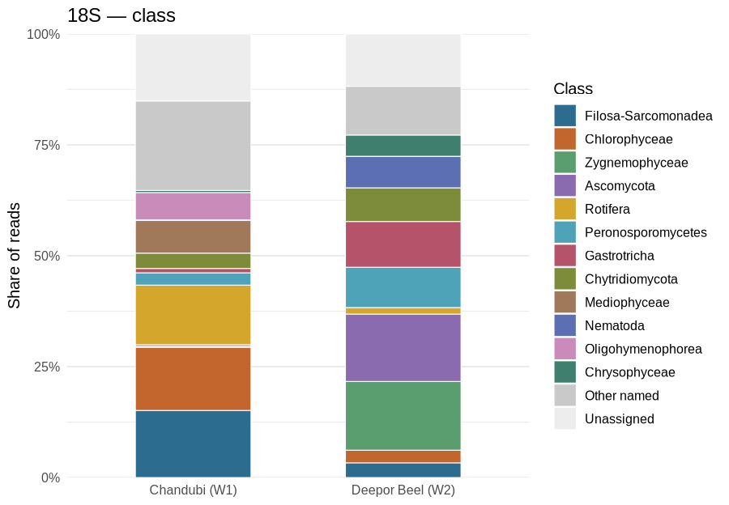
18S, class level. 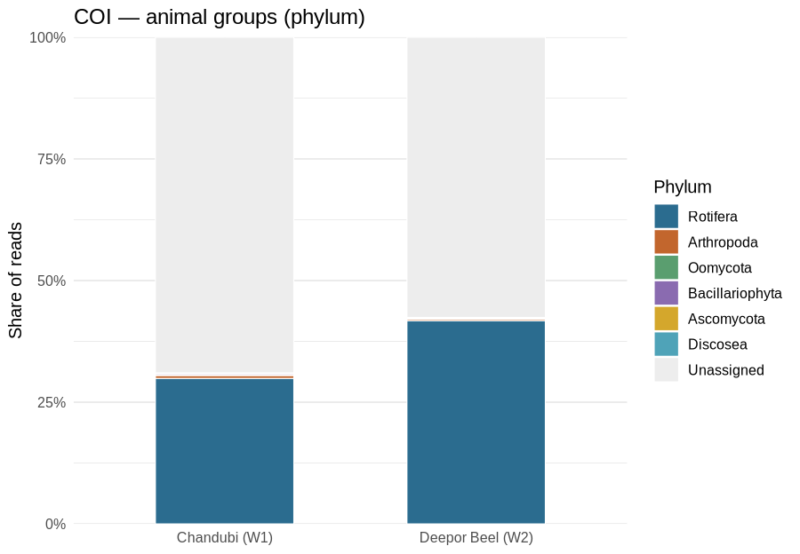
COI, phylum level. 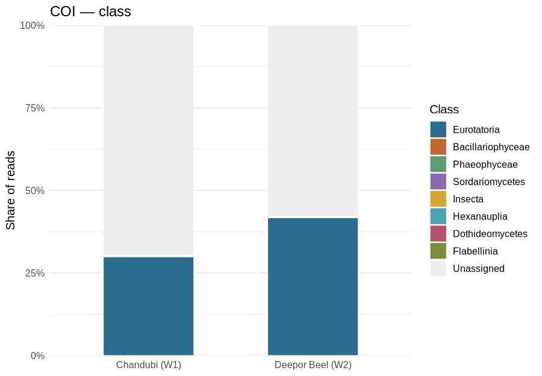
COI, class level. Output files
- results/06_taxonomy/18S_taxonomy.tsv
- results/06_taxonomy/COI_taxonomy.tsv
- results/06_taxonomy/named_genera_species.tsv
- results/06_taxonomy/18S_composition_division.tsv
- results/06_taxonomy/18S_composition_class.tsv
- results/06_taxonomy/COI_composition_phylum.tsv
- results/06_taxonomy/COI_composition_class.tsv
Step 7
Looking up the unknowns in GenBank
In plain wordsThe COI library used in step 6 is curated and so leaves things out. GenBank, run by the US National Center for Biotechnology Information (NCBI), holds nearly every DNA sequence ever published. We searched it (with a tool called BLAST) for the 40 most abundant COI signatures that step 6 could not name — together about 64% of Chandubi’s and 57% of Deepor’s COI reads.
Most of them are rotifers that simply aren’t in reference libraries yet. Several match unnamed “rotifer environmental samples” almost exactly (98–100%), sequences found by other studies but never tied to a named species; others are 80–89% similar to known rotifers such as Brachionus, Trichocerca and Anuraeopsis — likely related species that have never been barcoded. Counting these, rotifers make up roughly 60% of Chandubi’s and 65% of Deepor’s COI reads.
The single most common COI signature is a true unknown. COI_ASV0001 accounts for 15% (Chandubi) and 19% (Deepor) of COI reads, reads cleanly as a protein-coding gene, yet nothing in all of GenBank is more than about 72% identical to it. It belongs to an organism whose DNA has never been sequenced — possibly a new or unstudied local species.
60% / 65%COI reads that are rotifers (Chandubi / Deepor)~72%best match for the top unknown40sequences searched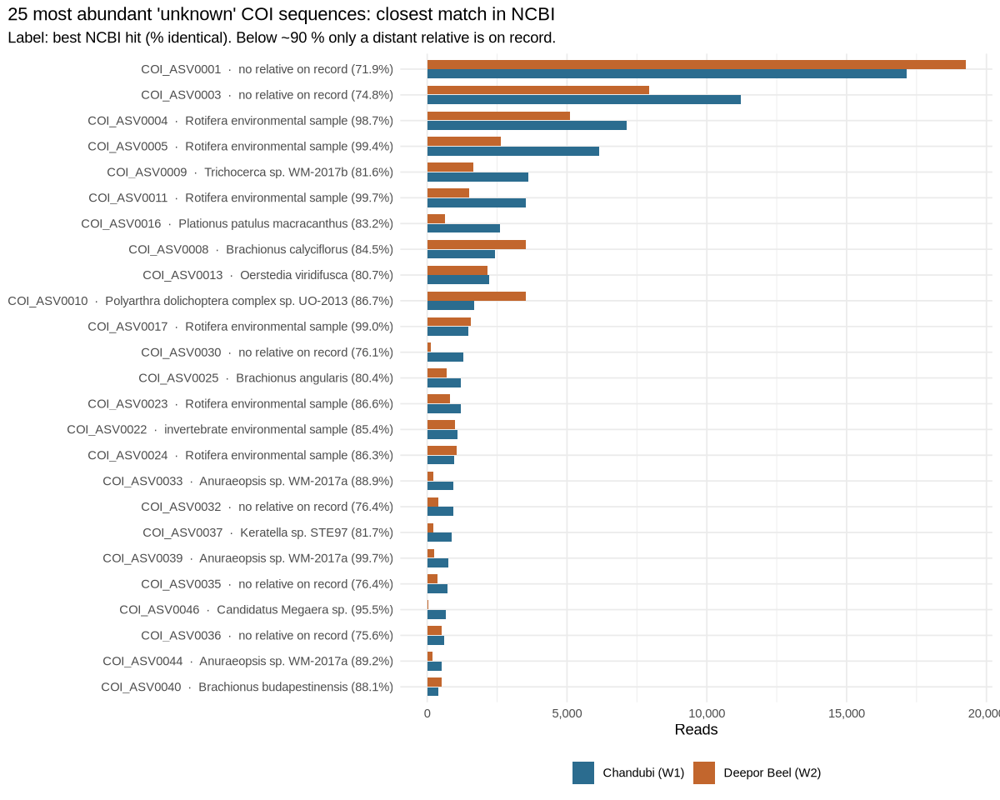
The 25 most abundant ‘unknowns’ and their closest match in GenBank, with % identity. Above ~97%: same species. 80–90%: a relative in the same group. Below 80%: no meaningful relative on record. For specialists — scripts, parameters & full tables
NCBI BLAST URL API, database
core_nt, megablast (E ≤ 1e-20, 5 hits per query); queries with no megablast hit re-run with blastn (word size 11). Best hit = highest identity × query cover. Lineage from NCBI Taxonomy (E-utilities). Hits below 80% identity are not assigned to any group.Script
scripts/06b_blast_unknowns.sh#!/usr/bin/env bash # Step 6b — The COI reference library could not place many abundant ASVs (< 85 % similar # to anything in it). Send the most abundant of these to NCBI BLAST (core_nt, remote) to # see what they are (NCBI BLAST URL API, megablast). Top 40 by total reads. set -euo pipefail cd "$(dirname "$0")/.." OUT=results/06_taxonomy N=40 # ASVs whose closest library match is < 85 % (or none), most abundant first awk -F'\t' 'NR==1 {for (i=1;i<=NF;i++) h[$i]=i; next} ($h["identity"]=="" || $h["identity"]<85) {print $h["asv"] "\t" $h["W1"]+$h["W2"]}' \ "$OUT/COI_taxonomy.tsv" | sort -t$'\t' -k2,2nr | head -n "$N" | cut -f1 > work/blast_ids.txt awk 'NR==FNR {want[">" $1]=1; next} /^>/ {keep = ($1 in want)} keep' \ work/blast_ids.txt results/04_curation/COI_asv_seqs_curated.fasta > work/blast_query.fasta python3 scripts/06b_ncbi_blast.py work/blast_query.fasta "$OUT/COI_blast_unknowns.tsv" 5 # Queries with no megablast hit: retry with sensitive blastn and append cut -f1 "$OUT/COI_blast_unknowns.tsv" | sort -u > work/blast_hit_ids.txt grep -vxFf work/blast_hit_ids.txt work/blast_ids.txt > work/blast_nohit_ids.txt || true if [ -s work/blast_nohit_ids.txt ]; then awk 'NR==FNR {want[">" $1]=1; next} /^>/ {keep = ($1 in want)} keep' \ work/blast_nohit_ids.txt results/04_curation/COI_asv_seqs_curated.fasta > work/blast_query2.fasta python3 scripts/06b_ncbi_blast.py work/blast_query2.fasta work/blast_sensitive.tsv 5 --sensitive cat work/blast_sensitive.tsv >> "$OUT/COI_blast_unknowns.tsv" fi Rscript scripts/06b_blast_summary.RScript
scripts/06b_ncbi_blast.py#!/usr/bin/env python3 """Step 6b helper — BLAST a FASTA file against NCBI core_nt through the NCBI BLAST URL API (submit, poll, fetch). Writes one tab-separated row per hit: qseqid, accession, pident, align_len, qcov, evalue, taxid, sciname, kingdom, phylum, class. Usage: 06b_ncbi_blast.py query.fasta out.tsv [max_hits] [--sensitive] --sensitive uses blastn (word size 11) instead of megablast, for distant matches. Appends kingdom, phylum and class of each hit from NCBI Taxonomy.""" import json import re import sys import time import urllib.parse import urllib.request URL = "https://blast.ncbi.nlm.nih.gov/Blast.cgi" query, out = sys.argv[1], sys.argv[2] max_hits = int(sys.argv[3]) if len(sys.argv) > 3 else 5 sensitive = "--sensitive" in sys.argv def call(params, data=False): enc = urllib.parse.urlencode(params).encode() req = urllib.request.Request(URL, data=enc if data else None, headers={"User-Agent": "Sahil_Metagenome/1.0 (amplicon taxonomy)"}) if not data: req.full_url = URL + "?" + enc.decode() with urllib.request.urlopen(req, timeout=120) as r: return r.read() fasta = open(query).read() qlen = {m.group(1): len(m.group(2).replace("\n", "")) for m in re.finditer(r">(\S+)[^\n]*\n([^>]*)", fasta)} if sensitive: mode = {"PROGRAM": "blastn", "DATABASE": "core_nt", "MEGABLAST": "off", "WORD_SIZE": 11} else: mode = {"PROGRAM": "blastn", "DATABASE": "core_nt", "MEGABLAST": "on"} resp = call({"CMD": "Put", **mode, "QUERY": fasta, "HITLIST_SIZE": max_hits, "EXPECT": "1e-20", "EMAIL": "", "TOOL": "Sahil_Metagenome"}, data=True).decode() rid = re.search(r"RID = (\S+)", resp).group(1) wait = int(re.search(r"RTOE = (\d+)", resp).group(1)) print(f"RID {rid}, estimated {wait}s", file=sys.stderr) time.sleep(max(wait, 30)) deadline = time.time() + 90 * 60 # give up after 90 minutes while True: if time.time() > deadline: sys.exit(f"BLAST RID {rid} did not finish within 90 minutes") status = call({"CMD": "Get", "RID": rid, "FORMAT_OBJECT": "SearchInfo"}).decode() s = re.search(r"Status=(\w+)", status).group(1) print(f"{time.strftime('%H:%M')} status {s}", file=sys.stderr, flush=True) if s == "READY": break if s in ("FAILED", "UNKNOWN"): sys.exit(f"BLAST {s} for RID {rid}") time.sleep(60) raw = call({"CMD": "Get", "RID": rid, "FORMAT_TYPE": "JSON2_S"}) doc = json.loads(raw) rows = [] for rep in doc["BlastOutput2"]: search = rep["report"]["results"]["search"] q = search["query_title"].split()[0] for hit in search.get("hits", []): d = hit["description"][0] hsp = hit["hsps"][0] rows.append([q, d.get("accession", ""), round(100 * hsp["identity"] / hsp["align_len"], 2), hsp["align_len"], round(100 * (hsp["query_to"] - hsp["query_from"] + 1) / qlen[q], 1), hsp["evalue"], str(d.get("taxid", "")), d.get("sciname", "")]) # Higher taxonomy (phylum, class) for each hit, from NCBI Taxonomy via E-utilities lineage = {} taxids = sorted({r[6] for r in rows if r[6]}) for i in range(0, len(taxids), 100): xml = urllib.request.urlopen( "https://eutils.ncbi.nlm.nih.gov/entrez/eutils/efetch.fcgi?db=taxonomy&id=" + ",".join(taxids[i:i + 100]), timeout=120).read().decode() for taxon in re.findall(r"<Taxon>\s*<TaxId>(\d+)</TaxId>(.*?)</LineageEx>", xml, re.S): tid, body = taxon ranks = dict((r, n) for n, r in re.findall( r"<ScientificName>([^<]+)</ScientificName>\s*<Rank>([^<]+)</Rank>", body)) lineage[tid] = (ranks.get("kingdom", ranks.get("superkingdom", "")), ranks.get("phylum", ""), ranks.get("class", "")) time.sleep(0.5) with open(out, "w") as fh: for r in rows: fh.write("\t".join(map(str, r + list(lineage.get(r[6], ("", "", ""))))) + "\n") print(f"wrote {out}", file=sys.stderr)Script
scripts/06b_blast_summary.R# Step 6b — Summarise NCBI BLAST results for the most abundant COI ASVs that the # COI reference library could not place. Best hit = highest % identity × query cover. # Interpretation: >= 97 % species-level match, >= 90 % same genus/family likely, # 80-90 % only a distant relative is on record (phylum-level hint only); # < 80 % nothing informative is on record. suppressPackageStartupMessages({ library(data.table); library(ggplot2) }) out <- "results/06_taxonomy" b <- fread(file.path(out, "COI_blast_unknowns.tsv"), header = FALSE, sep = "\t", quote = "", col.names = c("asv", "acc", "pident", "length", "qcovs", "evalue", "taxid", "name", "kingdom", "phylum", "class")) b[, group := fifelse(phylum != "", phylum, fifelse(kingdom != "", kingdom, "unknown"))] tax <- fread(file.path(out, "COI_taxonomy.tsv"), sep = "\t", quote = "") ids <- readLines("work/blast_ids.txt") best <- b[order(asv, -(pident * qcovs))][, .SD[1], by = asv] res <- merge(data.table(asv = ids), best, by = "asv", all.x = TRUE) res <- merge(res, tax[, .(asv, W1, W2, library_identity = identity, library_label = label)], by = "asv") res[, match := fcase(is.na(pident), "no hit in NCBI", pident >= 97 & qcovs >= 90, "species-level match", pident >= 90 & qcovs >= 80, "close relative (genus/family)", default = "distant relative only")] res[is.na(group), group := "no hit"] # Below 80 % identity the best hit is not informative even about the phylum res[!is.na(pident) & pident < 80, group := "no relative >= 80 %"] setorder(res, -W1) res[, reads_pct_W1 := round(100 * W1 / sum(tax$W1), 2)][, reads_pct_W2 := round(100 * W2 / sum(tax$W2), 2)] fwrite(res[, .(asv, W1, W2, reads_pct_W1, reads_pct_W2, library_identity, ncbi_best_hit = name, ncbi_phylum = group, ncbi_class = class, ncbi_identity = pident, ncbi_query_cover = qcovs, accession = acc, match)], file.path(out, "COI_blast_unknowns_summary.tsv"), sep = "\t") # Reads in these ASVs, by NCBI group and match quality agg <- res[, .(W1 = sum(W1), W2 = sum(W2)), by = .(group, match)] fwrite(agg[order(-(W1 + W2))], file.path(out, "COI_blast_unknowns_by_group.tsv"), sep = "\t") res[, lab := sprintf("%s · %s (%s%%)", asv, fcase(is.na(name), "no hit", pident < 80, "no relative on record", default = name), ifelse(is.na(pident), "–", format(round(pident, 1))))] res[, lab := factor(lab, levels = rev(lab))] pl <- melt(res[1:min(25, .N)], id.vars = c("lab", "match"), measure.vars = c("W1", "W2"), variable.name = "sample", value.name = "reads") pl[, site := c(W1 = "Chandubi (W1)", W2 = "Deepor Beel (W2)")[sample]] p <- ggplot(pl, aes(reads, lab, fill = site)) + geom_col(position = position_dodge(width = 0.75), width = 0.7) + scale_fill_manual(values = c("#2b6c8f", "#c2662d")) + scale_x_continuous(labels = scales::comma) + labs(x = "Reads", y = NULL, fill = NULL, title = "25 most abundant 'unknown' COI sequences: closest match in NCBI", subtitle = "Label: best NCBI hit (% identical). Below ~90 % only a distant relative is on record.") + theme_minimal(base_size = 11) + theme(legend.position = "bottom", plot.title.position = "plot") ggsave("docs/img/06b_blast_unknowns.png", p, width = 10, height = 8, dpi = 120) print(res[, .(asv, W1, W2, library_identity, name, group, pident, qcovs, match)]) print(agg[order(-(W1 + W2))])group match W1 W2 no relative >= 80 % distant relative only 31,903 28,624 Rotifera distant relative only 18,220 14,055 Rotifera species-level match 19,255 11,123 Nemertea distant relative only 2,205 2,149 Metazoa distant relative only 1,082 1,006 Pseudomonadota close relative (genus/family) 907 76 unknown distant relative only 414 305 Oomycota distant relative only 396 188 Basidiomycota distant relative only 168 209 Arthropoda distant relative only 108 181 Discosea distant relative only 55 183 results/06_taxonomy/COI_blast_unknowns_by_group.tsv
Output files
Step 8
How diverse is each lake?
In plain wordsDiversity has two sides: how many kinds there are, and how evenly they are spread. A lake with 100 kinds where one makes up 90% of everything is less diverse in practice than one with 100 equally common kinds. To compare fairly, both lakes are first cut down to the same number of reads — like comparing two birdwatchers who each watched for exactly one hour.
We report diversity as an effective number of types: “this community is as diverse as one with N equally common types”. Counting every type gives the largest number; counting only the common ones gives a smaller one.
436 vs 68518S types: Chandubi vs Deepor329 vs 281COI types: Chandubi vs Deepor14.5% / 77.1%types shared (18S / COI)The two barcodes tell opposite stories. For algae, protists and fungi (18S), Deepor is clearly richer — about 122 effective types against 74 in Chandubi. For zooplankton (COI), Chandubi is slightly richer and more even (43 vs 31), because Deepor is more dominated by a few rotifers.
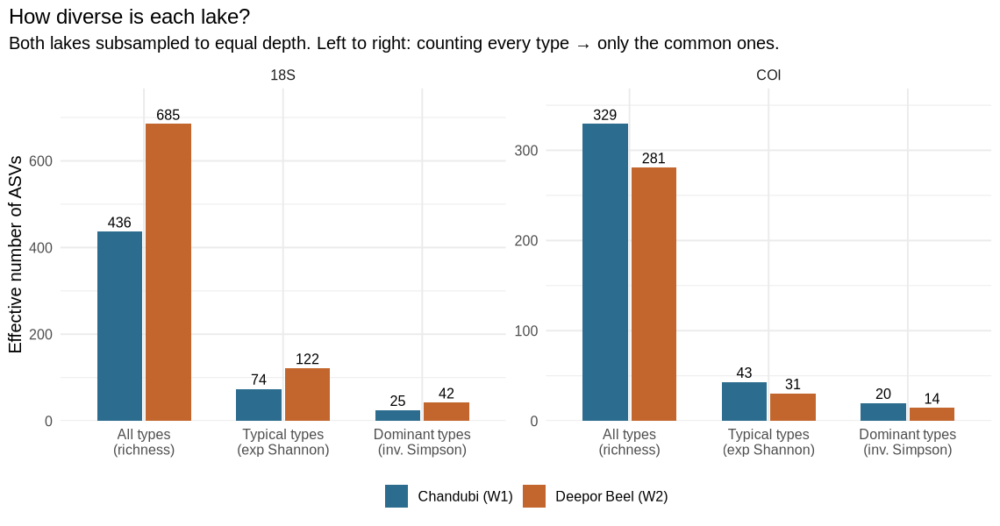
Diversity of each lake, at three levels of strictness. Numbers are the effective number of equally common types. Looking at what the lakes share: by 18S, most types live in only one of the two lakes — even at genus level only 24.5% of named genera occur in both. By COI, most types are shared.
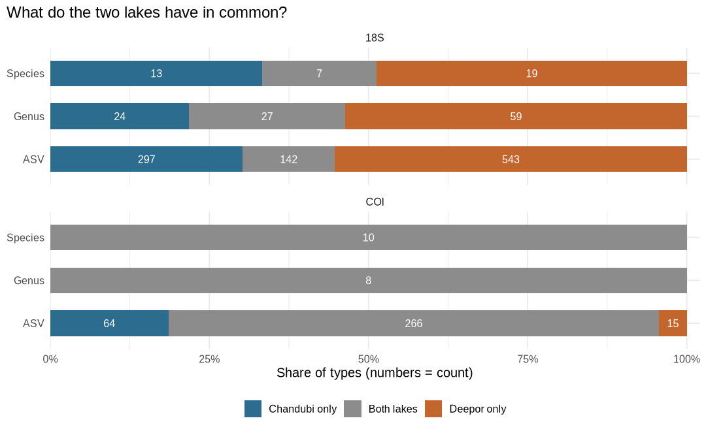
Share of types found only in Chandubi, in both lakes, or only in Deepor — counted as exact sequences (ASV), named genera and named species. COI genus and species counts are small because few COI sequences could be named. For specialists — scripts, parameters & full tables
Rarefied to the smaller lake’s depth per marker (18S 81,828; COI 102,761 reads), averaged over 100 random subsamples. Hill numbers: q0 = richness, q1 = exp(Shannon), q2 = inverse Simpson. Chao1 is not reported because DADA2 removes singletons. Jaccard and Bray–Curtis at genus/species level use only reads named at that level. One sample per lake: no significance tests are possible.
Script
scripts/08_diversity.R# Step 8 — Diversity. # (a) Alpha diversity per lake, after rarefying both lakes to the same depth # (mean of 100 random subsamples): observed ASVs, Shannon, Simpson, Pielou's evenness, # and Hill numbers (q0 = richness, q1 = exp(Shannon), q2 = inverse Simpson) — # the "effective number" of equally common types. # (b) Overlap between lakes at ASV, genus and species level (shared / unique, Jaccard, # Bray–Curtis). One sample per lake: descriptive only, no significance tests. # Chao1 is not reported: DADA2 discards singletons, which Chao1 depends on. dir.create("work/plots", recursive = TRUE, showWarnings = FALSE) suppressPackageStartupMessages({ library(data.table); library(ggplot2); library(vegan) }) out <- "results/08_diversity" dir.create(out, recursive = TRUE, showWarnings = FALSE) site_of <- c(W1 = "Chandubi (W1)", W2 = "Deepor Beel (W2)") set.seed(2026) tax <- list(`18S` = fread("results/06_taxonomy/18S_taxonomy.tsv", sep = "\t", quote = "", na.strings = c("", "NA")), COI = fread("results/06_taxonomy/COI_taxonomy.tsv", sep = "\t", quote = "", na.strings = c("", "NA"))) # ---- (a) alpha diversity ---- alpha <- rbindlist(lapply(names(tax), function(m) { mat <- t(as.matrix(tax[[m]][, .(W1, W2)])) depth <- min(rowSums(mat)) reps <- replicate(100, { r <- rrarefy(mat, depth) H <- diversity(r, "shannon"); S <- specnumber(r) cbind(observed = S, shannon = H, simpson = diversity(r, "simpson"), pielou = H / log(S), hill_q1 = exp(H), hill_q2 = diversity(r, "invsimpson")) }, simplify = "array") mean_mat <- apply(reps, c(1, 2), mean) data.table(marker = m, sample = rownames(mat), rarefied_to = depth, round(mean_mat, 3)) })) fwrite(alpha, file.path(out, "alpha_diversity.tsv"), sep = "\t") hl <- melt(alpha, id.vars = c("marker", "sample"), measure.vars = c("observed", "hill_q1", "hill_q2"), variable.name = "q", value.name = "value") hl[, q := factor(q, levels = c("observed", "hill_q1", "hill_q2"), labels = c("All types\n(richness)", "Typical types\n(exp Shannon)", "Dominant types\n(inv. Simpson)"))] hl[, site := site_of[sample]] p1 <- ggplot(hl, aes(q, value, fill = site)) + geom_col(position = position_dodge(width = 0.7), width = 0.65) + geom_text(aes(label = round(value)), position = position_dodge(width = 0.7), vjust = -0.4, size = 3.4) + facet_wrap(~marker, scales = "free_y") + scale_fill_manual(values = c("#2b6c8f", "#c2662d")) + scale_y_continuous(expand = expansion(mult = c(0, 0.12))) + labs(x = NULL, y = "Effective number of ASVs", fill = NULL, title = "How diverse is each lake?", subtitle = "Both lakes subsampled to equal depth. Left to right: counting every type → only the common ones.") + theme_minimal(base_size = 12) + theme(legend.position = "bottom", plot.title.position = "plot") saveRDS(p1, "work/plots/08_alpha.rds") ggsave("docs/img/08_alpha.png", p1, width = 9.5, height = 5, dpi = 120) # ---- (b) overlap at several levels ---- overlap <- rbindlist(lapply(names(tax), function(m) { d <- tax[[m]] rbindlist(lapply(c("ASV", "Genus", "Species"), function(level) { key <- if (level == "ASV") d$asv else d[[level]] agg <- d[!is.na(key), .(W1 = sum(W1), W2 = sum(W2)), by = .(k = key[!is.na(key)])] if (nrow(agg) == 0) return(NULL) mat <- t(as.matrix(agg[, .(W1, W2)])) data.table(marker = m, level = level, chandubi_only = sum(agg$W1 > 0 & agg$W2 == 0), deepor_only = sum(agg$W1 == 0 & agg$W2 > 0), shared = sum(agg$W1 > 0 & agg$W2 > 0), total = nrow(agg), pct_shared = round(100 * sum(agg$W1 > 0 & agg$W2 > 0) / nrow(agg), 1), jaccard_similarity = round(1 - as.numeric(vegdist(mat, "jaccard", binary = TRUE)), 3), bray_curtis_dissimilarity = round(as.numeric(vegdist(decostand(mat, "total"), "bray")), 3)) })) })) fwrite(overlap, file.path(out, "overlap_by_level.tsv"), sep = "\t") ol <- melt(overlap, id.vars = c("marker", "level"), measure.vars = c("chandubi_only", "shared", "deepor_only"), variable.name = "where", value.name = "n") ol[, where := factor(where, levels = c("chandubi_only", "shared", "deepor_only"), labels = c("Chandubi only", "Both lakes", "Deepor only"))] ol[, pct := 100 * n / sum(n), by = .(marker, level)] ol[, level := factor(level, levels = c("ASV", "Genus", "Species"))] p2 <- ggplot(ol, aes(pct, level, fill = where)) + geom_col(width = 0.6, position = position_stack(reverse = TRUE)) + geom_text(aes(label = ifelse(n > 0, n, "")), position = position_stack(vjust = 0.5, reverse = TRUE), colour = "white", size = 3.4) + facet_wrap(~marker, ncol = 1) + scale_fill_manual(values = c("#2b6c8f", "#8c8c8c", "#c2662d")) + scale_x_continuous(labels = function(x) paste0(x, "%"), expand = expansion(mult = c(0, 0.02))) + labs(x = "Share of types (numbers = count)", y = NULL, fill = NULL, title = "What do the two lakes have in common?") + theme_minimal(base_size = 12) + theme(legend.position = "bottom", plot.title.position = "plot") saveRDS(p2, "work/plots/08_overlap.rds") ggsave("docs/img/08_overlap.png", p2, width = 9, height = 5.5, dpi = 120) print(alpha); print(overlap)marker sample rarefied to observed shannon simpson pielou Hill q1 Hill q2 18S W1 81,828 436.48 4.303 0.96 0.708 73.938 25.157 18S W2 81,828 685 4.802 0.976 0.735 121.724 42.208 COI W1 102,761 329.15 3.762 0.949 0.649 43.053 19.771 COI W2 102,761 281 3.418 0.93 0.606 30.502 14.346 results/08_diversity/alpha_diversity.tsv
marker level Chandubi only Deepor only shared total % shared Jaccard Bray–Curtis 18S ASV 297 543 142 982 14.5 0.145 0.955 18S Genus 24 59 27 110 24.5 0.245 0.875 18S Species 13 19 7 39 17.9 0.179 0.972 COI ASV 64 15 266 345 77.1 0.771 0.235 COI Genus 0 0 8 8 100 1 0.083 COI Species 0 0 10 10 100 1 0.172 Step 9
Reading the lakes’ ecology
In plain wordsA list of names becomes useful when we ask what those organisms do: who makes food from sunlight (algae), who eats (protozoa, animals), who recycles or infects (fungi, water moulds, parasites). Some organisms are also well-known indicators — their presence hints at how nutrient-rich or polluted water is.
Who does what (18S)
In Chandubi, about 29% of 18S reads come from algae — green algae and diatoms above all — and another 24% from free-living protozoa: a community built on producers and grazers. In Deepor, algae make up 27% (mostly desmids), while fungi (24%) and water moulds (9%) take a much larger share — a community leaning towards decomposition and parasitism, as expected where dead plant material is plentiful.
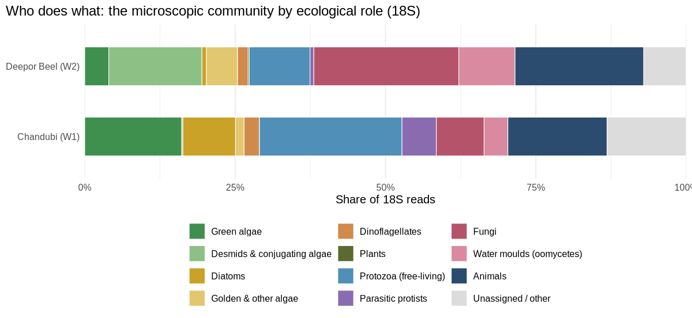
Share of 18S reads by ecological role in each lake. Zooplankton groups (COI, including the GenBank look-ups)
Rotifers make up about 60% (Chandubi) and 65% (Deepor) of COI reads. Crustaceans are scarce in this barcode — copepods, ostracods and insects together are under 1%. About a fifth of reads remain unknown, the largest part being the single unidentified organism found in Step 7.
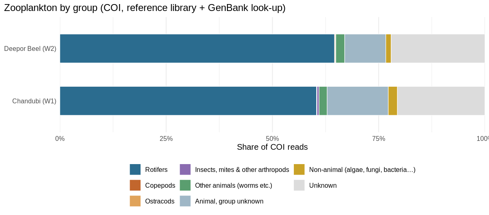
Share of COI reads by animal group. The main players

The 30 most abundant named genera from both barcodes. Darker = more reads. Chandubi is marked by diatoms (Cyclotella, Aulacoseira) and green algae (Desmodesmus, Chlamydomonas); Deepor by water moulds (Aphanomyces), chytrid fungi (Rhizophydium), desmids (Staurastrum, Cosmarium) and golden algae. The rotifers Brachionus and Keratella are abundant in both. Two barcodes see different animals
Of the animal genera named, 14 were found only by 18S (flatworms, gastrotrichs, oligochaete worms, copepods Eucyclops and Microcyclops), 5 only by COI (the main rotifers Brachionus, Keratella, Polyarthra, Asplanchna, and the mayfly Cloeon), and just 1 by both (Mesocyclops). Using two barcodes roughly doubled the animal list — the main argument for a multi-marker design.
Indicator organisms
Several organisms that ecologists use as water-quality signals were found. The picture is mixed rather than simple:
- Nutrient-rich signals in both lakes: the rotifers Brachionus and Keratella tropica are abundant everywhere and somewhat more so in Deepor. Chandubi additionally holds diatoms typical of enriched water (Cyclotella meneghiniana, Nitzschia palea, Aulacoseira granulata).
- Deepor’s desmids (Staurastrum, Cosmarium) are a group often linked to plant-rich, less enriched water — fitting a macrophyte-covered wetland — alongside chytrid parasites of algae.
These are pointers rather than verdicts; read together they are consistent with nutrient enrichment, strongest at Deepor beside the dumping ground.
For specialists — scripts, parameters & full tables
18S roles are assigned from PR2 division/class. COI groups use the reference-library phylum where available and the NCBI BLAST phylum (≥ 80% identity) for the 40 looked-up ASVs. Indicator notes in scripts/indicator_taxa.tsv are general associations from the water-quality literature, to be confirmed with regional sources before citing.
Script
scripts/09_ecology.R# Step 9 — Ecological reading of the named community. # (a) 18S reads grouped by ecological role (algae by type, fungi, water moulds, # protozoa, parasites, animals). # (b) COI reads grouped by animal group, using the reference-library name where # available and the NCBI BLAST phylum (>= 80 % identity) for the 40 looked-up unknowns. # (c) Heatmap of the most abundant named genera from both markers. # (d) Marker complementarity: which animal genera each barcode detected. # (e) Indicator taxa: genera/species commonly used as water-quality indicators, with # their share in each lake. Interpretation notes are general, not site-specific evidence. dir.create("work/plots", recursive = TRUE, showWarnings = FALSE) suppressPackageStartupMessages({ library(data.table); library(ggplot2) }) out <- "results/09_ecology" dir.create(out, recursive = TRUE, showWarnings = FALSE) site_of <- c(W1 = "Chandubi (W1)", W2 = "Deepor Beel (W2)") t18 <- fread("results/06_taxonomy/18S_taxonomy.tsv", sep = "\t", quote = "", na.strings = c("", "NA")) tco <- fread("results/06_taxonomy/COI_taxonomy.tsv", sep = "\t", quote = "", na.strings = c("", "NA")) blast <- fread("results/06_taxonomy/COI_blast_unknowns_summary.tsv", sep = "\t", quote = "", na.strings = c("", "NA")) pct <- function(x) 100 * x / sum(x) # ---- (a) 18S ecological roles ---- diatoms <- c("Mediophyceae", "Coscinodiscophyceae", "Bacillariophyceae") other_algae <- c("Chrysophyceae", "Eustigmatophyceae", "Xanthophyceae") protozoa <- c("Rhizaria-Cercozoa", "Alveolata-Ciliophora", "Stramenopiles-Bigyra", "Tubulinea", "Evosea", "Opisthokonta-Choanoflagellata", "Centroplasthelida", "Ancyromonadida", "Rigifilida", "Alveolata-Chrompodellids") parasites <- c("Alveolata-Perkinsea", "Alveolata-Apicomplexa", "Opisthokonta-Ichthyosporea") t18[, role := fcase( Division == "Chlorophyta", "Green algae", Division == "Streptophyta" & Class == "Zygnemophyceae", "Desmids & conjugating algae", Division == "Streptophyta", "Plants", Class %in% diatoms, "Diatoms", Class %in% other_algae | Division %in% c("Glaucophyta", "Cryptophyta", "Haptophyta", "Rhodophyta"), "Golden & other algae", Division == "Alveolata-Dinoflagellata", "Dinoflagellates", Division == "Opisthokonta-Fungi", "Fungi", Class %in% c("Peronosporomycetes", "Hyphochytriomyceta"), "Water moulds (oomycetes)", Division %in% protozoa, "Protozoa (free-living)", Division %in% parasites, "Parasitic protists", Division == "Opisthokonta-Metazoa", "Animals", default = "Unassigned / other")] roles <- t18[, .(W1 = sum(W1), W2 = sum(W2)), by = role][, `:=`(W1 = round(pct(W1), 2), W2 = round(pct(W2), 2))] role_levels <- c("Green algae", "Desmids & conjugating algae", "Diatoms", "Golden & other algae", "Dinoflagellates", "Plants", "Protozoa (free-living)", "Parasitic protists", "Fungi", "Water moulds (oomycetes)", "Animals", "Unassigned / other") roles <- roles[order(match(role, role_levels))] fwrite(roles, file.path(out, "18S_ecological_roles.tsv"), sep = "\t") fwrite(t18[, .(asv, W1, W2, role, Division, Class, Genus, Species)], file.path(out, "18S_asv_roles.tsv"), sep = "\t") role_cols <- c("Green algae" = "#3f8f4f", "Desmids & conjugating algae" = "#8cc084", "Diatoms" = "#c9a227", "Golden & other algae" = "#e3c770", "Dinoflagellates" = "#d08a4a", "Plants" = "#5b6b2f", "Protozoa (free-living)" = "#4f8fb8", "Parasitic protists" = "#8a6bb0", "Fungi" = "#b5536b", "Water moulds (oomycetes)" = "#d98aa0", "Animals" = "#2b4c6f", "Unassigned / other" = "#dcdcdc") rl <- melt(roles, id.vars = "role", variable.name = "sample", value.name = "pct") rl[, site := site_of[sample]][, role := factor(role, levels = rev(role_levels))] p1 <- ggplot(rl, aes(pct, site, fill = role)) + geom_col(width = 0.55, colour = "white", linewidth = 0.3) + scale_fill_manual(values = role_cols, breaks = role_levels) + scale_x_continuous(labels = function(x) paste0(x, "%"), expand = c(0, 0)) + labs(x = "Share of 18S reads", y = NULL, fill = NULL, title = "Who does what: the microscopic community by ecological role (18S)") + theme_minimal(base_size = 12) + theme(legend.position = "bottom", plot.title.position = "plot") + guides(fill = guide_legend(ncol = 3)) saveRDS(p1, "work/plots/09_18S_roles.rds") ggsave("docs/img/09_18S_roles.png", p1, width = 10, height = 4.6, dpi = 120) # ---- (b) COI animal groups (library + BLAST) ---- bl <- blast[ncbi_identity >= 80, .(asv, blast_phylum = ncbi_phylum, blast_class = ncbi_class)] tco <- merge(tco, bl, by = "asv", all.x = TRUE) tco[, phylum_final := fifelse(!is.na(Phylum), Phylum, blast_phylum)] tco[, class_final := fifelse(!is.na(Class), Class, blast_class)] tco[, group := fcase( phylum_final == "Rotifera", "Rotifers", phylum_final == "Arthropoda" & (grepl("Hexanauplia|Copepoda", class_final) | Genus %in% "Mesocyclops"), "Copepods", phylum_final == "Arthropoda" & class_final %in% "Ostracoda", "Ostracods", phylum_final == "Arthropoda", "Insects, mites & other arthropods", phylum_final %in% c("Nemertea", "Nematoda", "Mollusca", "Annelida", "Gastrotricha", "Platyhelminthes", "Metazoa"), "Other animals (worms etc.)", !is.na(phylum_final), "Non-animal (algae, fungi, bacteria…)", Kingdom %in% "Metazoa", "Animal, group unknown", default = "Unknown")] grp <- tco[, .(W1 = sum(W1), W2 = sum(W2)), by = group][, `:=`(W1 = round(pct(W1), 2), W2 = round(pct(W2), 2))] grp_levels <- c("Rotifers", "Copepods", "Ostracods", "Insects, mites & other arthropods", "Other animals (worms etc.)", "Animal, group unknown", "Non-animal (algae, fungi, bacteria…)", "Unknown") grp <- grp[order(match(group, grp_levels))] fwrite(grp, file.path(out, "COI_animal_groups.tsv"), sep = "\t") fwrite(tco[, .(asv, W1, W2, group, phylum_final, class_final, Genus, Species, identity)], file.path(out, "COI_asv_groups.tsv"), sep = "\t") grp_cols <- c("Rotifers" = "#2b6c8f", "Copepods" = "#c2662d", "Ostracods" = "#e0a35a", "Insects, mites & other arthropods" = "#8a6bb0", "Other animals (worms etc.)" = "#5a9e6f", "Animal, group unknown" = "#9fb7c6", "Non-animal (algae, fungi, bacteria…)" = "#c9a227", "Unknown" = "#dcdcdc") gl <- melt(grp, id.vars = "group", variable.name = "sample", value.name = "pct") gl[, site := site_of[sample]][, group := factor(group, levels = rev(grp_levels))] p2 <- ggplot(gl, aes(pct, site, fill = group)) + geom_col(width = 0.55, colour = "white", linewidth = 0.3) + scale_fill_manual(values = grp_cols, breaks = grp_levels) + scale_x_continuous(labels = function(x) paste0(x, "%"), expand = c(0, 0)) + labs(x = "Share of COI reads", y = NULL, fill = NULL, title = "Zooplankton by group (COI, reference library + GenBank look-up)") + theme_minimal(base_size = 12) + theme(legend.position = "bottom", plot.title.position = "plot") + guides(fill = guide_legend(ncol = 3)) saveRDS(p2, "work/plots/09_COI_groups.rds") ggsave("docs/img/09_COI_groups.png", p2, width = 10, height = 4.4, dpi = 120) # ---- (c) heatmap of top genera, both markers ---- gen <- rbind(t18[!is.na(Genus), .(marker = "18S", Genus, W1, W2, role)], tco[!is.na(Genus), .(marker = "COI", Genus, W1, W2, role = group)]) tot <- list(`18S` = c(W1 = sum(t18$W1), W2 = sum(t18$W2)), COI = c(W1 = sum(tco$W1), W2 = sum(tco$W2))) gen[, `:=`(W1p = 100 * W1 / tot[[marker]][["W1"]], W2p = 100 * W2 / tot[[marker]][["W2"]]), by = marker] g <- gen[, .(W1 = sum(W1p), W2 = sum(W2p), role = role[1]), by = .(marker, Genus)] topg <- g[order(-(pmax(W1, W2)))][1:30] fwrite(topg[, `:=`(W1 = round(W1, 3), W2 = round(W2, 3))], file.path(out, "top_genera.tsv"), sep = "\t") hm <- melt(topg, id.vars = c("marker", "Genus", "role"), measure.vars = c("W1", "W2"), variable.name = "sample", value.name = "pct") hm[, site := factor(site_of[sample], levels = site_of)] hm[, lab := sprintf("%s (%s · %s)", gsub("_", " ", Genus), marker, role)] ord <- topg[order(W1 - W2), sprintf("%s (%s · %s)", gsub("_", " ", Genus), marker, role)] hm[, lab := factor(lab, levels = ord)] p3 <- ggplot(hm, aes(site, lab, fill = pmax(pct, 0.001))) + geom_tile(colour = "white", linewidth = 0.6) + geom_text(aes(label = ifelse(pct >= 0.01, sprintf("%.2f", pct), "–"), colour = ifelse(pct >= 0.5, "white", "black")), size = 3.1) + scale_colour_identity() + scale_fill_gradientn(colours = c("#f7f7f2", "#cfe3ec", "#7fb2cc", "#2b6c8f", "#163e57"), trans = "log10", labels = function(x) paste0(x, "%"), name = "% of reads") + scale_x_discrete(position = "top") + labs(x = NULL, y = NULL, title = "The 30 most abundant named genera", subtitle = "% of all reads of that barcode in each lake. Top: Chandubi-leaning; bottom: Deepor-leaning") + theme_minimal(base_size = 11) + theme(panel.grid = element_blank(), plot.title.position = "plot") saveRDS(p3, "work/plots/09_genera_heatmap.rds") ggsave("docs/img/09_genera_heatmap.png", p3, width = 9, height = 9.5, dpi = 120) # ---- (d) marker complementarity for animals ---- a18 <- t18[Division == "Opisthokonta-Metazoa" & !is.na(Genus), .(phylum = na.omit(Class)[1]), by = Genus] aco <- tco[Kingdom %in% "Metazoa" & !is.na(Genus), .(phylum = na.omit(Phylum)[1]), by = Genus] comp <- merge(a18[, .(Genus, phylum_18S = phylum, in_18S = TRUE)], aco[, .(Genus, phylum_COI = phylum, in_COI = TRUE)], by = "Genus", all = TRUE) comp[is.na(in_18S), in_18S := FALSE][is.na(in_COI), in_COI := FALSE] comp[, group := fifelse(!is.na(phylum_18S), phylum_18S, phylum_COI)] comp[, detected_by := fcase(in_18S & in_COI, "both", in_18S, "18S only", default = "COI only")] fwrite(comp[order(detected_by, group, Genus), .(Genus, group, detected_by)], file.path(out, "animal_genera_by_marker.tsv"), sep = "\t") phyla <- rbind(t18[Division == "Opisthokonta-Metazoa" & !is.na(Class), .(marker = "18S", phylum = Class, W1, W2)], tco[!is.na(phylum_final) & !group %in% c("Non-animal (algae, fungi, bacteria…)", "Unknown"), .(marker = "COI", phylum = phylum_final, W1, W2)]) fwrite(phyla[, .(asvs = .N, reads = sum(W1 + W2)), by = .(phylum, marker)][order(phylum, marker)], file.path(out, "animal_phyla_by_marker.tsv"), sep = "\t") # ---- (e) indicator taxa ---- ind <- fread("scripts/indicator_taxa.tsv", sep = "\t", quote = "") lookup <- function(level, name, marker) { d <- if (marker == "18S") t18 else tco hit <- d[[level]] %in% name c(W1 = 100 * sum(d$W1[hit]) / sum(d$W1), W2 = 100 * sum(d$W2[hit]) / sum(d$W2)) } ind_res <- rbindlist(lapply(seq_len(nrow(ind)), function(i) { v <- lookup(ind$level[i], ind$name[i], ind$marker[i]) data.table(ind[i], chandubi_pct = round(v[["W1"]], 3), deepor_pct = round(v[["W2"]], 3)) })) fwrite(ind_res, file.path(out, "indicator_taxa.tsv"), sep = "\t") print(roles); print(grp); print(comp[, .N, by = detected_by]); print(ind_res[, .(name, marker, chandubi_pct, deepor_pct)])role W1 W2 Green algae 16.13 4 Desmids & conjugating algae 0.19 15.49 Diatoms 8.75 0.73 Golden & other algae 1.43 5.19 Dinoflagellates 2.55 1.76 Plants 0 0.2 Protozoa (free-living) 23.69 10.08 Parasitic protists 5.71 0.64 Fungi 7.94 24.1 Water moulds (oomycetes) 3.96 9.35 Animals 16.49 21.39 Unassigned / other 13.16 7.06 results/09_ecology/18S_ecological_roles.tsv
group W1 W2 Rotifers 60.39 64.63 Copepods 0.01 0 Ostracods 0.09 0.18 Insects, mites & other arthropods 0.49 0.11 Other animals (worms etc.) 1.89 2.09 Animal, group unknown 14.39 9.67 Non-animal (algae, fungi, bacteria…) 2.14 1.26 Unknown 20.59 22.06 results/09_ecology/COI_animal_groups.tsv
name level marker group general association Chandubi % Deepor % Brachionus Genus COI Rotifer Genus widely used in the Brachionus:Trichocerca ratio; dominance usually read as nutrient-rich (eutrophic) water 14.834 22.747 Brachionus_calyciflorus Species COI Rotifer Common in eutrophic, organically enriched waters 1.151 1.735 Brachionus_caudatus Species COI Rotifer Warm-water species typical of tropical nutrient-rich ponds and lakes 4.528 7.439 Keratella_tropica Species COI Rotifer Warm-water species often abundant in eutrophic tropical lakes 1.111 2.358 Polyarthra_vulgaris Species COI Rotifer Widespread, tolerant of a broad range of conditions 0.907 0.539 Filinia_longiseta Species 18S Rotifer Frequently associated with eutrophic, turbid waters 1.366 0 Mesocyclops Genus 18S Copepod Predatory cyclopoid copepod common in tropical lakes and ponds 1.846 0.572 Cyclotella_meneghiniana Species 18S Diatom Tolerant of high nutrients and organic pollution; common in eutrophic waters 1.943 0.001 Nitzschia_palea Species 18S Diatom Classic pollution-tolerant diatom used in diatom water-quality indices 0.633 0.034 Aulacoseira_granulata Species 18S Diatom Typical of eutrophic, well-mixed and turbid waters 0.27 0 Staurastrum Genus 18S Desmid Desmid genus; desmid-rich communities are often linked to macrophyte-rich, less enriched waters 0.001 3.014 Cosmarium Genus 18S Desmid Desmid genus with species spanning clean to moderately enriched waters 0 1.229 Gonyostomum_semen Species 18S Raphidophyte Nuisance flagellate of humic, brown-water lakes; can form blooms 0 0.062 Botryococcus_braunii Species 18S Green alga Colonial oil-rich green alga of lakes and ponds; can form surface blooms 0 0.303 Rhizophydium Genus 18S Chytrid fungus Parasite of phytoplankton (including diatoms and green algae) 0 3.414 results/09_ecology/indicator_taxa.tsv
Genus group detected by Aeolosoma Annelida 18S only Eucyclops Arthropoda 18S only Microcyclops Arthropoda 18S only Chaetonotus Gastrotricha 18S only Lepidodermella Gastrotricha 18S only Dugesia Platyhelminthes 18S only Gieysztoria Platyhelminthes 18S only Mesostoma Platyhelminthes 18S only Rhynchomesostoma Platyhelminthes 18S only Stenostomum Platyhelminthes 18S only Strongylostoma Platyhelminthes 18S only Filinia Rotifera 18S only Hexarthra Rotifera 18S only Microcodon Rotifera 18S only Cloeon Arthropoda COI only Asplanchna Rotifera COI only Brachionus Rotifera COI only Keratella Rotifera COI only Polyarthra Rotifera COI only Mesocyclops Arthropoda both results/09_ecology/animal_genera_by_marker.tsv
Output files
Step 10
A second look at the unknowns — through their proteins
In plain wordsCOI is a recipe for a protein. Over evolution the DNA “spelling” changes much faster than the protein it makes — many different spellings give the same protein. So two organisms whose DNA looks only 75% alike can still have very similar proteins, which reveals their family ties. We translated the unknown sequences into protein and compared them with 2.2 million known COI proteins.
22 of 32unknowns that are rotifers29% / 25%COI reads they add (Chandubi / Deepor)86%best protein match, top unknownMost unknowns are rotifers. Their proteins are 89–98% identical to known rotifers such as Trichocerca, Euchlanis, Filinia, Lecane and Brachionus — confirming that the lakes hold many rotifer species whose DNA has never been catalogued. A few others point to mites, an ostracod, a freshwater sponge and an amoeba.
The most common COI signature remains a mystery. COI_ASV0001’s protein is closest to a nematode (roundworm, 86% identical) but almost as close to brown-algae-like stramenopiles (~81%). The evidence does not settle which group it belongs to — it may be an organism from a group that has barely been sequenced. Isolating and sequencing it (or its full mitochondrial genome) would be needed to name it.
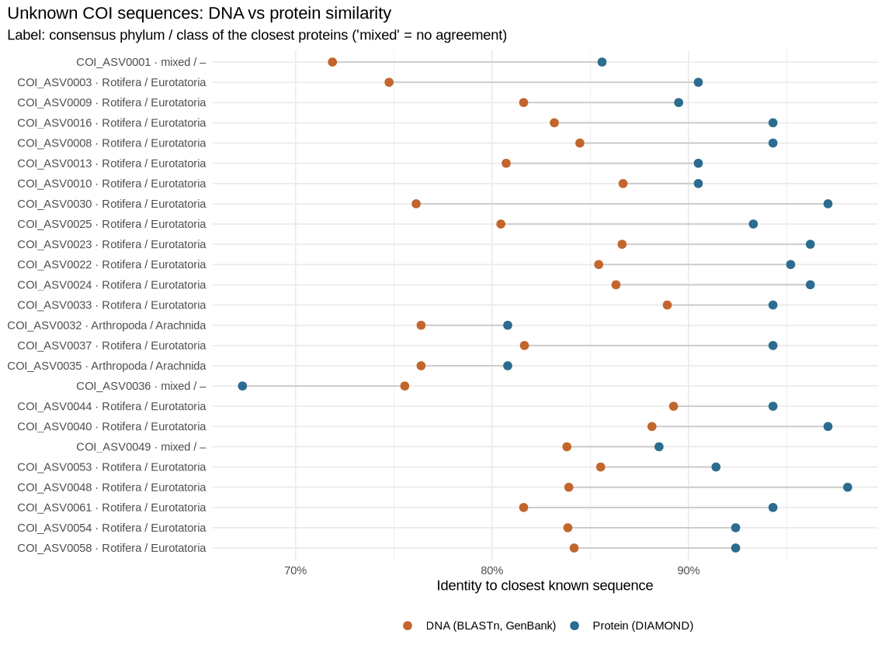
For each unknown: similarity to the closest known sequence at DNA level (orange) and protein level (blue). Protein similarity is much higher, which is what lets us place most of them. Label: group agreed by the closest proteins. For specialists — scripts, parameters & full tables
The Eukaryote CO1 Reference Set v5.1.0 was translated with SeqKit (genetic code 5; for each sequence the frame with fewest stop codons) and indexed with DIAMOND v2.2.8. Queries: the COI ASVs from step 7 without a ≥ 90% GenBank DNA match. DIAMOND blastx
--ultra-sensitive, query genetic code 5, E ≤ 1e-10, 25 targets. Consensus phylum/class: ≥ 3 hits within 95% of the best bit score and ≥ 70% agreement. NCBI’s online BLASTx was tried first but its queue did not return results.Script
scripts/10_protein_search.sh#!/usr/bin/env bash # Step 10 — Protein-level identification of COI ASVs that have no close DNA match in GenBank # (best BLASTn identity < 90 %). DNA changes faster than the protein it encodes, so comparing # translated sequences can still place a sequence in its phylum or class when DNA similarity # is too low to say anything. # Reference: the Eukaryote CO1 Reference Set (step 6) translated to protein — each sequence in # the reading frame with fewest stop codons, invertebrate mitochondrial code (table 5). # Search: DIAMOND blastx (local; NCBI's online BLASTx queue proved unusable for this run). set -euo pipefail cd "$(dirname "$0")/.." OUT=results/10_protein REFS=work/refs mkdir -p "$OUT" if [ ! -s "$REFS/COIv5.1.0_protein.dmnd" ]; then seqkit translate -j 8 -T 5 -f 1,2,3 -w 0 "$REFS/COIv5.1.0_sintax.fasta" 2>/dev/null | awk '/^>/ { h = $1; sub(/_frame=[0-9]+$/, "", h); next } { n = gsub(/\*/, "X"); if (!(h in best) || n < best[h]) { best[h] = n; seq[h] = $0 } } END { for (k in seq) print k "\n" seq[k] }' > "$REFS/COIv5.1.0_protein.faa" diamond makedb --in "$REFS/COIv5.1.0_protein.faa" -d "$REFS/COIv5.1.0_protein" --quiet rm "$REFS/COIv5.1.0_protein.faa" fi # Query: all COI ASVs that were looked up in GenBank and had no >= 90 % DNA match awk -F'\t' 'NR==1 {for (i=1;i<=NF;i++) h[$i]=i; next} ($h["ncbi_identity"]=="" || $h["ncbi_identity"]<90) {print $h["asv"]}' \ results/06_taxonomy/COI_blast_unknowns_summary.tsv > work/protein_ids.txt awk 'NR==FNR {want[">" $1]=1; next} /^>/ {keep = ($1 in want)} keep' \ work/protein_ids.txt results/04_curation/COI_asv_seqs_curated.fasta > work/protein_query.fasta diamond blastx -q work/protein_query.fasta -d "$REFS/COIv5.1.0_protein" --query-gencode 5 \ --ultra-sensitive --max-target-seqs 25 --evalue 1e-10 --threads 16 --quiet \ --outfmt 6 qseqid sseqid pident length qcovhsp evalue bitscore -o "$OUT/COI_protein_hits.tsv" Rscript scripts/10_protein_summary.RScript
scripts/10_protein_summary.R# Step 10 — Summarise the protein-level (DIAMOND blastx) search for COI ASVs with no close DNA match. # Per ASV: best hit (highest bit score) and the consensus phylum / class shared by >= 70 % of the # top hits (all hits within 95 % of the best bit score, at least 3 of them); otherwise 'mixed'. Amino-acid identity is read loosely: # >= 95 % same or closely related genus; 85–95 % same family/order likely; < 85 % phylum/class hint. suppressPackageStartupMessages({ library(data.table); library(ggplot2) }) out <- "results/10_protein" b <- fread(file.path(out, "COI_protein_hits.tsv"), header = FALSE, sep = "\t", quote = "", col.names = c("asv", "target", "aa_identity", "length", "qcov", "evalue", "bitscore")) rank_of <- function(x, l) { v <- regmatches(x, regexpr(paste0(l, ":[^,]+"), x)) out <- rep(NA_character_, length(x)); out[grepl(paste0(l, ":"), x)] <- sub("^.:", "", v); out } b[, `:=`(phylum = rank_of(target, "p"), class = rank_of(target, "c"), genus = rank_of(target, "g"), species = gsub("_", " ", rank_of(target, "s")))] tax <- fread("results/06_taxonomy/COI_taxonomy.tsv", sep = "\t", quote = "", na.strings = c("", "NA")) dna <- fread("results/06_taxonomy/COI_blast_unknowns_summary.tsv", sep = "\t", quote = "", na.strings = c("", "NA")) ids <- readLines("work/protein_ids.txt") # Hits whose phylum is undefined in the reference (e.g. brown algae: "undef_undef_Eukaryota") are # labelled by class instead, so they still count against a consensus rather than being ignored. b[grepl("^undef_", phylum) | is.na(phylum), phylum := fifelse(is.na(class), "unknown", class)] consensus <- function(x) { x <- x[!is.na(x)] if (length(x) < 3) return(NA_character_) # one or two close hits are not a consensus t <- sort(table(x), decreasing = TRUE) if (t[[1]] / length(x) >= 0.7) names(t)[1] else NA_character_ } b <- b[order(asv, -bitscore)] top <- b[, .SD[bitscore >= 0.95 * max(bitscore)], by = asv] best <- b[, .SD[1], by = asv] cons <- top[, .(top_hits = .N, consensus_phylum = consensus(phylum), consensus_class = consensus(class)), by = asv] res <- Reduce(function(x, y) merge(x, y, by = "asv", all.x = TRUE), list(data.table(asv = ids), best[, .(asv, best_hit = species, aa_identity, qcov, evalue, best_phylum = phylum, best_class = class)], cons, tax[, .(asv, W1, W2)], dna[, .(asv, dna_identity = ncbi_identity, dna_best_hit = ncbi_best_hit)])) res[, reading := fcase(is.na(aa_identity), "no protein hit", aa_identity >= 95, "close relative (genus level)", aa_identity >= 85, "same family/order likely", default = "phylum/class hint only")] res[, `:=`(reads_pct_W1 = round(100 * W1 / sum(tax$W1), 2), reads_pct_W2 = round(100 * W2 / sum(tax$W2), 2))] setorder(res, -W1) fwrite(res[, .(asv, reads_pct_W1, reads_pct_W2, dna_identity, dna_best_hit, best_hit, aa_identity, qcov, evalue, best_phylum, best_class, consensus_phylum, consensus_class, top_hits, reading)], file.path(out, "COI_protein_summary.tsv"), sep = "\t") fwrite(res[, .(asvs = .N, W1_pct = sum(reads_pct_W1), W2_pct = sum(reads_pct_W2)), by = .(consensus_phylum, consensus_class)][order(-(W1_pct + W2_pct))], file.path(out, "COI_protein_by_group.tsv"), sep = "\t") pl <- copy(res[1:min(25, .N)]) pl[, lab := sprintf("%s · %s / %s", asv, fifelse(is.na(consensus_phylum), "mixed", consensus_phylum), fifelse(is.na(consensus_class), "–", consensus_class))] pl[, lab := factor(lab, levels = rev(lab))] pl <- melt(pl, id.vars = "lab", measure.vars = c("dna_identity", "aa_identity"), variable.name = "level", value.name = "identity") pl[, level := factor(level, levels = c("dna_identity", "aa_identity"), labels = c("DNA (BLASTn, GenBank)", "Protein (DIAMOND)"))] p <- ggplot(pl, aes(identity, lab, colour = level, shape = level)) + geom_line(aes(group = lab), colour = "#c9c9c9") + geom_point(size = 2.6, stroke = 1) + scale_colour_manual(values = c("#c2662d", "#2b6c8f")) + scale_shape_manual(values = c(1, 16)) + scale_x_continuous(labels = function(x) paste0(x, "%")) + labs(x = "Identity to closest known sequence", y = NULL, colour = NULL, shape = NULL, title = "Unknown COI sequences: DNA vs protein similarity", subtitle = "Label: consensus phylum / class of the closest proteins ('mixed' = no agreement)") + theme_minimal(base_size = 11) + theme(legend.position = "bottom", plot.title.position = "plot") dir.create("work/plots", recursive = TRUE, showWarnings = FALSE) saveRDS(p, "work/plots/10_protein.rds") ggsave("docs/img/10_protein.png", p, width = 9.5, height = 7, dpi = 120) print(res[, .(asv, reads_pct_W1, reads_pct_W2, dna_identity, best_hit, aa_identity, consensus_phylum, consensus_class)])phylum class asvs Chandubi % Deepor % Rotifera Eurotatoria 22 29.12 24.62 4 15.56 19.59 Arthropoda Arachnida 2 1.41 0.75 Phaeophyceae Phaeophyceae 2 0.36 0.3 Porifera Demospongiae 1 0.14 0.2 Arthropoda Ostracoda 1 0.09 0.18 results/10_protein/COI_protein_by_group.tsv
Output files
Step 11
A rotifer signal of nutrient levels
In plain wordsRotifers are useful messengers. A classic rule of thumb compares two rotifer genera: Brachionus, which thrives in nutrient-rich water, and Trichocerca, more typical of cleaner water. Dividing the number of Brachionus species by the number of Trichocerca species gives the QB/T index: below 1 suggests nutrient-poor water, 1–2 moderate, above 2 nutrient-rich.
Few COI sequences can be named to species, so “species” here are clusters of sequences that are at least 97% identical — a standard stand-in for species with this barcode.
5QB/T Chandubi5QB/T Deepor42 / 39rotifer species-clusters (Chandubi / Deepor)Both lakes score well above 2 — a nutrient-rich (eutrophic) signal in both, with about 10 Brachionus clusters against 2 Trichocerca. Treat the exact value as provisional: several genus names come only from distant GenBank matches (80–90%).
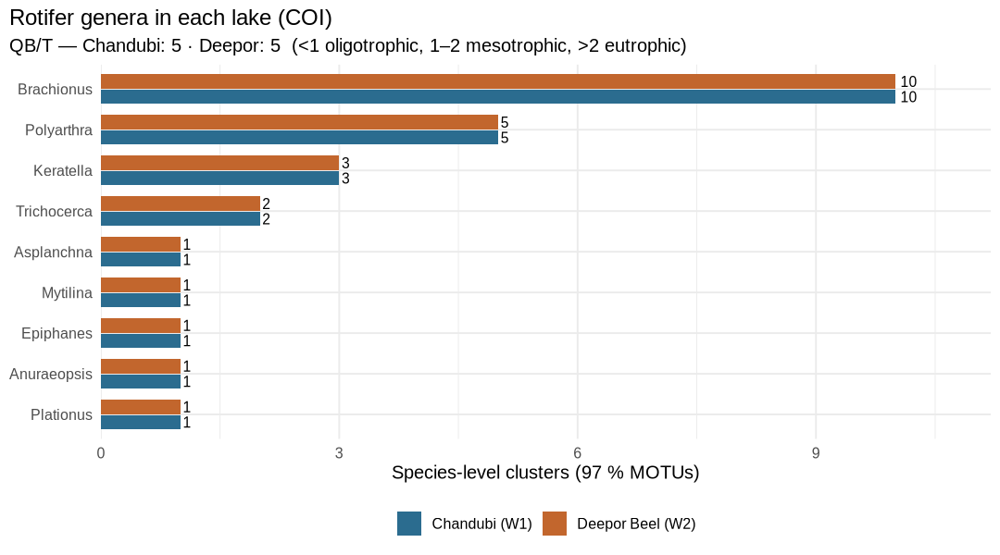
Number of species-level clusters in each rotifer genus, per lake. For specialists — scripts, parameters & full tables
COI ASVs clustered at 97% with VSEARCH
--cluster_size(abundance-sorted). MOTU genus from the reference-library genus of any member ASV, otherwise the genus of the best NCBI BLAST hit at ≥ 80% identity (provisional). QB/T after Sládeček (1983).Script
scripts/11_rotifer_index.sh#!/usr/bin/env bash # Step 11 — Rotifer trophic index (QB/T, Sládeček 1983): number of Brachionus species divided # by number of Trichocerca species. Because few COI sequences can be named to species, species # are approximated by MOTUs: COI ASVs clustered at 97 % identity (a common COI species proxy). set -euo pipefail cd "$(dirname "$0")/.." OUT=results/11_rotifer_index mkdir -p "$OUT" # Abundance-sorted clustering needs ;size= annotations: use total reads per ASV awk -F'\t' 'NR==FNR { if (FNR > 1) size[$1] = $2 + $3; next } /^>/ { id = substr($1, 2); print ">" id ";size=" size[id]; next } { print }' \ results/04_curation/COI_asv_table_curated.tsv results/04_curation/COI_asv_seqs_curated.fasta \ > work/coi_sized.fasta vsearch --cluster_size work/coi_sized.fasta --id 0.97 --sizein --strand plus \ --uc "$OUT/COI_motu97.uc" --quiet Rscript scripts/11_rotifer_index.RScript
scripts/11_rotifer_index.R# Step 11 — Rotifer genera and the Brachionus:Trichocerca quotient (QB/T) per lake. # Genus of each 97 % MOTU: the reference-library genus of any member ASV; otherwise the genus # of the best NCBI BLAST hit when identity >= 80 % ("provisional" — a related genus is possible). # QB/T interpretation (Sládeček 1983): < 1 oligotrophic, 1–2 mesotrophic, > 2 eutrophic. dir.create("work/plots", recursive = TRUE, showWarnings = FALSE) suppressPackageStartupMessages({ library(data.table); library(ggplot2) }) out <- "results/11_rotifer_index" uc <- fread(file.path(out, "COI_motu97.uc"), header = FALSE, sep = "\t") uc <- uc[V1 %in% c("S", "H"), .(asv = sub(";size=.*", "", V9), centroid = sub(";size=.*", "", fifelse(V1 == "S", V9, V10)))] grp <- fread("results/09_ecology/COI_asv_groups.tsv", sep = "\t", quote = "", na.strings = c("", "NA")) bl <- fread("results/06_taxonomy/COI_blast_unknowns_summary.tsv", sep = "\t", quote = "", na.strings = c("", "NA")) bl[, blast_genus := fifelse(ncbi_identity >= 80 & !grepl("environmental|sample", ncbi_best_hit), sub(" .*", "", ncbi_best_hit), NA_character_)] d <- merge(uc, grp, by = "asv") d <- merge(d, bl[, .(asv, blast_genus)], by = "asv", all.x = TRUE) motu <- d[, .(W1 = sum(W1), W2 = sum(W2), asvs = .N, rotifer = any(group == "Rotifers"), genus = na.omit(c(Genus, blast_genus))[1], genus_source = fcase(any(!is.na(Genus)), "reference library", any(!is.na(blast_genus)), "BLAST (provisional)", default = NA_character_)), by = centroid] fwrite(motu[order(-(W1 + W2))], file.path(out, "COI_motus.tsv"), sep = "\t") rot <- motu[rotifer == TRUE] by_genus <- rbindlist(lapply(c("W1", "W2"), function(s) { x <- rot[get(s) > 0] x[, .(motus = .N, reads = sum(get(s)), source = paste(sort(unique(na.omit(genus_source))), collapse = "; ")), by = .(genus = fifelse(is.na(genus), "unassigned rotifer", genus))][, sample := s][] })) setcolorder(by_genus, c("sample", "genus")) fwrite(by_genus[order(sample, -motus)], file.path(out, "rotifer_genera_by_lake.tsv"), sep = "\t") qbt <- rbindlist(lapply(c("W1", "W2"), function(s) { x <- rot[get(s) > 0] b <- sum(x$genus %in% "Brachionus"); t <- sum(x$genus %in% "Trichocerca") data.table(sample = s, rotifer_motus = nrow(x), brachionus_motus = b, trichocerca_motus = t, QBT = if (t > 0) round(b / t, 2) else NA_real_, reading = if (t == 0) "undefined (no Trichocerca)" else fcase(b / t < 1, "oligotrophic", b / t <= 2, "mesotrophic", default = "eutrophic")) })) fwrite(qbt, file.path(out, "QBT_index.tsv"), sep = "\t") site_of <- c(W1 = "Chandubi (W1)", W2 = "Deepor Beel (W2)") pg <- by_genus[genus != "unassigned rotifer"] pg[, site := site_of[sample]] pg[, genus := factor(genus, levels = pg[, sum(motus), by = genus][order(V1), genus])] p <- ggplot(pg, aes(motus, genus, fill = site)) + geom_col(position = position_dodge(width = 0.75), width = 0.7) + geom_text(aes(label = motus), position = position_dodge(width = 0.75), hjust = -0.3, size = 3.3) + scale_fill_manual(values = c("#2b6c8f", "#c2662d")) + scale_x_continuous(expand = expansion(mult = c(0, 0.12))) + labs(x = "Species-level clusters (97 % MOTUs)", y = NULL, fill = NULL, title = "Rotifer genera in each lake (COI)", subtitle = sprintf("QB/T — Chandubi: %s · Deepor: %s (<1 oligotrophic, 1–2 mesotrophic, >2 eutrophic)", qbt[sample == "W1", QBT], qbt[sample == "W2", QBT])) + theme_minimal(base_size = 12) + theme(legend.position = "bottom", plot.title.position = "plot") saveRDS(p, "work/plots/11_rotifer_genera.rds") ggsave("docs/img/11_rotifer_genera.png", p, width = 9, height = 5, dpi = 120) print(qbt); print(by_genus[order(sample, -motus)])sample rotifer_motus brachionus_motus trichocerca_motus QBT reading W1 42 10 2 5 eutrophic W2 39 10 2 5 eutrophic results/11_rotifer_index/QBT_index.tsv
sample genus motus reads source W1 unassigned rotifer 17 31,442 W1 Brachionus 10 22,056 BLAST (provisional); reference library W1 Polyarthra 5 3,243 BLAST (provisional); reference library W1 Keratella 3 4,165 reference library W1 Trichocerca 2 3,893 BLAST (provisional) W1 Plationus 1 4,934 BLAST (provisional) W1 Anuraeopsis 1 768 BLAST (provisional) W1 Epiphanes 1 287 BLAST (provisional) W1 Mytilina 1 978 BLAST (provisional) W1 Asplanchna 1 50 reference library W2 unassigned rotifer 14 21,313 W2 Brachionus 10 28,513 BLAST (provisional); reference library W2 Polyarthra 5 4,477 BLAST (provisional); reference library W2 Keratella 3 8,625 reference library W2 Trichocerca 2 1,694 BLAST (provisional) W2 Plationus 1 1,278 BLAST (provisional) W2 Anuraeopsis 1 262 BLAST (provisional) W2 Epiphanes 1 308 BLAST (provisional) W2 Mytilina 1 439 BLAST (provisional) W2 Asplanchna 1 17 reference library results/11_rotifer_index/rotifer_genera_by_lake.tsv
Output files
Steps 12, 13, 16
Files for the paper
In plain wordsEverything above, packaged the way a journal and the public DNA archive expect it: figures at print resolution, tables, a draft Methods section, and the forms needed to deposit the raw data.
Manuscript package
- Full manuscript (Word) — formatted for Environmental Monitoring and Assessment: 10-pt Times, line numbers, embedded figures and tables, APA references verified against Crossref
- Figures 1–7 for submission (TIFF, 600 dpi, 174 mm wide; also PDF and PNG): results/12_manuscript/figures
- Tables 1–5 (CSV): results/12_manuscript/tables
- Supplementary Tables S1–S12 (Excel) and ASV FASTA files
NCBI SRA submission
Registered under BioProject PRJNA1551452 (BioSamples SAMN64467025, SAMN64467026).
Two BioSamples (one per lake) and four sequencing runs (two barcodes × two lakes). Because both barcodes use the same file names, the eight files get unique names for upload (e.g.
COI_Deepor_Beel_W2_R1.fastq.gz).- BioSample sheet (MIMARKS survey, water package), complete
- SRA metadata sheet with file names and MD5 checksums
For specialists — scripts, parameters & full tables
Script
scripts/12_manuscript.R# Step 12 — Manuscript package (re-run after step 15 to include the microscopy comparison): multi-panel figures (300 dpi PNG + vector PDF), main tables # (CSV) and one supplementary workbook (XLSX). Reads only the outputs of steps 1–11. suppressPackageStartupMessages({ library(data.table); library(ggplot2); library(patchwork); library(openxlsx) }) out <- "results/12_manuscript" dir.create(file.path(out, "figures"), recursive = TRUE, showWarnings = FALSE) dir.create(file.path(out, "tables"), recursive = TRUE, showWarnings = FALSE) rd <- function(p) fread(p, sep = "\t", quote = "", na.strings = c("", "NA")) pl <- function(n) readRDS(file.path("work/plots", paste0(n, ".rds"))) # Environmental Monitoring and Assessment artwork rules: no titles inside figures, sans-serif # lettering 8–12 pt (Liberation Sans = Arial metrics), width <= 174 mm, height <= 234 mm, # combination art (plots with text) as TIFF at 600 dpi; files named Fig1, Fig2, ... FONT <- "Liberation Sans" pub <- theme(plot.title = element_blank(), plot.subtitle = element_blank(), text = element_text(family = FONT, size = 9), axis.text = element_text(size = 8), legend.text = element_text(size = 8), strip.text = element_text(size = 9), plot.tag = element_text(size = 11, face = "bold")) save_fig <- function(p, n, h_mm, w_mm = 174) { stopifnot(h_mm <= 234, w_mm <= 174) f <- file.path(out, "figures", paste0("Fig", n)) ggsave(paste0(f, ".tif"), p, width = w_mm, height = h_mm, units = "mm", dpi = 600, device = function(filename, width, height, res, ...) grDevices::tiff(filename, width = width, height = height, units = "in", res = res, compression = "lzw", type = "cairo", family = FONT)) ggsave(paste0(f, ".png"), p, width = w_mm, height = h_mm, units = "mm", dpi = 300, bg = "white") ggsave(paste0(f, ".pdf"), p, width = w_mm, height = h_mm, units = "mm", device = cairo_pdf, family = FONT) } unlink(list.files(file.path(out, "figures"), full.names = TRUE)) # ---- Figures ---- # Numbered in order of first citation in the manuscript (step 16) save_fig((pl("05_read_tracking") + pub) / (pl("05_rarefaction") + pub) + plot_annotation(tag_levels = "a"), 1, 185) save_fig(pl("10_protein") + pub, 2, 160) save_fig((pl("09_18S_roles") + pub) / (pl("09_COI_groups") + pub) + plot_annotation(tag_levels = "a"), 3, 165) save_fig(pl("09_genera_heatmap") + pub, 4, 220) save_fig((pl("08_alpha") + pub) / (pl("08_overlap") + pub) + plot_layout(heights = c(1, 1.2)) + plot_annotation(tag_levels = "a"), 5, 210) save_fig(pl("11_rotifer_genera") + pub, 6, 100) save_fig(pl("15_microscopy") + pub, 7, 85) # ---- Table 1: sequencing and processing summary ---- tr <- rd("results/05_summary/read_tracking.tsv") asv <- rbindlist(lapply(c("18S", "COI"), function(m) { d <- rd(sprintf("results/04_curation/%s_asv_table_curated.tsv", m)) data.table(marker = m, sample = c("W1", "W2"), ASVs = c(sum(d$W1 > 0), sum(d$W2 > 0))) })) t1 <- merge(tr, asv, by = c("marker", "sample")) t1[, site := fifelse(sample == "W1", "Chandubi Beel", "Deepor Beel")] t1 <- t1[, .(Marker = marker, Site = site, `Raw read pairs` = raw, `Primers found` = primers_found, `Quality-filtered` = filtered, Merged = merged, `Non-chimeric` = nonchim, `Curated` = curated, `% retained` = pct_retained, ASVs)] fwrite(t1, file.path(out, "tables", "Table1_sequencing_summary.csv")) # ---- Table 2: diversity ---- al <- rd("results/08_diversity/alpha_diversity.tsv") t2 <- al[, .(Marker = marker, Site = fifelse(sample == "W1", "Chandubi Beel", "Deepor Beel"), `Rarefied depth` = rarefied_to, `Observed ASVs` = round(observed), Shannon = round(shannon, 2), `Simpson (1-D)` = round(simpson, 3), `Pielou J'` = round(pielou, 2), `Hill q1` = round(hill_q1, 1), `Hill q2` = round(hill_q2, 1))] ov <- rd("results/08_diversity/overlap_by_level.tsv") fwrite(t2, file.path(out, "tables", "Table2_alpha_diversity.csv")) fwrite(ov, file.path(out, "tables", "Table3_overlap_between_lakes.csv")) # ---- Table 4: named taxa ---- nm <- rd("results/06_taxonomy/named_genera_species.tsv") t4 <- nm[, .(Marker = marker, Group = group, Genus, Species = fifelse(is.na(Species), "", Species), ASVs = asvs, `Chandubi (% reads)` = W1_pct, `Deepor (% reads)` = W2_pct, `Best identity (%)` = best_identity)][order(Marker, Group, Genus)] fwrite(t4, file.path(out, "tables", "Table4_named_taxa.csv")) fwrite(rd("results/09_ecology/indicator_taxa.tsv"), file.path(out, "tables", "Table5_indicator_taxa.csv")) # ---- Supplementary workbook ---- seqs <- function(m) { x <- rd(sprintf("results/04_curation/%s_asv_table_curated.tsv", m))[, .(asv, sequence)] merge(rd(sprintf("results/06_taxonomy/%s_taxonomy.tsv", m)), x, by = "asv") } sheets <- list( S1_18S_ASVs = seqs("18S"), S2_COI_ASVs = merge(seqs("COI"), rd("results/09_ecology/COI_asv_groups.tsv")[, .(asv, group)], by = "asv"), S3_read_tracking = tr, S4_COI_BLASTn_unknowns = rd("results/06_taxonomy/COI_blast_unknowns_summary.tsv"), S5_18S_ecological_roles = rd("results/09_ecology/18S_ecological_roles.tsv"), S6_COI_animal_groups = rd("results/09_ecology/COI_animal_groups.tsv"), S7_animal_genera_by_marker = rd("results/09_ecology/animal_genera_by_marker.tsv"), S8_rotifer_MOTUs = rd("results/11_rotifer_index/COI_motus.tsv"), S9_QBT_index = rd("results/11_rotifer_index/QBT_index.tsv")) sheets$S10_COI_protein_search <- rd("results/10_protein/COI_protein_summary.tsv") sheets$S11_Deepor_rotifers_vs_micro <- rd("results/15_microscopy/rotifers_microscopy_vs_DNA.tsv") sheets$S12_Deepor_algae_vs_micro <- rd("results/15_microscopy/algae_genera_microscopy_vs_DNA.tsv") wb <- createWorkbook() for (n in names(sheets)) { addWorksheet(wb, n) writeData(wb, n, sheets[[n]], headerStyle = createStyle(textDecoration = "bold")) freezePane(wb, n, firstRow = TRUE) setColWidths(wb, n, cols = seq_len(ncol(sheets[[n]])), widths = "auto") } saveWorkbook(wb, file.path(out, "tables", "Supplementary_Tables_S1-S12.xlsx"), overwrite = TRUE) # ASV sequences for deposition alongside the paper for (m in c("18S", "COI")) file.copy(sprintf("results/04_curation/%s_asv_seqs_curated.fasta", m), file.path(out, "tables", sprintf("Supplementary_%s_ASVs.fasta", m)), overwrite = TRUE) print(list.files(out, recursive = TRUE))Script
scripts/16_manuscript_docx.js// Step 16 — Build the manuscript as a Word file formatted for Environmental Monitoring and Assessment // (Springer): 10-pt Times, continuous line numbers, automatic page numbers, unnumbered headings // (level 1 bold, level 2 normal), figures embedded with "Fig." captions, Word tables, APA references. // Numbers are read from results/; references from the Crossref records of step 14. // Markup in text: *italic*, [[Key1;Key2]] = parenthetical citation, [[@Key]] = narrative citation. // Run: NODE_PATH=work/node/node_modules node scripts/16_manuscript_docx.js const fs = require("fs"); const path = require("path"); const { Document, Packer, Paragraph, TextRun, ImageRun, Table, TableRow, TableCell, WidthType, AlignmentType, Footer, PageNumber, LineNumberRestartFormat, BorderStyle, ShadingType, HeadingLevel, } = require("docx"); const ROOT = path.resolve(__dirname, ".."); const R = (p) => path.join(ROOT, p); const tsv = (p) => { const [h, ...rows] = fs.readFileSync(R(p), "utf8").trim().split("\n").map((l) => l.split("\t")); return rows.map((r) => Object.fromEntries(h.map((k, i) => [k, r[i]]))); }; const num = (x, d = 1) => Number(x).toFixed(d); const int = (x) => Math.round(Number(x)).toLocaleString("en-US"); // ---------------------------------------------------------------- data const track = Object.fromEntries(tsv("results/05_summary/read_tracking.tsv").map((r) => [`${r.marker}_${r.sample}`, r])); const alpha = Object.fromEntries(tsv("results/08_diversity/alpha_diversity.tsv").map((r) => [`${r.marker}_${r.sample}`, r])); const ovl = Object.fromEntries(tsv("results/08_diversity/overlap_by_level.tsv").map((r) => [`${r.marker}_${r.level}`, r])); const roles = Object.fromEntries(tsv("results/09_ecology/18S_ecological_roles.tsv").map((r) => [r.role, r])); const cgrp = Object.fromEntries(tsv("results/09_ecology/COI_animal_groups.tsv").map((r) => [r.group, r])); const qbt = Object.fromEntries(tsv("results/11_rotifer_index/QBT_index.tsv").map((r) => [r.sample, r])); const tsum = Object.fromEntries(tsv("results/06_taxonomy/taxonomy_summary.tsv").map((r) => [r.marker, r])); const depth = Object.fromEntries(tsv("results/06_taxonomy/assignment_depth.tsv").map((r) => [`${r.marker}_${r.rank}`, r])); const prot = tsv("results/10_protein/COI_protein_summary.tsv"); const protRot = tsv("results/10_protein/COI_protein_by_group.tsv").find((r) => r.consensus_phylum === "Rotifera"); const top = tsv("results/06_taxonomy/COI_blast_unknowns_summary.tsv").find((r) => r.asv === "COI_ASV0001"); const topProt = prot.find((r) => r.asv === "COI_ASV0001"); const micro = tsv("results/15_microscopy/comparison_summary.tsv"); const alg = tsv("results/15_microscopy/algae_genera_microscopy_vs_DNA.tsv"); const animalMark = tsv("results/09_ecology/animal_genera_by_marker.tsv"); const ind = tsv("results/09_ecology/indicator_taxa.tsv"); const dada = { "18S": JSON.parse(fs.readFileSync(R("results/03_dada2/18S/summary.json"))), COI: JSON.parse(fs.readFileSync(R("results/03_dada2/COI/summary.json"))) }; const cur = tsv("results/04_curation/curation_summary.tsv"); const refs = JSON.parse(fs.readFileSync(R("results/14_references/references_records.json"))); const rawTotal = Object.values(track).reduce((a, r) => a + Number(r.raw), 0); const algae = (s) => ["Green algae", "Desmids & conjugating algae", "Diatoms", "Golden & other algae", "Dinoflagellates"] .reduce((a, k) => a + Number(roles[k][s]), 0); const curRemoved = (m) => { const rows = cur.filter((r) => r.marker === m); const kept = rows.find((r) => r.reason === "kept"); const rem = rows.filter((r) => r.reason !== "kept"); const remReads = rem.reduce((a, r) => a + Number(r.W1_reads) + Number(r.W2_reads), 0); const all = remReads + Number(kept.W1_reads) + Number(kept.W2_reads); return { asvs: rem.reduce((a, r) => a + Number(r.asvs), 0), pct: (100 * remReads) / all }; }; const indv = (name) => ind.find((r) => r.name === name); const mic = (label) => micro.find((r) => r.comparison.startsWith(label)); const algBoth = alg.filter((r) => r.found_by === "both").length; const algDnaOnly = alg.filter((r) => r.found_by === "DNA only").length; const algBlind = alg.filter((r) => r.found_by === "microscopy only" && r.note).length; const nBy = (k) => animalMark.filter((r) => r.detected_by === k).length; const protRotN = Number(protRot.asvs); // ---------------------------------------------------------------- citations const refName = (k) => { const r = refs[k]; if (!r) throw new Error(`unknown reference ${k}`); const a = r.authors.map((x) => x.family); const who = a.length === 1 ? a[0] : a.length === 2 ? `${a[0]} & ${a[1]}` : `${a[0]} et al.`; return { who, year: r.year }; }; const EXTRA = { Oksanen: { who: "Oksanen et al.", year: 2025 }, RCore: { who: "R Core Team", year: 2026 } }; const citeOne = (k) => EXTRA[k] || refName(k); function expand(text) { return text.replace(/\[\[(@?)([^\]]+)\]\]/g, (_, narrative, keys) => { const items = keys.split(";").map((k) => citeOne(k.trim())); if (narrative) return items.map((c) => `${c.who} (${c.year})`).join("; "); return "(" + items.map((c) => `${c.who}, ${c.year}`).join("; ") + ")"; }); } // ---------------------------------------------------------------- paragraph helpers const FONT = "Times New Roman"; const SIZE = 20; // half-points: 10 pt function runs(text, base = {}) { const out = []; expand(text).split(/(\*\*[^*]+\*\*|\*[^*]+\*)/).forEach((seg) => { if (!seg) return; if (seg.startsWith("**")) out.push(new TextRun({ text: seg.slice(2, -2), bold: true, font: FONT, size: SIZE, ...base })); else if (seg.startsWith("*")) out.push(new TextRun({ text: seg.slice(1, -1), italics: true, font: FONT, size: SIZE, ...base })); else out.push(new TextRun({ text: seg, font: FONT, size: SIZE, ...base })); }); return out; } const P = (text, opts = {}) => new Paragraph({ children: runs(text), spacing: { after: 120, line: 360 }, alignment: AlignmentType.JUSTIFIED, ...opts }); const H1 = (t) => new Paragraph({ heading: HeadingLevel.HEADING_1, children: [new TextRun({ text: t, bold: true, font: FONT, size: 22 })], spacing: { before: 240, after: 240 } }); const H2 = (t) => new Paragraph({ heading: HeadingLevel.HEADING_2, children: [new TextRun({ text: t, font: FONT, size: SIZE, italics: true })], spacing: { before: 200, after: 200 } }); const figs = []; function FIG(n, caption) { const file = R(`results/12_manuscript/figures/Fig${n}.png`); const buf = fs.readFileSync(file); const w = buf.readUInt32BE(16), h = buf.readUInt32BE(20); const width = 640; // ~6.7 in at 96 px/in, within the 174-mm column figs.push(n); return [ new Paragraph({ children: [new ImageRun({ type: "png", data: buf, transformation: { width, height: Math.round((width * h) / w) }, altText: { title: `Fig. ${n}`, description: caption.replace(/\*/g, ""), name: `Fig${n}` } })], alignment: AlignmentType.CENTER, spacing: { before: 200, after: 80 } }), new Paragraph({ children: [new TextRun({ text: `Fig. ${n} `, bold: true, font: FONT, size: SIZE }), ...runs(caption)], spacing: { after: 240, line: 300 } }), ]; } const BORDER = { style: BorderStyle.SINGLE, size: 4, color: "000000" }; const NONE = { style: BorderStyle.NONE, size: 0, color: "FFFFFF" }; function TABLE(n, caption, header, rows, widths, note) { const total = widths.reduce((a, b) => a + b, 0); const cell = (t, i, isHead, last) => new TableCell({ width: { size: widths[i], type: WidthType.DXA }, borders: { top: isHead ? BORDER : NONE, bottom: isHead || last ? BORDER : NONE, left: NONE, right: NONE }, children: [new Paragraph({ children: runs(String(t), { size: 18, bold: isHead }), alignment: i === 0 ? AlignmentType.LEFT : AlignmentType.RIGHT })], margins: { top: 40, bottom: 40, left: 80, right: 80 }, }); const out = [ new Paragraph({ children: [new TextRun({ text: `Table ${n} `, bold: true, font: FONT, size: SIZE }), ...runs(caption)], spacing: { before: 240, after: 80, line: 300 } }), new Table({ width: { size: total, type: WidthType.DXA }, columnWidths: widths, rows: [new TableRow({ tableHeader: true, children: header.map((t, i) => cell(t, i, true, false)) }), ...rows.map((r, j) => new TableRow({ children: r.map((t, i) => cell(t, i, false, j === rows.length - 1)) }))] }), ]; if (note) out.push(new Paragraph({ children: runs(note, { size: 16 }), spacing: { before: 60, after: 240 } })); return out; } // ---------------------------------------------------------------- content const C = "Chandubi Beel", D = "Deepor Beel"; const a = (m, s, k, d = 1) => num(alpha[`${m}_${s}`][k], d); const t = (m, s) => track[`${m}_${s}`]; const TITLE = "Multi-marker eDNA metabarcoding reveals contrasting micro-eukaryote communities and a shared rotifer assemblage in two Brahmaputra floodplain wetlands of Assam, India"; const abstract = `Floodplain wetlands of the Brahmaputra valley are under growing urban pressure, yet molecular baselines of their plankton are lacking. We characterised the plankton of Deepor Beel, a Ramsar wetland bordering the municipal solid-waste dumping ground of Guwahati, and the less disturbed Chandubi Beel using environmental DNA metabarcoding of two markers: the 18S rRNA V4 region for micro-eukaryotes and the mitochondrial cytochrome c oxidase I (COI) gene for metazoans. From ${int(rawTotal)} read pairs, joint denoising yielded ${int(tsum["18S"].asvs)} 18S and ${int(tsum.COI.asvs)} COI amplicon sequence variants. The micro-eukaryote communities were almost distinct (${ovl["18S_ASV"].pct_shared}% of variants shared): Chandubi Beel was dominated by green algae, diatoms and free-living protozoa, whereas Deepor Beel was richer (${int(alpha["18S_W2"].observed)} vs ${int(alpha["18S_W1"].observed)} variants) and dominated by fungi (${num(roles.Fungi.W2, 0)}% of reads), oomycetes and desmids. In contrast, ${ovl["COI_ASV"].pct_shared}% of COI variants occurred in both wetlands, where rotifers formed ${num(cgrp.Rotifers.W1, 0)}–${num(cgrp.Rotifers.W2, 0)}% of reads. Protein-level searches placed ${protRotN} of the abundant unassigned COI variants among rotifers, revealing many rotifer lineages absent from reference libraries. The rotifer quotient QB/T of ${qbt.W1.QBT} in both wetlands and the enrichment of *Brachionus* and *Keratella tropica* at Deepor Beel indicate nutrient-rich conditions. DNA detections agreed with published microscopy for the dominant desmid and rotifer genera. These results provide the first molecular plankton baseline for both wetlands and show that combining markers is essential for wetland biomonitoring in north-eastern India.`; const keywords = "Biomonitoring · Ramsar site · Zooplankton · Phytoplankton · Desmids · Cytochrome c oxidase I"; const intro = [ `Wetland plankton respond within weeks to changes in nutrient load, organic matter and hydrology, which makes them sensitive indicators of ecological condition. Identifying them by microscopy is, however, slow and demands separate expertise for rotifers, crustaceans, protists and algae, while small and fragile forms are routinely overlooked. Environmental DNA (eDNA) metabarcoding offers a complementary route: DNA shed into the water is amplified with taxonomically informative markers and sequenced in a single assay, and its use for monitoring Indian fresh waters is growing [[Sahu2025]].`, `No single marker recovers a whole plankton community. Mitochondrial cytochrome c oxidase I (COI) resolves metazoan zooplankton to species where reference sequences exist, whereas the nuclear 18S rRNA gene captures the broader eukaryotic assemblage — algae, protists and fungi — usually at coarser taxonomic ranks. Studies that combine markers consistently detect more taxa than either marker alone [[Zhang2018;Stefanni2018;Sildever2021;Zhao2021]], and eDNA surveys have linked shifts in plankton composition to anthropogenic pressure in lakes and reservoirs [[Lin2023;Jo2026]]. The reliability of species-level assignments nevertheless depends on reference databases, which remain incomplete for tropical freshwater invertebrates [[Chen2025]].`, `Deepor Beel is a Ramsar-listed floodplain wetland of the Brahmaputra on the south-western edge of Guwahati, the largest city of north-eastern India. It lies immediately beside the city's municipal solid-waste dumping ground, which exposes it to leachate and organic enrichment in addition to urban encroachment. Chandubi Beel, a natural lake in the same district, is comparatively undisturbed. The rotifers and algae of Deepor Beel have been described by microscopy [[Sharma2010;Baruah2020]], but no molecular survey exists for either wetland.`, `Here we provide a multi-marker eDNA baseline for the plankton of both wetlands. We asked (i) how the micro-eukaryote and metazoan communities of the pressured and the reference wetland differ, (ii) what biological indicators reveal about their trophic state in the absence of chemical monitoring, (iii) how much of the community can be named with current reference libraries, and (iv) whether DNA detections agree with earlier microscopy.`, ]; const methods = [ ["Study area and sampling", `Surface water was collected on 29 March 2026 at one near-shore location in each wetland: Deepor Beel (W2; 26.10953° N, 91.70818° E) and Chandubi Beel (W1; 25.881015° N, 91.422898° E), Kamrup district, Assam, India. The study was designed as a biological baseline and did not include water chemistry; the contrast between the wetlands is defined by their setting — Deepor Beel adjoining the municipal solid-waste dumping ground of Guwahati and Chandubi Beel without comparable pressure — and the trophic state of each is inferred from biological indicators (see below).`], ["DNA extraction, amplification and sequencing", `DNA extraction, PCR amplification and library preparation were carried out by Eurofins Genomics following the provider's standard amplicon protocol. Two markers were amplified: the V4 region of the 18S rRNA gene with primers E572F (5′-CYGCGGTAATTCCAGCTC-3′) and E1009R (5′-AYGGTATCTRWTCRTCTTYG-3′) [[Comeau2011]], and the 313-bp "Leray" fragment of COI with mlCOIintF (5′-GGWACWGGWTGAACWGTWTAYCCYCC-3′) [[Leray2013]] and jgHCO2198 (5′-TAIACYTCIGGRTGICCRAARAAYCA-3′) [[Geller2013]]. Libraries were sequenced on an Illumina MiSeq (2 × 300 bp). The identity of both primer pairs was confirmed directly from the reads.`], ["Read processing", `Read integrity was verified against the provider's MD5 checksums and quality assessed with FastQC v0.13.0 and MultiQC v1.35 [[Ewels2016]]. Primers were removed with Cutadapt v5.2 [[Martin2011]] using linked adapters: the 5′ primer was required at the start of each read (maximum error rate 0.15), the reverse-complemented opposite primer was trimmed when present, and pairs lacking either primer were discarded. Reads were then processed per marker with DADA2 v1.38.0 [[Callahan2016]] in R v4.5.3 [[RCore]]: truncation at ${dada["18S"].truncLen.join("/")} bp (18S) and ${dada.COI.truncLen.join("/")} bp (COI), maxEE 2/4, maxN 0, error models learned per read direction, joint (pooled) denoising of both samples so that identical sequences received the same amplicon sequence variant (ASV) in both wetlands, merging with a minimum overlap of 12 bp and no mismatches, and consensus chimera removal. COI ASVs were retained only if their length differed from 313 bp by whole codons and they translated without stop codons under the invertebrate mitochondrial code (NCBI table 5); 18S ASVs were retained if 350–480 bp long.`], ["Taxonomic assignment", `ASVs were classified with the SINTAX algorithm [[Edgar2016]] in VSEARCH v2.32.0 [[Rognes2016]] against PR2 v5.1.1 for 18S [[Guillou2013]] and the Eukaryote CO1 Reference Set v5.1.0 for COI [[Porter2018]]. A rank was accepted only if its bootstrap support was ≥ 0.80 and the identity to the closest reference sequence reached a rank-specific minimum (COI: order 85%, family 90%, genus 95%, species 97%; 18S: family 95%, genus 97%, species 99%). The 40 most abundant COI ASVs with < 85% identity to the reference set were searched against NCBI core_nt with BLASTn; hits below 80% identity were not used. ASVs among these without a ≥ 90% DNA match were further compared at the protein level: the reference set was translated with SeqKit v2.14.0 [[Shen2016]] and searched with DIAMOND v2.2.8 blastx [[Buchfink2021]] (ultra-sensitive mode, invertebrate mitochondrial code, E ≤ 10⁻¹⁰). A consensus phylum was assigned when at least three hits lay within 95% of the best bit score and ≥ 70% of them agreed.`], ["Community analyses", `Diversity analyses used vegan v2.7.5 [[Oksanen]]. Alpha diversity was computed after rarefying both samples of each marker to the shallower depth, averaged over 100 random subsamples, and reported as observed ASVs, Shannon, Simpson and Pielou indices and Hill numbers (q1 = exp H′; q2 = 1/D). Overlap between wetlands was summarised as shared and unique ASVs, genera and species with Jaccard similarity and Bray–Curtis dissimilarity. 18S ASVs were grouped into ecological roles from their PR2 division and class, and COI ASVs into animal groups. For the rotifer quotient QB/T [[Sladecek1983]], COI ASVs were clustered into species-level operational units at 97% identity with VSEARCH and *Brachionus* and *Trichocerca* units counted per wetland. DNA detections for Deepor Beel were compared with the taxa reported by microscopy for rotifers [[Sharma2010]] and algae [[Baruah2020]]. With one sample per wetland, no inferential statistics were applied; all contrasts are descriptive. Bioinformatic scripts and draft text were prepared with the assistance of a large language model (Claude, Anthropic); all code, results and text were checked by the authors. All scripts are publicly available (see Data availability).`], ]; const results = [ ["Sequencing depth and data processing", [ `Sequencing produced ${int(rawTotal)} read pairs, of which 87.8–89.6% carried both primers (Table 1). After denoising, merging, chimera removal (${num(dada["18S"].chimeric_read_pct)}% of 18S and ${num(dada.COI.chimeric_read_pct)}% of COI reads) and curation, ${num(t("18S", "W1").pct_retained)}–${num(t("18S", "W2").pct_retained)}% (18S) and ${num(t("COI", "W1").pct_retained)}–${num(t("COI", "W2").pct_retained)}% (COI) of raw pairs were retained. Curation removed few reads (COI: ${curRemoved("COI").asvs} ASVs, ${num(curRemoved("COI").pct)}% of reads; 18S: ${curRemoved("18S").asvs} ASVs, ${num(curRemoved("18S").pct)}%), and the retained COI ASVs clustered at 313 and 316 bp, as expected for a protein-coding fragment. Rarefaction curves reached a plateau for both markers in both wetlands (Fig. 1), indicating that sequencing depth was sufficient.`, ]], ["Taxonomic resolution and the reference-library gap", [ `The 18S data were well covered by PR2: ${num(depth["18S_Division"].W1, 0)}–${num(depth["18S_Division"].W2, 0)}% of reads were named at division level and ${tsum["18S"].named_genera} genera were identified. COI resolution was much lower: only ${num(depth.COI_Phylum.W1, 0)}% (${C}) and ${num(depth.COI_Phylum.W2, 0)}% (${D}) of reads were named even to phylum, because ${num(tsum.COI.reads_below_85pct_identity, 0)}% of COI reads were less than 85% identical to any reference sequence. GenBank searches showed that many of these unknowns matched unnamed "rotifer environmental samples" or known rotifers at only 80–89% DNA identity. At the protein level, ${protRotN} of ${prot.length} such ASVs were placed among rotifers with 89–98% amino-acid identity to *Trichocerca*, *Euchlanis*, *Filinia*, *Lecane* and *Brachionus* (Fig. 2), together accounting for ${num(protRot.W1_pct, 0)}% and ${num(protRot.W2_pct, 0)}% of COI reads. The single most abundant COI variant (${num(top.reads_pct_W1, 0)}–${num(top.reads_pct_W2, 0)}% of reads in both wetlands) translated cleanly but was at most ${num(top.ncbi_identity, 0)}% identical to any GenBank sequence, and its protein fell between a nematode (${num(topProt.aa_identity, 0)}%) and stramenopile algae, so its identity remains unresolved. These results show that the gap lies in the reference libraries rather than in the data: north-eastern Indian rotifers are poorly represented, consistent with the limitations noted for freshwater invertebrates generally [[Chen2025]].`, ]], ["Community composition and ecological roles", [ `The micro-eukaryote communities of the two wetlands differed in structure (Fig. 3a). In ${C}, algae formed ${num(algae("W1"), 0)}% of 18S reads, dominated by green algae (${num(roles["Green algae"].W1, 0)}%; *Desmodesmus*, *Chlamydomonas*, *Pteromonas*) and diatoms (${num(roles.Diatoms.W1, 0)}%; *Cyclotella*, *Aulacoseira*, *Nitzschia*), together with free-living protozoa (${num(roles["Protozoa (free-living)"].W1, 0)}%), notably the cercozoan *Neoheteromita*. In ${D}, algae formed a similar share (${num(algae("W2"), 0)}%) but were dominated by desmids (${num(roles["Desmids & conjugating algae"].W2, 0)}%; *Staurastrum*, *Cosmarium*, *Pleurotaenium*), and fungi (${num(roles.Fungi.W2, 0)}%) and oomycetes (${num(roles["Water moulds (oomycetes)"].W2, 0)}%) took a far larger share than in ${C} (${num(roles.Fungi.W1, 0)}% and ${num(roles["Water moulds (oomycetes)"].W1, 0)}%). The most abundant Deepor-specific genera were the oomycete *Aphanomyces*, the algal-parasitic chytrid *Rhizophydium* and the golden alga *Lepidochromonas* (Fig. 4). A micro-eukaryote community weighted towards decomposers and parasites is consistent with the organic input expected beside a solid-waste dumping ground.`, `In the COI data, rotifers dominated both wetlands (${num(cgrp.Rotifers.W1, 0)}% and ${num(cgrp.Rotifers.W2, 0)}% of reads after integrating reference and protein-level assignments; Fig. 3b), led by *Brachionus* and *Keratella*. Copepods, ostracods and insects together contributed less than 1% of COI reads, although copepods (*Mesocyclops*, *Microcyclops* and *Eucyclops*) were recovered by 18S.`, ]], ["Diversity and overlap between wetlands", [ `The two markers gave opposite diversity rankings (Table 2, Fig. 5a). For 18S, ${D} was considerably richer (${int(alpha["18S_W2"].observed)} vs ${int(alpha["18S_W1"].observed)} ASVs at equal depth; Hill q1 ${a("18S", "W2", "hill_q1")} vs ${a("18S", "W1", "hill_q1")}). For COI, ${C} was richer and more even (${int(alpha.COI_W1.observed)} vs ${int(alpha.COI_W2.observed)} ASVs; q1 ${a("COI", "W1", "hill_q1")} vs ${a("COI", "W2", "hill_q1")}), reflecting the stronger dominance of a few rotifers in ${D}.`, `Overlap differed even more (Fig. 5b). Only ${ovl["18S_ASV"].pct_shared}% of 18S ASVs and ${ovl["18S_Genus"].pct_shared}% of named 18S genera occurred in both wetlands (Bray–Curtis dissimilarity ${num(ovl["18S_ASV"].bray_curtis_dissimilarity, 2)}), whereas ${ovl["COI_ASV"].pct_shared}% of COI ASVs were shared at similar relative abundance (Bray–Curtis ${num(ovl["COI_ASV"].bray_curtis_dissimilarity, 2)}). The wetlands therefore share largely the same rotifer assemblage while hosting distinct algal, protist and fungal communities. A shared rotifer pool is plausible for floodplain lakes of the same river system, as rotifers disperse readily through resting eggs and seasonal hydrological connection, whereas micro-eukaryote producers and decomposers respond more directly to local conditions such as organic loading and macrophyte cover.`, ]], ["Biological indicators of trophic state", [ `Without chemical data, the trophic condition of the wetlands can be read from indicator taxa (Table 3). The rotifer quotient QB/T was ${qbt.W1.QBT} in both wetlands (${qbt.W1.brachionus_motus} *Brachionus* against ${qbt.W1.trichocerca_motus} *Trichocerca* species-level units; Fig. 6), well above the threshold of 2 for eutrophic water [[Sladecek1983]]; some genus assignments rest on distant matches and the value is therefore provisional. The eutrophy-associated *Brachionus* (${num(indv("Brachionus").chandubi_pct)}% vs ${num(indv("Brachionus").deepor_pct)}% of COI reads), *B. caudatus* (${num(indv("Brachionus_caudatus").chandubi_pct)}% vs ${num(indv("Brachionus_caudatus").deepor_pct)}%) and *Keratella tropica* (${num(indv("Keratella_tropica").chandubi_pct)}% vs ${num(indv("Keratella_tropica").deepor_pct)}%) were more abundant in ${D}, in line with organic enrichment from the adjacent dumping ground. ${C} nevertheless carried diatoms typical of enriched water — *Cyclotella meneghiniana* (${num(indv("Cyclotella_meneghiniana").chandubi_pct)}%), *Nitzschia palea* and *Aulacoseira granulata* — indicating that it too is nutrient-rich rather than pristine. The prominence of desmids in ${D} reflects its dense macrophyte cover, a habitat in which desmids thrive.`, ]], ["Agreement with microscopy", [ `DNA detections for ${D} agreed well with earlier microscopy (Fig. 7). For algae, ${algBoth} of the ${mic("Algal").microscopy} genera listed by [[@Baruah2020]] were also found by 18S, including the dominant desmids *Cosmarium* and *Staurastrum*, and DNA added ${algDnaOnly} genera not listed. Of the genera found only by microscopy, ${algBlind} were cyanobacteria, which lack an 18S gene, or euglenoids, which are poorly amplified by V4 primers. For rotifers, DNA detected ${Number(mic("Rotifer genus").also_by_DNA_named) + Number(mic("Rotifer genus").also_by_DNA_provisional)} of the five quantitatively important genera and ${Number(mic("Rotifer family").also_by_DNA_named) + Number(mic("Rotifer family").also_by_DNA_provisional)} of the seven important families reported by [[@Sharma2010]], but only ${mic("Rotifer species").also_by_DNA_named} of the seven important species, again reflecting the reference-library gap rather than absence.`, ]], ["Complementarity of markers and limitations", [ `Of the animal genera named, ${nBy("18S only")} were detected only by 18S (flatworms, gastrotrichs, oligochaetes and the copepods *Eucyclops* and *Microcyclops*), ${nBy("COI only")} only by COI (including *Brachionus*, *Keratella* and *Polyarthra*) and ${nBy("both")} by both. Neither marker alone would have described these wetlands adequately, supporting multi-marker designs for wetland monitoring [[Zhang2018;Stefanni2018;Zhao2021]]. Adding a phytoplankton-specific marker such as chloroplast 16S would further resolve the algal and cyanobacterial fraction [[Lemonnier2025]].`, `The study is a baseline with one sample per wetland, so differences are descriptive and cannot be tested statistically. Read proportions reflect DNA abundance, which is affected by copy number, body size and primer affinity, rather than biomass. Indicator interpretations are qualitative, and repeated, seasonal sampling with replication would be needed to quantify the effect of the dumping ground on Deepor Beel.`, ]], ]; const conclusions = `This first molecular plankton baseline for Deepor Beel and Chandubi Beel shows two wetlands that share their rotifer zooplankton but differ sharply in their micro-eukaryote communities. Deepor Beel, beside the city's solid-waste dumping ground, carries a richer community dominated by fungi, oomycetes, desmids and decomposers, and a stronger signal of eutrophy-associated rotifers, while Chandubi Beel is dominated by green algae, diatoms and protozoa. Rotifer indicators point to nutrient-rich conditions in both wetlands. Many rotifer lineages and the most abundant metazoan sequence lack reference sequences, which identifies barcoding of the regional fauna as a priority. Combining 18S and COI markers, and checking detections against microscopy, provides a practical framework for monitoring these wetlands.`; const declarations = [ ["Acknowledgements", "[Acknowledgements]"], ["Author contributions", "Sahil Seikh: conceptualisation, sampling, investigation, data analysis, writing – original draft. [Add other authors and contributions.]"], ["Funding", "[State funding sources, or: The authors did not receive support from any organization for the submitted work.]"], ["Data availability", "Raw sequence reads are deposited in the NCBI Sequence Read Archive under BioProject PRJNA1551452 (BioSamples SAMN64467025 and SAMN64467026). ASV sequences, ASV and taxonomy tables, and all analysis scripts are available at https://github.com/Angsumi/Sahil_Metagenome."], ["Declarations", "Ethics approval: Not applicable; the study used environmental water samples and involved no human participants or animals. Consent to participate: Not applicable. Consent for publication: Not applicable. Competing interests: [The authors declare no competing interests.]"], ]; // ---------------------------------------------------------------- tables const table1Rows = []; for (const m of ["18S", "COI"]) for (const s of ["W1", "W2"]) { const r = t(m, s); table1Rows.push([`${m} — ${s === "W1" ? C : D}`, int(r.raw), int(r.primers_found), int(r.filtered), int(r.merged), int(r.nonchim), int(r.curated), num(r.pct_retained)]); } const table2Rows = []; for (const m of ["18S", "COI"]) for (const s of ["W1", "W2"]) { const r = alpha[`${m}_${s}`]; table2Rows.push([`${m} — ${s === "W1" ? C : D}`, int(r.rarefied_to), int(r.observed), num(r.shannon, 2), num(r.simpson, 3), num(r.pielou, 2), num(r.hill_q1), num(r.hill_q2)]); } const table3Rows = ind.map((r) => [`*${r.name.replace(/_/g, " ")}*`, r.marker, r.group, num(r.chandubi_pct, 2), num(r.deepor_pct, 2)]); // ---------------------------------------------------------------- references (APA 7) function apaAuthors(list) { const f = (x) => { const init = (x.given || "").split(/[\s.\-]+/).filter(Boolean).map((p) => p[0].toUpperCase() + ".").join(" "); return init ? `${x.family}, ${init}` : x.family; }; const n = list.map(f); if (n.length === 1) return n[0]; if (n.length <= 20) return n.slice(0, -1).join(", ") + ", & " + n[n.length - 1]; return n.slice(0, 19).join(", ") + ", … " + n[n.length - 1]; } const sentence = (s) => s.replace(/\b([A-Z])([a-z]+)\b/g, (w, a1, rest, off) => (off === 0 ? w : w.toLowerCase())) .replace(/\b(dna|edna|rrna|pcr|coi|its|illumina|dada2|pr2|vsearch|diamond|seqkit|multiqc|sintax|ramsar|indian|india|assam|north|east|deepor|beel|arctic|ocean|dianchi|lake|singal|reservoir|cutadapt|fasta\/q|cytochrome|co1)\b/gi, (w) => ({ dna: "DNA", edna: "eDNA", rrna: "rRNA", pcr: "PCR", coi: "COI", its: "ITS", illumina: "Illumina", dada2: "DADA2", pr2: "PR2", vsearch: "VSEARCH", diamond: "DIAMOND", seqkit: "SeqKit", multiqc: "MultiQC", sintax: "SINTAX", ramsar: "Ramsar", indian: "Indian", india: "India", assam: "Assam", north: "North", east: "East", deepor: "Deepor", beel: "Beel", arctic: "Arctic", ocean: "Ocean", dianchi: "Dianchi", lake: "Lake", singal: "Singal", reservoir: "Reservoir", cutadapt: "Cutadapt", "fasta/q": "FASTA/Q", cytochrome: "cytochrome", co1: "CO1" })[w.toLowerCase()] || w); const apaRefs = Object.entries(refs).filter(([k]) => !k.startsWith("Deepor_") || k === "Deepor_algae2021"); // The regional algae paper is keyed Deepor_algae2021 in step 14; cite it as Baruah2020 refs.Baruah2020 = refs.Deepor_algae2021; const refParas = apaRefs.map(([k, r]) => { const parts = [new TextRun({ text: `${apaAuthors(r.authors)} (${r.year}). ${sentence(r.title)}. `, font: FONT, size: SIZE })]; parts.push(new TextRun({ text: r.journal + (r.volume ? `, ${r.volume}` : ""), italics: true, font: FONT, size: SIZE })); parts.push(new TextRun({ text: `${r.issue ? `(${r.issue})` : ""}${r.pages ? `, ${r.pages.replace("-", "–")}` : ""}. https://doi.org/${r.doi}`, font: FONT, size: SIZE })); return { key: r.authors[0].family + r.year, p: new Paragraph({ children: parts, indent: { left: 360, hanging: 360 }, spacing: { after: 100, line: 300 } }) }; }); refParas.push({ key: "Oksanen2025", p: new Paragraph({ children: [ new TextRun({ text: "Oksanen, J., Simpson, G. L., Blanchet, F. G., Kindt, R., Legendre, P., Minchin, P. R., et al. (2025). ", font: FONT, size: SIZE }), new TextRun({ text: "vegan: Community ecology package", italics: true, font: FONT, size: SIZE }), new TextRun({ text: " (R package version 2.7-5). https://CRAN.R-project.org/package=vegan", font: FONT, size: SIZE })], indent: { left: 360, hanging: 360 }, spacing: { after: 100, line: 300 } }) }); refParas.push({ key: "R Core Team2026", p: new Paragraph({ children: [ new TextRun({ text: "R Core Team. (2026). ", font: FONT, size: SIZE }), new TextRun({ text: "R: A language and environment for statistical computing", italics: true, font: FONT, size: SIZE }), new TextRun({ text: " (Version 4.5.3). R Foundation for Statistical Computing. https://www.R-project.org/", font: FONT, size: SIZE })], indent: { left: 360, hanging: 360 }, spacing: { after: 100, line: 300 } }) }); refParas.sort((x, y) => x.key.localeCompare(y.key, "en", { sensitivity: "base" })); // ---------------------------------------------------------------- assemble const body = []; body.push(new Paragraph({ children: [new TextRun({ text: TITLE, bold: true, font: FONT, size: 28 })], spacing: { after: 240 } })); body.push(P("Sahil Seikh¹ [add co-authors]", { alignment: AlignmentType.LEFT })); body.push(P("¹ Department of Zoology, B. Borooah College (Autonomous), Guwahati, Assam, India", { alignment: AlignmentType.LEFT })); body.push(P("Corresponding author: Sahil Seikh, sahilseikh132@gmail.com (ORCID: [add])", { alignment: AlignmentType.LEFT })); body.push(H1("Abstract"), P(abstract)); body.push(P(`**Keywords** ${keywords}`, { alignment: AlignmentType.LEFT })); body.push(H1("Introduction"), ...intro.map((x) => P(x))); body.push(H1("Materials and methods")); for (const [h, txt] of methods) body.push(H2(h), P(txt)); body.push(H1("Results and discussion")); const FIGS = { "Sequencing depth and data processing": [ () => TABLE(1, `Sequencing and processing summary: read pairs remaining after each step and the share of raw pairs retained`, ["Marker — wetland", "Raw", "Primers", "Filtered", "Merged", "Non-chimeric", "Curated", "% retained"], table1Rows, [2300, 900, 900, 900, 900, 1100, 900, 1000]), () => FIG(1, "Read processing and sequencing depth. **a** Read pairs remaining after each processing step for each marker and wetland. **b** Rarefaction curves of curated amplicon sequence variants (ASVs); curves reaching a plateau indicate sufficient sequencing depth")], "Taxonomic resolution and the reference-library gap": [ () => FIG(2, "Identity of the unassigned COI ASVs to the closest known sequence at DNA level (open circles; GenBank, BLASTn) and protein level (filled circles; translated CO1 Reference Set, DIAMOND). Labels give the consensus phylum/class of the closest proteins; 'mixed' indicates no agreement")], "Community composition and ecological roles": [ () => FIG(3, "Community composition. **a** Share of 18S rRNA reads by ecological role. **b** Share of COI reads by animal group, combining reference-set and protein-level assignments"), () => FIG(4, "The 30 most abundant named genera from both markers, as percentage of all reads of the respective marker in each wetland, ordered from Chandubi-leaning (top) to Deepor-leaning (bottom)")], "Diversity and overlap between wetlands": [ () => TABLE(2, "Alpha diversity after rarefaction to equal depth per marker (mean of 100 subsamples)", ["Marker — wetland", "Depth", "ASVs", "Shannon", "Simpson", "Pielou", "Hill q1", "Hill q2"], table2Rows, [2300, 1000, 900, 900, 1000, 900, 1000, 1000]), () => FIG(5, "Diversity and overlap. **a** Alpha diversity as effective numbers of ASVs (richness, Hill q1, Hill q2). **b** Share of ASVs, named genera and named species found only in Chandubi Beel, in both wetlands, or only in Deepor Beel; numbers are counts")], "Biological indicators of trophic state": [ () => TABLE(3, "Indicator taxa and their share of reads (%) of the respective marker in each wetland", ["Taxon", "Marker", "Group", "Chandubi", "Deepor"], table3Rows, [3100, 900, 1700, 1100, 1100], "Indicator associations follow the general water-quality literature; percentages are relative read abundance"), () => FIG(6, "Rotifer genera represented by species-level units (COI ASVs clustered at 97% identity) in each wetland. The Brachionus:Trichocerca quotient (QB/T) is given in the text")], "Agreement with microscopy": [ () => FIG(7, "Taxa reported by microscopy in Deepor Beel (rotifers: Sharma, 2010; algae: Baruah et al., 2020) and whether they were also detected by eDNA")], }; for (const [h, paras] of results) { body.push(H2(h), ...paras.map((x) => P(x))); for (const f of FIGS[h] || []) body.push(...f()); } body.push(H1("Conclusions"), P(conclusions)); for (const [h, txt] of declarations) body.push(H1(h), P(txt)); body.push(H1("References"), ...refParas.map((r) => r.p)); const doc = new Document({ creator: "Sahil Seikh", title: TITLE, styles: { default: { document: { run: { font: FONT, size: SIZE } } }, paragraphStyles: [ { id: "Heading1", name: "Heading 1", basedOn: "Normal", next: "Normal", quickFormat: true, run: { bold: true, size: 22, font: FONT }, paragraph: { outlineLevel: 0 } }, { id: "Heading2", name: "Heading 2", basedOn: "Normal", next: "Normal", quickFormat: true, run: { size: SIZE, font: FONT }, paragraph: { outlineLevel: 1 } }] }, sections: [{ properties: { page: { size: { width: 11906, height: 16838 }, margin: { top: 1440, bottom: 1440, left: 1440, right: 1440 } }, lineNumbers: { countBy: 1, restart: LineNumberRestartFormat.CONTINUOUS }, }, footers: { default: new Footer({ children: [new Paragraph({ alignment: AlignmentType.CENTER, children: [new TextRun({ children: [PageNumber.CURRENT], font: FONT, size: SIZE })] })] }) }, children: body, }], }); const out = R("results/12_manuscript/Manuscript_EMAS.docx"); Packer.toBuffer(doc).then((b) => { fs.writeFileSync(out, b); console.log(`wrote ${out} (figures ${figs.join(", ")})`); });Script
scripts/13_sra_prep.py#!/usr/bin/env python3 """Step 13 — Prepare an NCBI SRA submission: one BioSample per lake (MIMARKS survey, water package) and one SRA run per marker x lake (4 runs, 8 FASTQ files). Raw files share names across markers (W1_R1.fastq.gz ...), which SRA does not allow in one submission, so uniquely named hard links are created in work/sra_upload/ for uploading. Sampling date, coordinates and the registered BioProject come from the authors.""" import csv import hashlib import os from pathlib import Path ROOT = Path(__file__).resolve().parent.parent OUT = ROOT / "results/13_sra" UPLOAD = ROOT / "work/sra_upload" BIOPROJECT = "PRJNA1551452" COLLECTION_DATE = "2026-03-29" OUT.mkdir(parents=True, exist_ok=True) UPLOAD.mkdir(parents=True, exist_ok=True) sites = { "W1": {"folder": "Chandubi", "name": "Chandubi_Beel", "title": "Chandubi Beel lake water, eDNA", "geo": "India: Assam, Kamrup, Chandubi Beel", "lat_lon": "25.881015 N 91.422898 E"}, "W2": {"folder": "Dipor Beel", "name": "Deepor_Beel", "title": "Deepor Beel (Ramsar site) lake water, eDNA", "geo": "India: Assam, Guwahati, Deepor Beel", "lat_lon": "26.10953 N 91.70818 E"}, } markers = { "18S": {"desc": "18S rRNA V4 amplicon, primers E572F (CYGCGGTAATTCCAGCTC) / E1009R " "(AYGGTATCTRWTCRTCTTYG); Illumina MiSeq 2x300 bp", "title": "18S rRNA V4 amplicon of lake water eDNA"}, "COI": {"desc": "COI Leray fragment amplicon, primers mlCOIintF (GGWACWGGWTGAACWGTWTAYCCYCC) / " "jgHCO2198 (TAIACYTCIGGRTGICCRAARAAYCA); Illumina MiSeq 2x300 bp", "title": "COI amplicon of lake water eDNA"}, } biosample_cols = ["*sample_name", "sample_title", "bioproject_accession", "*organism", "*collection_date", "*env_broad_scale", "*env_local_scale", "*env_medium", "*geo_loc_name", "*lat_lon", "description"] with open(OUT / "biosample_MIMARKS_survey_water.tsv", "w", newline="") as fh: w = csv.writer(fh, delimiter="\t") w.writerow(biosample_cols) for sid, s in sites.items(): w.writerow([s["name"], s["title"], BIOPROJECT, "freshwater metagenome", COLLECTION_DATE, "freshwater lake biome [ENVO:01000252]", "freshwater lake [ENVO:00000021]", "lake water [ENVO:04000007]", s["geo"], s["lat_lon"], f"Surface water sample {sid}; eDNA metabarcoding with 18S rRNA V4 and COI markers"]) sra_cols = ["sample_name", "library_ID", "title", "library_strategy", "library_source", "library_selection", "library_layout", "platform", "instrument_model", "design_description", "filetype", "filename", "filename2", "filename_md5", "filename2_md5"] def md5(p): h = hashlib.md5() with open(p, "rb") as f: for chunk in iter(lambda: f.read(1 << 20), b""): h.update(chunk) return h.hexdigest() with open(OUT / "sra_metadata.tsv", "w", newline="") as fh: w = csv.writer(fh, delimiter="\t") w.writerow(sra_cols) for m, mk in markers.items(): for sid, s in sites.items(): names = [] for r in ("R1", "R2"): src = ROOT / "NEW" / m / s["folder"] / f"{sid}_{r}.fastq.gz" dst = UPLOAD / f"{m}_{s['name']}_{sid}_{r}.fastq.gz" if dst.exists(): dst.unlink() os.link(src, dst) names.append((dst.name, md5(dst))) w.writerow([s["name"], f"{m}_{s['name']}", f"{mk['title']}: {s['title'].split(',')[0]}", "AMPLICON", "METAGENOMIC", "PCR", "paired", "ILLUMINA", "Illumina MiSeq", mk["desc"], "fastq", names[0][0], names[1][0], names[0][1], names[1][1]]) print(f"wrote {OUT}/biosample_MIMARKS_survey_water.tsv, {OUT}/sra_metadata.tsv; files in {UPLOAD}")Step 14
Checking every reference
In plain wordsA reference list is only as good as its weakest entry. Every work cited in the draft and in the Methods was looked up in Crossref, the registry behind DOIs, and its title, first author and year compared with what we cite. The final list is built from those records, not typed by hand.
24 of 26references confirmed2could not be confirmed1new regional source found- One cited title was incomplete (Leray et al. 2013 — full title restored); the Deepor algae paper is Baruah et al. 2020, not 2021.
- Two regional papers (Tropical Ecology 2011, Indian Journal of Fisheries 2015) are not registered in Crossref and could not be confirmed electronically — check them against the printed journals before citing.
- While checking, a directly relevant microscopy survey turned up: Sharma (2010), Rotifer communities of Deepor Beel — used in the next step.
For specialists — scripts, parameters & full tables
Script
scripts/14_verify_references.py#!/usr/bin/env python3 """Step 14 — Verify every reference cited in the draft manuscript and the Methods against Crossref. For references with a DOI: fetch the record and compare title, first author and year with what we cite. For references without a DOI: search Crossref by title and report the best match. Writes results/14_references/references_verified.tsv and a formatted reference list built from the Crossref records (not from our own notes).""" import csv import difflib import json import re import time import urllib.parse import urllib.request from pathlib import Path ROOT = Path(__file__).resolve().parent.parent OUT = ROOT / "results/14_references" OUT.mkdir(parents=True, exist_ok=True) UA = {"User-Agent": "Sahil_Metagenome/1.0 (reference check; https://github.com/Angsumi/Sahil_Metagenome)"} # (key, cited first author, cited year, cited title, DOI or "") REFS = [ ("Buchfink2021", "Buchfink", 2021, "Sensitive protein alignments at tree-of-life scale using DIAMOND", "10.1038/s41592-021-01101-x"), ("Callahan2016", "Callahan", 2016, "DADA2: High-resolution sample inference from Illumina amplicon data", "10.1038/nmeth.3869"), ("Chen2025", "Chen", 2025, "Advancing aquatic biodiversity assessments of invertebrates using eDNA metabarcoding: a systematic evaluation of primers for marine and freshwater communities", "10.1111/2041-210X.70152"), ("Comeau2011", "Comeau", 2011, "Arctic Ocean microbial community structure before and after the 2007 record sea ice minimum", "10.1371/journal.pone.0027492"), ("Edgar2016", "Edgar", 2016, "SINTAX: a simple non-Bayesian taxonomy classifier for 16S and ITS sequences", "10.1101/074161"), ("Ewels2016", "Ewels", 2016, "MultiQC: summarize analysis results for multiple tools and samples in a single report", "10.1093/bioinformatics/btw354"), ("Geller2013", "Geller", 2013, "Redesign of PCR primers for mitochondrial cytochrome c oxidase subunit I for marine invertebrates and application in all-taxa biotic surveys", "10.1111/1755-0998.12138"), ("Guillou2013", "Guillou", 2013, "The Protist Ribosomal Reference database (PR2): a catalog of unicellular eukaryote Small Sub-Unit rRNA sequences with curated taxonomy", "10.1093/nar/gks1160"), ("Jo2026", "Jo", 2026, "Seasonal and spatiotemporal dynamics of plankton communities using eDNA metabarcoding in Singal Reservoir", "10.1007/s00267-025-02357-1"), ("Lemonnier2025", "Lemonnier", 2025, "Comparison of metabarcoding and shotgun sequencing confirms the relevance of chloroplastic rRNA genes to assess community structure of lake phytoplankton", "10.1111/1755-0998.70077"), ("Leray2013", "Leray", 2013, "A new versatile primer set targeting a short fragment of the mitochondrial COI region for metabarcoding metazoan diversity", "10.1186/1742-9994-10-34"), ("Lin2023", "Lin", 2023, "Environmental DNA metabarcoding revealed the impacts of anthropogenic activities on phytoplankton diversity in Dianchi Lake and its three inflow rivers", "10.1002/ece3.10088"), ("Martin2011", "Martin", 2011, "Cutadapt removes adapter sequences from high-throughput sequencing reads", "10.14806/ej.17.1.200"), ("Porter2018", "Porter", 2018, "Automated high throughput animal CO1 metabarcode classification", "10.1038/s41598-018-22505-4"), ("Rognes2016", "Rognes", 2016, "VSEARCH: a versatile open source tool for metagenomics", "10.7717/peerj.2584"), ("Sahu2025", "Sahu", 2025, "Environmental DNA (eDNA): an eco-friendly approach for conservation of Indian freshwater diversity—a review", "10.1007/s11356-025-36202-z"), ("Shen2016", "Shen", 2016, "SeqKit: a cross-platform and ultrafast toolkit for FASTA/Q file manipulation", "10.1371/journal.pone.0163962"), ("Sildever2021", "Sildever", 2021, "Plankton biodiversity and species co-occurrence based on environmental DNA – a multiple marker study", "10.3897/mbmg.5.72371"), ("Sladecek1983", "Sládeček", 1983, "Rotifers as indicators of water quality", "10.1007/BF00027429"), ("Stefanni2018", "Stefanni", 2018, "Multi-marker metabarcoding approach to study mesozooplankton at basin scale", "10.1038/s41598-018-30157-7"), ("Zhang2018", "Zhang", 2018, "Metabarcoding using multiplexed markers increases species detection in complex zooplankton communities", "10.1111/eva.12694"), ("Zhao2021", "Zhao", 2021, "DNA metabarcoding of zooplankton communities: species diversity and seasonal variation revealed by 18S rRNA and COI", "10.7717/peerj.11057"), # Regional, morphology-based studies (no DOI known): searched by title ("Deepor_zooplankton2011", "", 2011, "Zooplankton communities of Deepor Beel (a Ramsar site), Assam (N.E. India): ecology, richness and abundance", ""), ("Deepor_phytoplankton2015", "", 2015, "Phytoplankton diversity of Deepor beel, a Ramsar site and floodplain lake of the Brahmaputra basin, Assam", ""), ("Deepor_algae2021", "", 2021, "Algal diversity in Deepor Beel of Assam: a Ramsar site of North East India", ""), # Found while checking the regional references: microscopy survey of Deepor Beel rotifers ("Sharma2010", "Sharma", 2010, "Rotifer communities of Deepor Beel, Assam, India: richness, abundance and ecology", "10.11609/jott.o2411.1077-86"), ] def get(url): for attempt in range(3): try: with urllib.request.urlopen(urllib.request.Request(url, headers=UA), timeout=60) as r: return json.load(r) except urllib.error.HTTPError as e: if e.code == 404: return None time.sleep(3) except Exception: time.sleep(3) return None def norm(t): t = re.sub(r"<[^>]+>", "", t or "") t = re.sub(r"[^a-z0-9 ]", " ", t.lower()) return re.sub(r"\s+", " ", t).strip() def fmt(m, cited_title="", cited_year=None): authors = m.get("author", []) names = [f"{a.get('family', '')} {''.join(p[0] for p in re.split(r'[ -]', a.get('given', '')) if p)}".strip() for a in authors] au = ", ".join(names[:6]) + (" et al." if len(names) > 6 else "") year = (m.get("issued", {}).get("date-parts") or [[None]])[0][0] print_year = (m.get("published-print", {}).get("date-parts") or [[None]])[0][0] if cited_year and cited_year in (year, print_year): year = cited_year title = re.sub(r"\s+", " ", re.sub(r"<[^>]+>", "", (m.get("title") or [""])[0])).strip().strip('"') if cited_title and norm(cited_title).startswith(norm(title)) and len(cited_title) > len(title): title = cited_title # Crossref holds a truncated title jour = (m.get("container-title") or [m.get("publisher", "")])[0] vol = m.get("volume", "") pages = m.get("page", "") or m.get("article-number", "") loc = f" {vol}" if vol else "" loc += f": {pages}" if pages else "" return f"{au} ({year}). {title}. {jour}{loc}. https://doi.org/{m['DOI']}" rows, formatted, records = [], [], {} for key, author, year, title, doi in REFS: if doi: msg = (get("https://api.crossref.org/works/" + urllib.parse.quote(doi)) or {}).get("message") if not msg: rows.append([key, doi, "DOI NOT FOUND", "", "", "", "", ""]) continue else: q = urllib.parse.urlencode({"query.bibliographic": title, "rows": 1}) items = ((get("https://api.crossref.org/works?" + q) or {}).get("message") or {}).get("items") or [] msg = items[0] if items else None if not msg: rows.append([key, "", "NO MATCH IN CROSSREF", "", "", "", "", ""]) continue ctitle = re.sub(r"<[^>]+>", "", (msg.get("title") or [""])[0]) cyear = (msg.get("issued", {}).get("date-parts") or [[None]])[0][0] cfirst = (msg.get("author") or [{}])[0].get("family", "") sim = difflib.SequenceMatcher(None, norm(title), norm(ctitle)).ratio() years = {(msg.get(k, {}).get("date-parts") or [[None]])[0][0] for k in ("issued", "published-print", "published-online")} nt, nc = norm(title).strip(), norm(ctitle).strip() issues, notes = [], [] if sim < 0.9: if doi and nc and nt.startswith(nc): notes.append("Crossref stores a truncated title") elif doi and nt and nc.startswith(nt): notes.append("cited title is incomplete — use the full Crossref title") else: issues.append(f"title differs (similarity {sim:.2f})") if year not in years and any(y and abs(y - year) == 1 for y in years): notes.append(f"Crossref dates it {cyear}; online and print issue fall in different years") elif year not in years: issues.append(f"year {cyear} not {year}") elif cyear != year: notes.append(f"online {min(y for y in years if y)}, print {year}") if author and norm(cfirst) != norm(author): issues.append(f"first author {cfirst} not {author}") if doi: status = ("VERIFIED" + (f" ({'; '.join(notes)})" if notes else "")) if not issues else "CHECK: " + "; ".join(issues) else: status = (f"FOUND (no DOI given; year {cyear}): " if sim >= 0.9 else "NOT FOUND — best Crossref match is a different work: ") + \ f"similarity {sim:.2f}" rows.append([key, msg.get("DOI", ""), status, cfirst, cyear, ctitle, (msg.get("container-title") or [""])[0], f"{sim:.2f}"]) if status.startswith(("VERIFIED", "FOUND")): formatted.append((key, fmt(msg, title, year))) ctit = re.sub(r"\s+", " ", re.sub(r"<[^>]+>", "", (msg.get("title") or [""])[0])).strip().strip('"') if norm(title).startswith(norm(ctit)) and len(title) > len(ctit): ctit = title pyear = (msg.get("published-print", {}).get("date-parts") or [[None]])[0][0] records[key] = {"authors": [{"family": a.get("family", a.get("name", "")), "given": a.get("given", "")} for a in msg.get("author", [])], "year": year if year in (cyear, pyear) else cyear, "title": ctit, "journal": (msg.get("container-title") or [msg.get("publisher", "")])[0], "volume": msg.get("volume", ""), "issue": msg.get("issue", ""), "pages": msg.get("page", "") or msg.get("article-number", ""), "doi": msg.get("DOI", "")} time.sleep(0.3) json.dump(records, open(OUT / "references_records.json", "w"), indent=1, ensure_ascii=False) with open(OUT / "references_verified.tsv", "w", newline="") as fh: w = csv.writer(fh, delimiter="\t") w.writerow(["key", "doi", "status", "crossref_first_author", "crossref_year", "crossref_title", "crossref_journal", "title_similarity"]) w.writerows(rows) with open(OUT / "references_formatted.md", "w") as fh: fh.write("# References (verified against Crossref)\n\n") fh.write("Built from Crossref records. Software without a paper (vegan) is cited as an R package.\n\n") for i, (_, f) in enumerate(sorted(formatted, key=lambda x: x[1].lower()), 1): fh.write(f"{i}. {f}\n") fh.write("\nOksanen J, Simpson GL, Blanchet FG, et al. vegan: Community Ecology Package. " "R package version 2.7-5. https://CRAN.R-project.org/package=vegan\n") unresolved = [r for r in rows if not r[2].startswith(("VERIFIED", "FOUND"))] if unresolved: fh.write("\n## Not verified — do not cite until checked against the original\n\n") for r in unresolved: fh.write(f"- {r[0]}: {r[2]}\n") for r in rows: print(f"{r[0]:<26} {r[2]}")Output files
Step 15
Does DNA agree with the microscope?
In plain wordsBefore DNA methods, biologists counted plankton under the microscope. Two such surveys exist for Deepor Beel: rotifers in 2002–03 and algae published in 2020. If DNA is reliable, it should find much of what they found — and may find more.
Algae — strong agreement on what matters. The microscopists found desmids, above all Cosmarium, to be the richest group in Deepor; DNA independently picks out the same desmids (Staurastrum, Cosmarium, Micrasterias, Closterium, Onychonema…). In all, 16 algal genera are shared, and DNA adds 23 genera the survey did not list. Of the genera seen only under the microscope, 17 are cyanobacteria or euglenoids, which this DNA marker cannot see or sees poorly — cyanobacteria are bacteria and have no 18S gene at all.
Rotifers — agreement at the genus level. Of the five rotifer genera the microscopists found most important, DNA detects four (Brachionus, Keratella, Asplanchna and, provisionally, Lecane). At species level only Keratella tropica and Polyarthra vulgaris are confirmed, because most rotifer species have no DNA in the reference libraries yet — the same gap seen in Steps 7 and 10.
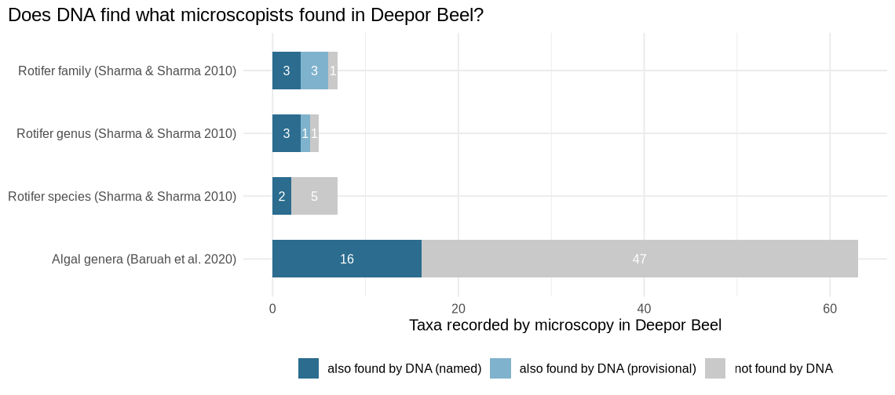
Taxa recorded by microscopy in Deepor Beel, and how many of them the DNA data also detected. The surveys were made in other years and seasons; only presence is compared. Historical water quality from the 2002–03 survey (pH ≈ 6.9, dissolved oxygen ≈ 7 mg/l, conductivity ≈ 98 µS/cm) is context only, not a measurement of these samples.
For specialists — scripts, parameters & full tables
Literature taxa in scripts/literature_deepor.tsv: rotifer families, genera and species from Sharma (2010, Table 3); algal genera from the species accounts of Baruah et al. (2020). DNA detections in Deepor (W2) only.
Script
scripts/15_microscopy_comparison.R# Step 15 — Compare the DNA results for Deepor Beel (W2) with published microscopy surveys of the # same lake (scripts/literature_deepor.tsv): rotifers from Sharma (2010) and algae from # Baruah et al. (2020). Surveys differ in year, season and method, so this tests agreement of the # species/genus lists, not abundances. # Evidence levels for DNA detections: "named" = reference-library name (step 6); "provisional" = # genus of the best GenBank DNA hit >= 80 % (step 7) or best protein hit >= 89 % with rotifer # consensus (step 10). suppressPackageStartupMessages({ library(data.table); library(ggplot2) }) out <- "results/15_microscopy" dir.create(out, recursive = TRUE, showWarnings = FALSE) rd <- function(p) fread(p, sep = "\t", quote = "", na.strings = c("", "NA")) lit <- rd("scripts/literature_deepor.tsv") # ---- Rotifers detected in Deepor by DNA ---- coi <- rd("results/09_ecology/COI_asv_groups.tsv") t18 <- rd("results/06_taxonomy/18S_taxonomy.tsv") bl <- rd("results/06_taxonomy/COI_blast_unknowns_summary.tsv") pr <- rd("results/10_protein/COI_protein_summary.tsv") w2 <- coi[W2 > 0] named_sp <- unique(gsub("_", " ", na.omit(w2[group == "Rotifers", Species]))) named_gen <- unique(c(na.omit(w2[group == "Rotifers", Genus]), na.omit(t18[Class %in% "Rotifera" & W2 > 0, Genus]))) first_word <- function(x) sub(" .*", "", x) prov_gen <- unique(c( first_word(bl[asv %in% w2$asv & ncbi_identity >= 80 & ncbi_phylum == "Rotifera" & !grepl("environmental|sample", ncbi_best_hit), ncbi_best_hit]), first_word(pr[asv %in% w2$asv & aa_identity >= 89 & consensus_phylum %in% "Rotifera", best_hit]))) family_of <- c(Brachionus = "Brachionidae", Keratella = "Brachionidae", Plationus = "Brachionidae", Platyias = "Brachionidae", Anuraeopsis = "Brachionidae", Lecane = "Lecanidae", Asplanchna = "Asplanchnidae", Polyarthra = "Synchaetidae", Filinia = "Trochosphaeridae", Trichocerca = "Trichocercidae", Lepadella = "Lepadellidae", Colurella = "Lepadellidae", Euchlanis = "Euchlanidae", Mytilina = "Mytilinidae", Epiphanes = "Epiphanidae", Cephalodella = "Notommatidae", Proales = "Proalidae", Hexarthra = "Hexarthridae", Microcodon = "Microcodonidae") dna_level <- function(level, name) { if (level == "species") return(if (name %in% named_sp) "named" else "not detected") gens <- if (level == "genus") name else names(family_of)[family_of == name] if (any(gens %in% named_gen)) "named" else if (any(gens %in% prov_gen)) "provisional" else "not detected" } rot <- lit[group == "Rotifera"] rot[, dna_detection := mapply(dna_level, level, name)] fwrite(rot[, .(level, name, note, dna_detection)], file.path(out, "rotifers_microscopy_vs_DNA.tsv"), sep = "\t") dna_rot_gen <- sort(unique(c(named_gen, prov_gen))) fwrite(data.table(genus = dna_rot_gen, evidence = fifelse(dna_rot_gen %in% named_gen, "named", "provisional"), in_microscopy_list = dna_rot_gen %in% rot[level == "genus", name]), file.path(out, "rotifer_genera_DNA_Deepor.tsv"), sep = "\t") # ---- Algae: genera in Deepor by DNA (18S) vs Baruah et al. 2020 ---- roles <- rd("results/09_ecology/18S_asv_roles.tsv") algal_roles <- c("Green algae", "Desmids & conjugating algae", "Diatoms", "Golden & other algae", "Dinoflagellates") dna_alg <- roles[role %in% algal_roles & W2 > 0 & !is.na(Genus) & !grepl("aceae$|_X", Genus), .(reads = sum(W2)), by = .(Genus, role)] mic_alg <- lit[group == "Algae" & level == "genus", name] alg <- merge(dna_alg[, .(genus = Genus, role, dna_reads = reads)], data.table(genus = mic_alg, microscopy = TRUE), by = "genus", all = TRUE) alg[is.na(microscopy), microscopy := FALSE] alg[, found_by := fcase(!is.na(dna_reads) & microscopy, "both", !is.na(dna_reads), "DNA only", default = "microscopy only")] # Microscopy-only genera that 18S cannot (cyanobacteria: bacteria, no 18S gene) or rarely # (euglenoids: divergent 18S, poorly amplified by V4 primers) detect cyano <- c("Aphanocapsa", "Aulosira", "Chroococcus", "Cylindrospermum", "Merismopedia", "Microcystis", "Nostoc", "Oscillatoria", "Phormidium", "Pleurocapsa", "Spirulina") eugl <- c("Euglena", "Gyropaigne", "Lepocinclis", "Phacus", "Strombomonas", "Trachelomonas") alg[, note := fcase(genus %in% cyano, "cyanobacterium: no 18S gene, not detectable", genus %in% eugl, "euglenoid: poorly amplified by 18S V4 primers", default = "")] setorder(alg, found_by, -dna_reads, genus) fwrite(alg, file.path(out, "algae_genera_microscopy_vs_DNA.tsv"), sep = "\t") summ <- rbind( rot[, .(comparison = paste("Rotifer", level, "(Sharma 2010)"), microscopy = .N, also_by_DNA_named = sum(dna_detection == "named"), also_by_DNA_provisional = sum(dna_detection == "provisional")), by = level][, -"level"], data.table(comparison = "Algal genera (Baruah et al. 2020)", microscopy = length(mic_alg), also_by_DNA_named = alg[found_by == "both", .N], also_by_DNA_provisional = 0L)) summ[, DNA_only := c(NA, NA, NA, alg[found_by == "DNA only", .N])] fwrite(summ, file.path(out, "comparison_summary.tsv"), sep = "\t") # ---- Figure ---- pl <- melt(summ, id.vars = "comparison", measure.vars = c("also_by_DNA_named", "also_by_DNA_provisional"), variable.name = "evidence", value.name = "n") pl[, missed := summ$microscopy[match(comparison, summ$comparison)] - ave(n, comparison, FUN = sum)] pl <- rbind(pl[, .(comparison, evidence, n)], unique(pl[, .(comparison, evidence = "not detected by DNA", n = missed)])) pl[, evidence := factor(evidence, levels = c("also_by_DNA_named", "also_by_DNA_provisional", "not detected by DNA"), labels = c("also found by DNA (named)", "also found by DNA (provisional)", "not found by DNA"))] pl[, comparison := factor(comparison, levels = rev(summ$comparison))] p <- ggplot(pl, aes(n, comparison, fill = evidence)) + geom_col(width = 0.6, position = position_stack(reverse = TRUE)) + geom_text(aes(label = ifelse(n > 0, n, "")), position = position_stack(vjust = 0.5, reverse = TRUE), colour = "white", size = 3.4) + scale_fill_manual(values = c("#2b6c8f", "#7fb2cc", "#c9c9c9")) + labs(x = "Taxa recorded by microscopy in Deepor Beel", y = NULL, fill = NULL, title = "Does DNA find what microscopists found in Deepor Beel?") + theme_minimal(base_size = 12) + theme(legend.position = "bottom", plot.title.position = "plot") dir.create("work/plots", recursive = TRUE, showWarnings = FALSE) saveRDS(p, "work/plots/15_microscopy.rds") ggsave("docs/img/15_microscopy.png", p, width = 9.5, height = 4.2, dpi = 120) print(rot[, .(level, name, dna_detection)]); print(summ); print(alg[found_by == "both"])comparison microscopy DNA (named) DNA (provisional) DNA only Rotifer family (Sharma 2010) 7 3 3 Rotifer genus (Sharma 2010) 5 3 1 Rotifer species (Sharma 2010) 7 2 0 Algal genera (Baruah et al. 2020) 63 16 0 23 results/15_microscopy/comparison_summary.tsv
level name note DNA family Brachionidae important family (Table 3) named family Lecanidae important family (Table 3) provisional family Asplanchnidae important family (Table 3) named family Synchaetidae important family (Table 3) named family Trochosphaeridae important family (Table 3) provisional family Trichocercidae important family (Table 3) provisional family Lepadellidae important family (Table 3) not detected genus Lecane important genus (Table 3) provisional genus Brachionus important genus (Table 3) named genus Keratella important genus (Table 3) named genus Asplanchna important genus (Table 3) named genus Platyias important genus (Table 3) not detected species Asplanchna priodonta important species (abstract, Table 3) not detected species Keratella cochlearis important species (abstract, Table 3) not detected species Platyias quadricornis important species (abstract, Table 3) not detected species Lecane leontina important species (abstract, Table 3) not detected species Polyarthra vulgaris important species (abstract, Table 3) named species Keratella tropica important species (abstract, Table 3) named species Brachionus falcatus important species (abstract, Table 3) not detected results/15_microscopy/rotifers_microscopy_vs_DNA.tsv
Output files
In summary
What the data tells us
Two very different microscopic worlds
Chandubi is an algae-and-grazer lake: green algae, diatoms, protozoa and rotifers. Deepor is richer in kinds but leans towards fungi, water moulds, desmids and small worms. By 18S the lakes share only 14.5% of their DNA types.
Rotifers rule the zooplankton
About 60% (Chandubi) and 65% (Deepor) of animal (COI) reads are rotifers, many of them species not yet in any DNA library. Copepods (Mesocyclops, Eucyclops, Microcyclops) are present; water fleas were not detected.
Two barcodes are better than one
Most named animal genera were seen by only one of the two barcodes — neither alone gives the full picture.
An abundant, unknown organism
The most common COI signature in both lakes matches nothing on record above ~72% at DNA level; even its protein sits between a nematode and stramenopile algae. It is a genuine unknown — a candidate for closer study.
A nutrient-rich signal in both lakes
The rotifer index QB/T is about 5 in Chandubi and 5 in Deepor — well above the threshold of 2 for nutrient-rich water (provisional, as some genus names rest on distant matches).
Shared zooplankton, different microbes
By COI, 266 of 345 animal signatures occur in both lakes at similar levels, while the algae, protists and fungi (18S) differ sharply. The sequencing lab has confirmed that the samples were handled correctly, so this is treated as a real pattern: the two floodplain lakes appear to draw on the same regional pool of rotifers, while their microscopic producers and decomposers reflect each lake’s own conditions.
DNA agrees with the microscope
In Deepor, DNA recovers the desmids that microscopists found dominant and four of the five key rotifer genera — and adds genera the surveys did not list.
Cautions
One water sample per lake: differences describe these two samples and cannot be tested statistically. Read counts reflect DNA, not the number or weight of organisms. Traces of fish and mammal DNA in Deepor are too few to interpret.
Still to do
Before submission
- Author details — co-authors, ORCID, acknowledgements, funding and competing-interest statements on the title page and declarations (marked in brackets in the manuscript).
- SRA runs — finish uploading the eight read files to BioProject PRJNA1551452 if not yet done.
- Replication — more samples per lake (or another season) would allow statistical comparison in a follow-up study.
Words used on this page
- eDNA
- Environmental DNA — genetic material organisms leave in water, soil or air.
- Barcode gene
- A short gene that differs between species, used like a product barcode to tell them apart.
- Read
- One stretch of DNA letters produced by the sequencer.
- Primer
- A short starter DNA piece used to copy the barcode; removed before analysis.
- ASV
- Amplicon sequence variant — one exact, unique DNA signature, roughly one kind of organism.
- Chimera
- An artificial sequence accidentally stitched from two organisms during copying.
- Rarefaction
- A check of whether sampling more would have found many more signatures.
- Reference library
- A collection of DNA sequences from organisms that experts have identified, used to name new sequences.
- % identity
- How many DNA letters two sequences share; 97–100% usually means the same species.
- Effective number of types
- Diversity expressed as the number of equally common types that would give the same diversity.
- Indicator organism
- A species whose presence or abundance signals something about water conditions, such as nutrient level.
- BLAST / GenBank
- BLAST is a search tool; GenBank is the public archive of nearly all published DNA sequences.